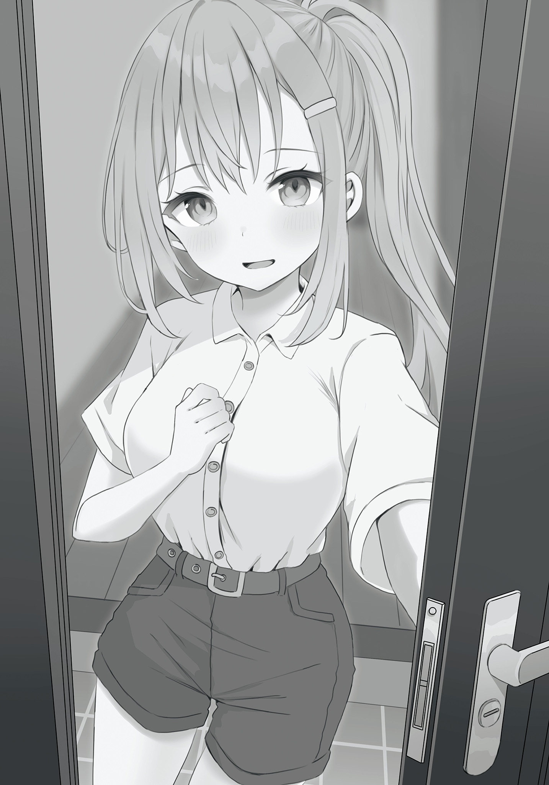
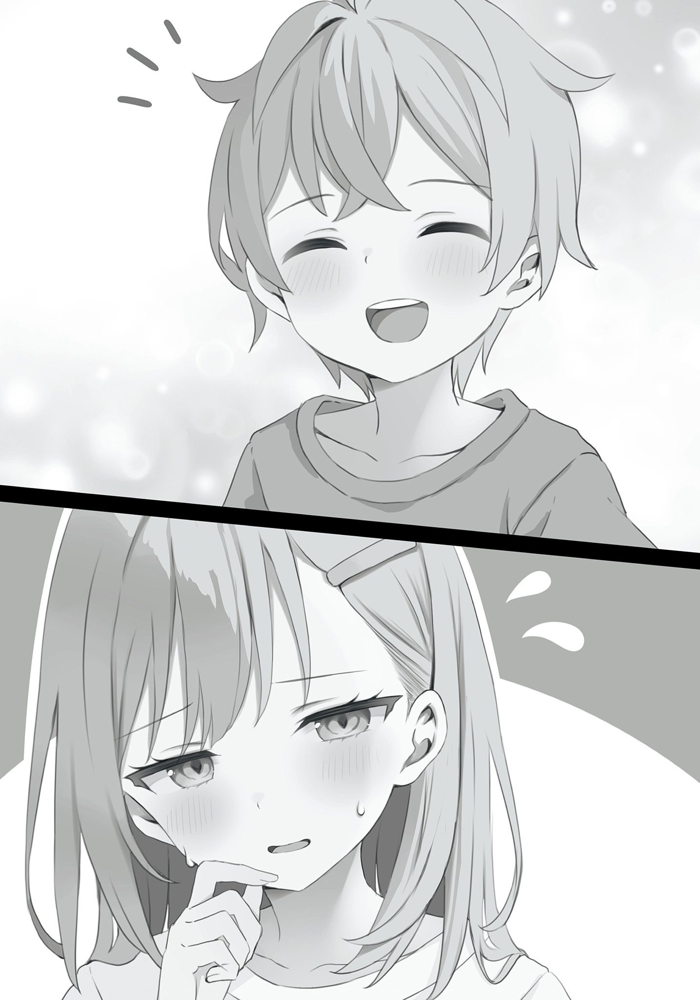
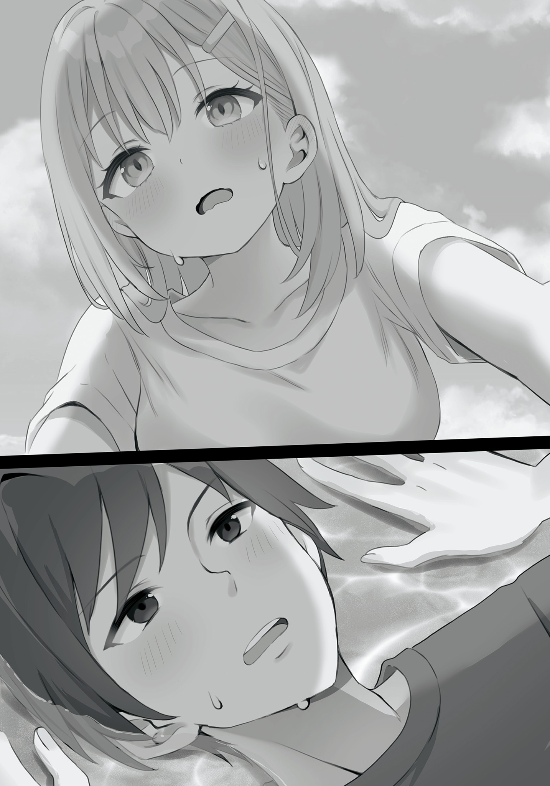
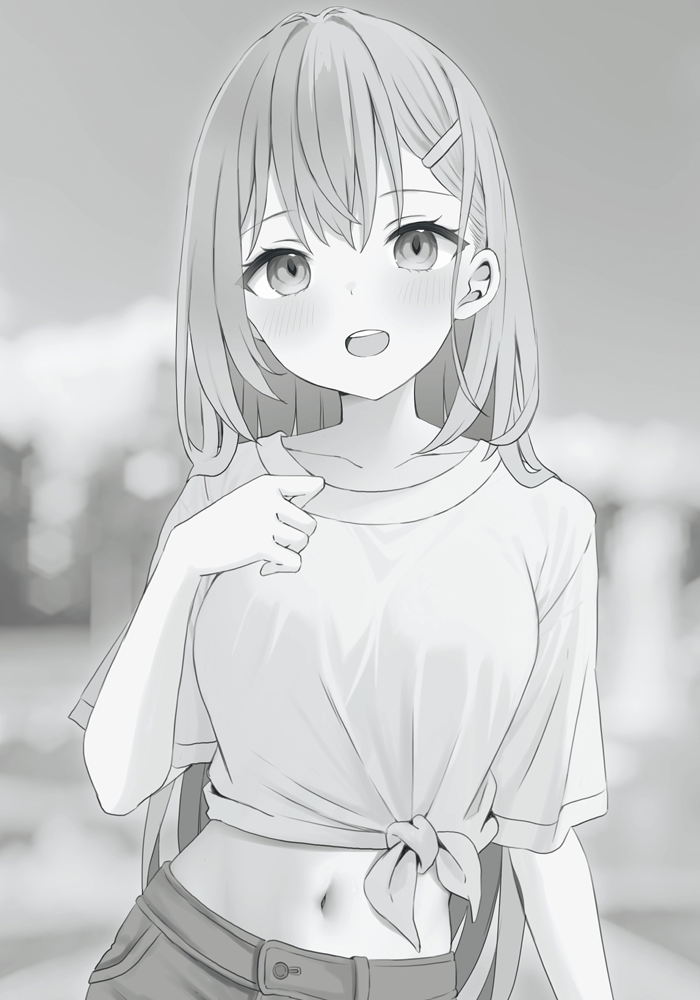
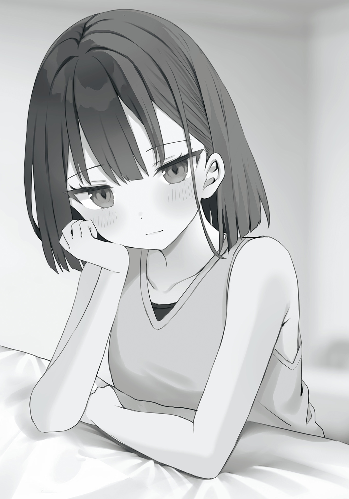
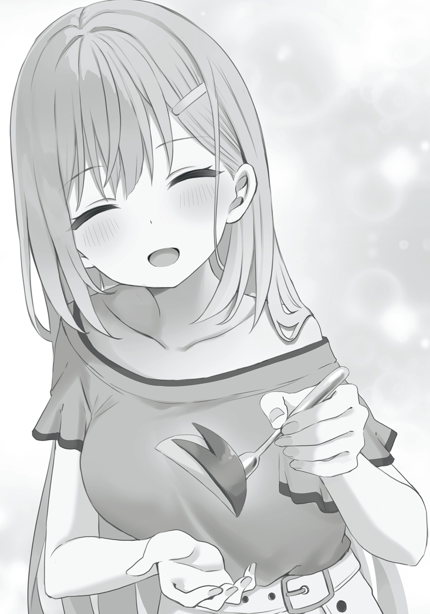
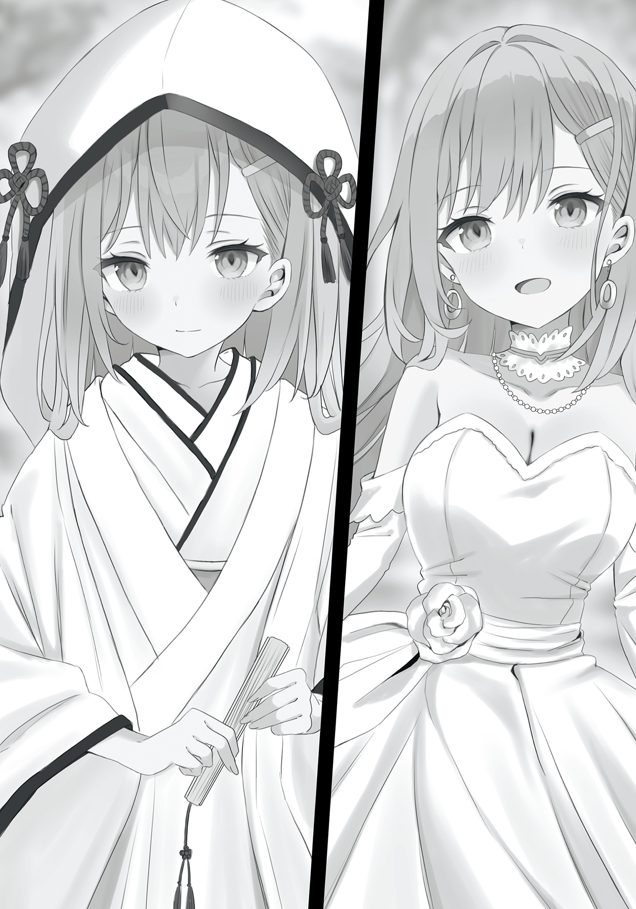
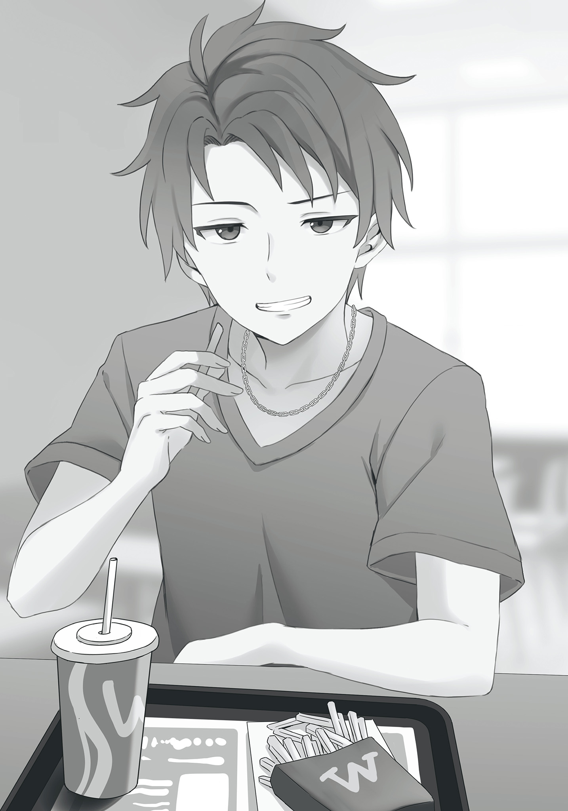
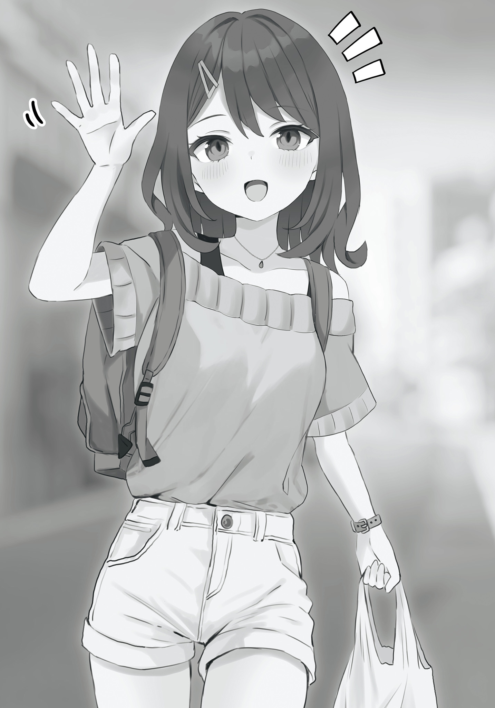
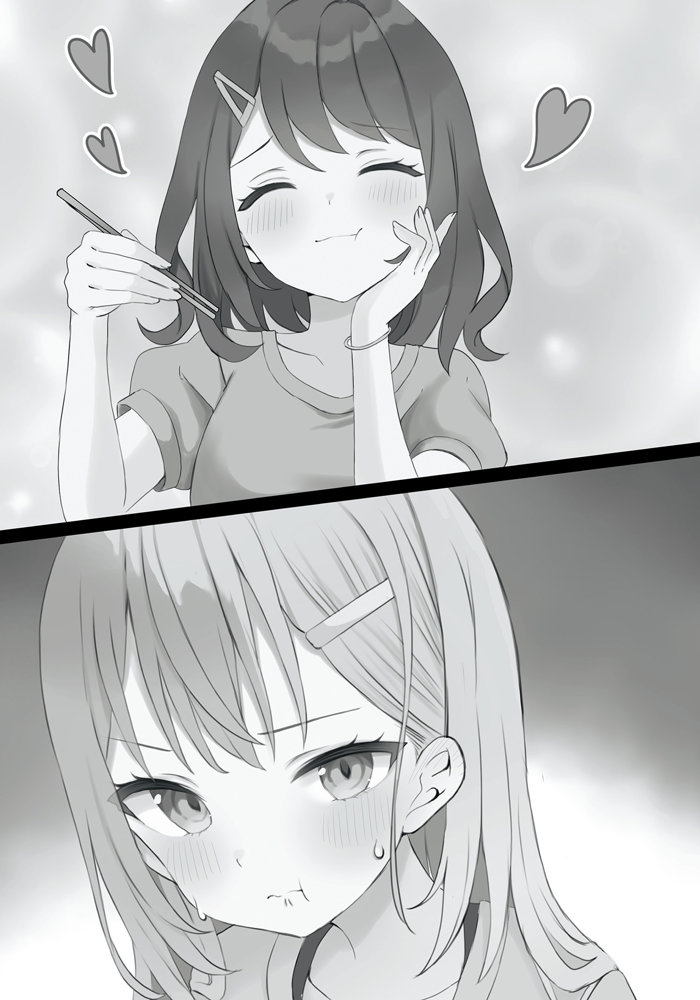

开始做家事代劳的打工后，我被学园第一美少女的家人看上了。 2
盐本
开始做家事代劳的打工后，我被学园第一美少女的家人看上了。 2
盐本
本书刊载内容的著作权等知识产权及其他所有权利，皆属于SB Creative股份有限公司或正当的权利所有者。
未经权利者的许可，禁止擅自复制、复印、翻译、广播、出版、数据传输（包括任何形式的数字化复制）等内容。
封面・彩页・本文插画
秋乃える
Contents
手工水饺与报告
动物森活公园
为她着迷
谎言与真心
假恋人
恋人练习
东条家主办的BBQ
在仙女棒的火光照耀下
万里无云的晴空下，蝉鸣声不绝于耳。
在一天比一天炎热的暑假里，晴翔站在某座豪宅前，皮肤仿佛被火辣辣的阳光灼烧着。
他用已经有些熟练的动作按下门铃。
『大槻同学？』
听到声音后，晴翔微微一笑。
「是的，我今天也来代做家务了」
『我等你很久了，现在就去开门』
门铃里传来有些高兴的声音，随后东条家的门打开了，一位少女从里面走了出来。
在夏日阳光的照耀下，亚麻色的秀发熠熠生辉。修长的手脚，以及让人不禁看得入迷的迷人身材。少女微微眯起一双大大的美丽双眼，迎接晴翔的到来，或许是阳光太刺眼了吧。
东条绫香。据说是晴翔学校里最可爱的“校园偶像”。同时，也是他在暑假期间开始的家务代理工作中的顾客。
「欢迎你，大槻同学。外面很热吧，快进来」
「谢谢。今天也请多多关照」
绫香笑容满面地邀请晴翔进去，他也跟着露出笑容，走进了东条家。
一走进宽敞的豪宅玄关，走廊尽头的门就猛地打开，一个男孩从里面冲了出来。
「是哥哥——！！」
绫香的弟弟凉太，脸上洋溢着幼儿园小朋友特有的活泼笑容，哒哒哒地冲向晴翔。
「你好，凉太。今天也很有精神呢」
「你好！哥哥今天要做什么？」
晴翔蹲下身接住冲过来的凉太。凉太眼睛闪闪发光地问道。
「这个嘛，今天啊……」
晴翔看向绫香。绫香接收到他的视线后，告诉他今天家务代理的要求。
「今天呢，要打扫客厅，还有爸爸说想拜托你打扫一下车库」
「打扫客厅和车库是吗，我明白了」
「嗯，还有就是跟往常一样，晚饭也拜托你了」
「好的」
晴翔轻轻点头，答应了绫香提出的家务代理要求。这时凉太一脸期待地拉住晴翔的手臂。
「哥哥，今天的晚饭是什么？汉堡肉吗！？」
凉太似乎已经完全迷上了晴翔做的汉堡肉。面对一脸兴奋地盯着自己的凉太，晴翔笑着回答。
「啊哈哈，今天不是汉堡肉，我想做饺子。凉太君喜欢吃饺子吗？」
「饺子！？我最喜欢饺子了！！」
凉太兴奋地抓住晴翔的手臂上下摇晃。
「喂凉太，不要拽着大槻君！他的手会被你拽掉的！」
绫香立刻提醒弟弟。凉太听到姐姐的提醒后，虽然停止了摇晃晴翔的手臂，但还是没有放开，脸上笑嘻嘻的。
「哥哥，我也可以一起帮忙打扫吗？」
「当然可以，凉太君能帮忙的话，打扫就能更快结束了」
晴翔露出柔和的笑容，摸了摸凉太的头。看着弟弟开心的样子，绫香露出了苦笑。
「谢谢你大槻君，总是陪凉太玩」
「没事没事。话说回来，今天修一叔叔和郁惠阿姨去上班了吗？」
「嗯，他们今天都去公司了。晚饭时间应该会回来」
她的父母都是公司的经营者。因此，虽然可以自由选择在家工作，但另一方面，他们有时需要早出晚归，有时需要突然出差，工作十分繁忙。
「我回想起自己第一次来东条家做家务代理的时候」
「是啊。那时候爸爸妈妈也因为出差不在家」
暑假刚开始的时候，绫香代替出差的父母独自做家务和照顾凉太。但是，由于在结业式那天被高年级学生公开告白，精神上疲惫不堪的她决定依靠家务代理服务。
于是，她遇到了在学校里几乎没有任何交集的晴翔。
回想起第一次来东条家做家务代理时的事情，晴翔感慨地说道。
「明明不是很久以前的事，却感觉有点怀念呢」
「是啊。真想回到过去，夸奖一下当时决定委托家务代理的自己」
听到绫香这么说，晴翔开心地笑了。
「这是在自卖自夸吗？」
「嗯，因为……」
绫香轻轻点了点头，脸颊微微泛红，害羞地小声说道。
「因为那时候，如果我没有委托家务代理的话，就不会和大槻君相遇了……」
「……」
绫香抬眼瞥了晴翔一眼，又马上移开了视线。看到她这个动作，晴翔的心跳不由自主地加快了。
「那个……我也觉得第一次的工作地点是东条家，真是太好了……」
「真的吗？呵呵……好开心」
看到她发自内心地露出喜悦的笑容，晴翔忍不住移开视线，拼命地抑制住嘴角的上扬。
他的脑海中，浮现出前几天在电影院约会时的情景。
回想起两人像真正的恋人一样手牵手看电影时的情景，晴翔的脸渐渐红了起来。
同样，绫香也红着脸，露出开心的表情。
「…………」
「…………」
晴翔绞尽脑汁想要说些机灵的话，但越是思考，大脑就越是一片空白，思考从话语中溜走。
晴翔和绫香之间，陷入了一种令人焦急的沉默。但是，这种沉默并没有持续多久。
在玄关站着说话的两人，让年幼的凉太等得不耐烦了，他拉了拉晴翔的手臂。
「哥哥！快点打扫客厅吧！」
「啊，抱歉，凉太君。那么现在开始服务」
「嗯，嗯。请多关照」
凉太的活泼让晴翔从尴尬中解放出来，稍微松了一口气。但是，在他的内心深处，同时也感到有些遗憾。但是，晴翔故意不去触碰那种感情，今天也开始了东条家的家务代理。
※
晴翔按照绫香的要求，打扫完客厅后，开始打扫车库。
由于父母都去上班了，所以车库里没有车，处于容易打扫的状态。
「凉太君，能帮我往这边洒水吗？」
「嗯！知道了！」
凉太拿着水管，往晴翔指定的地方洒水。
「谢谢你，凉太君」
晴翔一边道谢，一边用刷子刷着水泥地。
「哥哥！接下来要往哪里洒水？」
凉太有一半是在玩水的感觉，开心地握着洒水器。看到他这个样子，晴翔露出了温和的笑容。
「那么接下来就往那边洒水吧」
「知道了！」
听到凉太充满活力的回答，晴翔也跟着开心起来，继续打扫车库。
然后，当打扫全部结束后，回到自己房间的绫香来看了看晴翔和凉太的情况。
「谢谢你，大槻君。车库变得非常干净呢。爸爸一定会很高兴的」
「那就好」
「啊，晚饭的饺子，你们要去买食材吧？」
「是的，打扫也结束了，我正想着接下来要去采购」
听到晴翔说“采购”，凉太两眼放光地看向他。
「买东西！？我也一起去！」
「嗯，那我们一起去买东西吧，凉太君」
「啊，那我也一起去吧」
看到晴翔对凉太露出笑容，绫香也说要一起去采购。听到姐姐的话，凉太更加开心地欢呼起来。
「大家一起买东西！」
「是啊。那么车库的打扫也快结束了，赶紧把它做完吧」
「嗯！！」
之后，晴翔和绫香以及凉太三人一起前往超市。
晴翔马上单手拿着购物篮，开始挑选肉品区的猪肉馅。
「嗯～国产猪肉馅的实惠包装一百克118日元，好便宜……但是不需要这么多……不过普通包装的话，一百克就要128日元了……」
晴翔用手托着下巴，来回看着大容量的实惠包装和普通尺寸的猪肉馅。绫香瞥了一眼他认真烦恼的侧脸，然后问道。
「猪肉馅除了包饺子以外，还有其他用途吗？」
「是啊。可以加葱和鸡蛋炒成甜辣味的肉末，还可以做成肉末咖喱」
「两种都很好吃的样子」
「下次做给你吃吧？」
「嗯！我想吃」
「好。那这次就买实惠包装的吧」
晴翔说着，拿起大容量的猪肉馅放进购物篮。
之后，他把包饺子所需的食材都放进购物篮，最后来到了烘焙材料区。
看着货架上摆放的砂糖，松饼粉和可可粉等袋装商品，凉太一脸兴奋地抬头看向晴翔。
「哥哥要做点心吗？」
「不，与其说是点心，不如说是想做些和饺子一起吃的饭后甜点」
面对眼神中充满期待的凉太，晴翔笑着回答，然后拿起陈列在货架下方的两种豆沙馅。
「顺便问一下，东条同学是喜欢豆沙馅还是红豆馅？」
「诶？唔～我应该是喜欢豆沙馅吧？」
「原来如此」
听了绫香的回答，晴翔点了点头，然后看向左手拿着的豆沙馅。
「用豆沙馅做什么？红豆粥？」
「不，我想把豆沙馅和奶油芝士混合在一起，用饺子皮包起来」
「那是什么？听起来超好吃的！」
「是用饺子皮做的豆沙派」
看到绫香对甜食充满期待的反应，晴翔也露出了笑容。
「顺便问一下，大槻君喜欢豆沙馅吗？」
「不，我喜欢红豆馅」
「诶～是吗？明明豆沙馅更好吃」
「这可不好说哦？红豆馅能吃到豆子的口感，不是挺好的吗？」
晴翔主张红豆馅的优点，绫香也不服输地诉说豆沙馅的优点。
「豆沙馅的口感也很滑顺吧？有种高级的感觉」
「红豆馅的多酚含量更高，所以美容效果更好哦？」
「真的吗？」
听到晴翔抓住了女性的弱点——美容效果，绫香对豆沙馅的爱产生了动摇。
「是的，而且多酚似乎还有抑制糖分吸收的效果，所以吃红豆馅比吃豆沙馅更不容易发胖」
「！？但，但是但是！！我记得之前在网上看到过豆沙馅的卡路里比较低！」
「因为豆沙馅去掉了皮。但如果为了弥补这一点而加入大量砂糖的话，豆沙馅的卡路里反而会更高哦？」
「这，这个……是这样没错」
「红豆馅很好吃哦？」
「呜……确实。好像很有魅力」
虽然绫香看起来很不甘心，但还是承认了红豆馅的魅力。晴翔见状，露出了微笑。
「欢迎来到红豆馅的世界」
又增加了一名红豆馅同志的晴翔满意地点了点头，把豆沙馅放回货架上，然后把红豆馅放进购物篮里。
「凉太君也选红豆馅可以吗？」
「嗯！我喜欢豆沙馅！！」
看到凉太满脸笑容地回答，晴翔得到了极大的治愈，然后走向收银台。
※
晴翔一回到东条家就开始包饺子。
把白菜切成粗丝，撒上盐，然后用计量器量好低筋面粉，高筋面粉和盐，倒入大碗里。
东条姐弟一如既往地坐在厨房前的吧台席上，看着晴翔做菜。
晴翔把热水倒入碗里，开始揉制饺子皮。绫香佩服地说道。
「不愧是大槻君，连饺子皮都自己做」
「虽然市售的饺子皮也很方便，但自己做的饺子皮会更Q弹哦」
晴翔一边用体重压着面团揉制，一边回答。
揉制面团五分钟后，晴翔把面团揉成圆形，用保鲜膜包好，然后开始制作饺子馅。
把肉末，用热水溶解的鸡汁高汤和芝麻油混合在一起搅拌。然后把揉好水分的白菜加入其中，再次搅拌。
「大槻家的饺子是白菜馅啊」
绫香对在白菜之后加入大蒜和生姜的晴翔说道。
「是啊。东条同学家是卷心菜吗？」
「嗯。我家的饺子是卷心菜馅」
「卷心菜的口感和甜味也很不错呢」
晴翔一边和绫香聊天，一边做好了饺子馅。
把装着馅料的碗用保鲜膜包好放入冰箱醒面的期间，他再次开始制作饺子皮。
把醒好的面团分成几份，然后拉成棒状。接着切成小块，用掌心和擀面杖擀成圆形。
「大槻君，你手真巧啊」
「是吗？」
听到绫香的夸奖，晴翔露出腼腆的笑容。
这时，一直默默看着他们包饺子的凉太突然从吧台席上跳下来，跑到晴翔身边。
「大哥哥，我也要帮忙包饺子！我想包饺子！」
「哦，你要帮忙吗？谢谢。那就拜托你了」
晴翔对干劲十足的凉太露出笑容，从冰箱里拿出醒好的馅料。
「啊，那我也来帮忙」
继弟弟之后，绫香也从椅子上站起来，走到晴翔身边。
「谢谢。那我来擀皮，可以麻烦你和凉太一起包馅吗？」
「好」
之后，晴翔负责擀皮，东条姐弟负责包饺子。
「大槻君擀的皮好大，包起来很方便」
绫香在饺子皮的边缘涂上水，一边捏褶子一边包馅，她有些感动地说道。
「我擀的皮比市面上卖的要厚一些，吃的时候应该能享受到Q弹的口感」
「好期待。喂，凉太，你包的馅太多了！」
绫香慌忙制止在一旁拼命往皮里放馅的弟弟。
「放那么多馅，你包不住的」
「但是大哥哥的皮可以拉得很长，没问题的！」
凉太说着就拉长皮，强行把馅包进去。
「姐姐你看！我包好了！」
凉太一脸得意地说道，绫香露出苦笑。
「确实包好了……但是这已经不是饺子，而是肉包子了」
正如绫香所说，凉太手里的东西和普通的饺子相去甚远。
「没事，只要煮熟了就行。就算形状不一，也有一种手工制作的感觉，挺好的」
「也是」
晴翔一边用擀面杖擀皮一边说道。绫香也苦笑着同意了，她弟弟正在量产肉包子一样的饺子。
之后，我们三人热闹地包着饺子，修一和郁惠同时回来了。
「我回来了。大槻君，今天也谢谢你来帮忙做家务」
修一来到客厅，向站在厨房的晴翔打招呼。郁惠也跟着走进客厅，看到我们三人一起做饭的样子，她脸上绽放出笑容。
「哎呀！今天的晚饭是饺子啊。看起来很好吃呢」
「妈妈，我也帮了大忙哦！」
「是吗？真了不起」
郁惠对凉太露出微笑，然后看向晴翔。
「谢谢你，大槻君」
「不，凉太和绫香帮了我很多忙」
「是吗？呵呵，太好了呢，绫香」
郁惠一边说着，一边对站在晴翔旁边的绫香露出笑容。
「嗯，嗯……爸爸和妈妈快点去换衣服吧。饺子已经包好了，接下来只要煎一下就行了」
绫香因为母亲的视线而脸颊微微泛红，为了掩饰这一点，她催促着父母。
「好啊。我很期待大槻君亲手做的饺子！」
修一高兴地点了点头，突然向晴翔问道。
「怎么样，大槻君？今天也一起吃晚饭吧？」
「咦？可以吗？」
「当然可以！我们家随时欢迎大槻君」
「谢谢。那我就恭敬不如从命了」
「嗯。今天的晚饭似乎会很愉快呢。妈妈，我们去换衣服吧」
「好啊」
听到晴翔的回答，修一和郁惠两人高兴地离开了客厅。
「真是的，爸爸太喜欢大槻君了」
看到刚才修一的样子，绫香苦笑着说道。对此，晴翔一边把电烤盘放在餐桌的正中央一边回答。
「我很高兴他们能喜欢我」
「真的吗？如果觉得烦的话要马上告诉我哦？」
「我完全没有觉得烦」
晴翔摸着把包好的饺子放在托盘上端过来的凉太的头，笑着回答。
在修一和郁惠换衣服的时候，晴翔把包好的饺子放在电烤盘上开始煎。
「啊，对了。今天我想告诉爸爸妈妈我要和大槻君一起去动物之森公园」
听到绫香的话，正在把酱油和辣油混合在一起做饺子酱的晴翔抬起头。
「是啊」
前几天去看电影的时候，我们约好下周晴翔休息的时候，包括凉太在内，三个人一起去“动物之森公园”。
那是一座以自然为主题的公园，占地广阔，有与动物互动的区域，玩水的区域，草坪区域等，我们打算当天带便当去玩一整天。
「晚饭的时候说可以吗？」
「嗯，可以哦」
绫香有些试探地问道，晴翔微微歪头。
「妈妈可能会调侃你，爸爸也可能会失控……」
「啊……没事的。我不讨厌热闹」
晴翔察觉到她担心什么，苦笑着点头。
不久后，换好衣服的修一和郁惠回到客厅，东条家加上晴翔一共五个人围坐在餐桌旁。
「差不多可以了，我打开盖子哦」
晴翔说着打开电烤盘的盖子，一股热气腾腾地升起，饺子的香味弥漫开来。
听到饺子发出啪嗒啪嗒的声响，修一笑了。
「哦！看起来很好吃啊」
「饺子和肉包一起做了吗？」
郁惠看着整齐排列的饺子中时不时混杂着的巨大的肉包，微笑着说道。
「那是我做的饺子啊！！」
凉太得意洋洋地对母亲说道，郁惠“呵呵”地笑了。
「啊，是这样啊。看起来很有嚼劲，真是出色的饺子啊」
听着东条母子的对话，晴翔嘴角上扬，拿起铲子将煎好的饺子翻过来。
饺子煎得金黄酥脆，修一迫不及待地双手合十。
「那么，我开动了！」
以他这句话为开端，大家也一起合掌说“我开动了”，然后将筷子伸向饺子。
绫香吃了一口热腾腾的饺子，微微睁大眼睛，左手捂住嘴。
「真的。比市面上卖的饺子皮更Q弹，很好吃」
「哎呀？这个，连皮也是大槻君亲手做的吗？」
继绫香之后，郁惠也吃了一口，有些惊讶地问晴翔。
「是的，我稍微多加了一些高筋面粉，让皮更有嚼劲」
「好吃！这真是极品啊大槻君！哎呀真的很好吃！」
修一一口吃下刚煎好的饺子，一边吹着气一边对晴翔的饺子赞不绝口。
「爸爸，我做的饺子也很好吃哦！尝尝看！」
「嗯嗯。凉太做的就是这个吧？……嗯！这个也很好吃！做得真好」
「嘿嘿」
被修一夸奖后，凉太开心地笑了起来，然后拼命地对着饺子吹气，然后津津有味地吃了起来。
之后，大家热闹地享受着饺子，度过了一段愉快的晚餐时间。
「那个，我有话要对爸爸妈妈说」
时不时观察着父母的绫香缓缓开口。
「嗯？什么？」
今天也对晴翔的料理非常满意的修一高兴地看向女儿。
「那个，下周，那个……我要和大槻君一起带凉太去动物森林公园」
绫香刚说完，修一的表情就一下子亮了起来。
「你要去约会啊！」
「约，凉太也在一起啦！」
「哎呀哎呀！绫香真是的，哎呀哎呀，真是的！」
「毕，毕竟难得的暑假，凉太也想去玩吧？」
她为了从马上就要失控的修一和笑得不怀好意的郁惠那里逃开，把话题抛给了弟弟。被抛到话题的凉太，高兴地看向晴翔。
「真的吗！？哥哥要带我去玩吗！？」
「嗯，真的哦」
「太好了————！！」
凉太高举双手，发出欢呼声。看到儿子的样子，修一看向晴翔。
「大槻君，谢谢你。其实进入暑假之后，我们还没有带他去任何地方玩过。我一直觉得很对不起他。所以你能和凉太一起去玩，真的帮了大忙」
修一低下头道谢。郁惠也跟着向晴翔道谢。
「谢谢你，大槻君。明明你还在家务代理上帮了我们」
「不不不。当天我也会好好享受的」
「你能这么说真是太好了」
修一和郁惠因为工作繁忙，还没有带凉太去任何地方玩过，所以他们发自内心地向晴翔道谢。
这时，绫香再次向父母搭话。
「然后呢，去动物之森公园那天，我打算带便当去。所以那天早上，我可以和大槻君一起在家里的厨房做便当吗？」
「当然可以！你可以随意使用！」
郁惠立刻回答了绫香的问题。这时，心情比刚才更好的修一，嘴里塞着一个饺子说道。
「今天的晚餐很好吃，而且非常愉快呢！」
之后，包括晴翔在内的东条家的晚餐，一直持续着热闹愉快的气氛。
去『动物森林公园』的前一天，晴翔像往常一样在东条家做家务代理的兼职。
他正在做今天的委托，也就是厨房周边的清扫。这时，正在远程办公的郁惠向他搭话。
「说起来，你今天要和绫香去买明天便当的食材吧？」
「啊，是的」
「那么，今天家里的打扫就做到这里就行了，多花点时间和绫香一起买东西吧。来，这是买东西的钱」
「不不！不能收这么多！」
晴翔挥挥手，拒绝了郁惠递出的钞票。
「明天我不是做家务代理，而是作为绫香的朋友一起去，所以便当的食材费也对半分摊吧……」
「不用在意。你都带凉太出去玩了。作为家长，这点小事就让我来吧」
郁惠一边说着，一边抓住晴翔的手，把钱塞进他的掌心。
「好吗？大槻君，拜托了」
郁惠歪着头，抬眼看着晴翔。
虽然是成年女性，但这个动作却有些稚气可爱。这种反差和郁惠本人的美貌相辅相成，让晴翔不由得红着脸移开了视线。
「那个……好的。我明白了」
「呵呵，谢谢你，大槻君」
晴翔无法直视郁惠，只能移开视线点头。看到他这个样子，郁惠露出了微笑。
这时，在自己房间里做暑假作业的绫香来到了客厅。
「妈妈，自动铅笔的笔芯在哪里……等一下妈妈！？」
正想问母亲问题的女儿，突然慌慌张张地闯入了晴翔和郁惠之间。
「为什么你和大槻君牵着手！？」
看到女儿充满危机感的焦急模样，郁惠露出了满意的笑容。
「哎呀哎呀，怎么这么慌张呢？我只是把买东西的钱交给大槻君而已哦？」
「那正常地给他不就行了！？你看！大槻君都为难了，快点把手放开！」
「哎呀？被我这样的阿姨牵着手很讨厌吗？对不起啊」
郁惠一边说着，一边放开了晴翔的手。而他则微微低下头，简短地回答道：「不……没关系」。
看到晴翔的样子，绫香用锐利的眼神看向母亲。
「妈妈接下来不是要远程开会吗？不快点准备的话会迟到的哦？」
绫香一边说着，一边推着郁惠的后背，想让她远离晴翔。
「离会议还有三十分钟，不用那么着急也没关系哦？」
「妈妈是社长，绝对不能迟到吧？好了快点快点！」
「哎呀，我知道了。那么大槻君就拜托你了」
被绫香推着后背的郁惠，稍微回过头来向晴翔挥了挥手。然后，又被绫香更用力地推着后背。
和晴翔刚开始做家务代理的时候相比，女儿的反应逐渐发生了变化。郁惠对此露出了欣慰的表情，用晴翔听不到的声音小声说了些什么。
也许是因为那句低语，绫香耳朵通红，拼命地推着母亲的后背。
※
按照刚才郁惠说的那样，晴翔简单打扫完东条家后，准备去买东西。绫香也配合着开始准备外出。在客厅里看战队视频的凉太，像往常一样靠过来想跟着晴翔一起去买东西。
「买东西？我也要去！」
没有理由拒绝的晴翔，笑着准备点头同意。
但是，绫香先一步开口了。
「这次不行哦。凉太就留在家里吧」
「诶！为什么不行啊！」
听到姐姐的话，凉太嘟起嘴，露出不满的表情。
「这次要买的东西可能会很多，而且要和大槻君商量各种事情，所以凉太就留在家里吧。明白了吗？」
「不要！我也想一起去！」
「不行哦。拜托了，这次就听姐姐的话好吗？好吗？」
绫香蹲在凉太面前，与他视线齐平地劝说着。但是面对姐姐的恳求，凉太不满的表情依然没有改变。
「嘴上这么说，其实姐姐是想独占哥哥吧！」
「不，不是哦？不是那样的。这次是要商量便当的事情——」
「姐姐喜欢哥哥，所以想和哥哥在一起吧！我就是碍事的人！」
「不，不是的！凉太听我说啊？我并没有——」
「我也喜欢哥哥啊……」
凉太闹别扭地低下了头。
「那个，东条同学」
看不下去的晴翔向绫香搭话，她慌忙开口说道。
「啊，大槻君听我说！我，我并不是想独占大槻君，那，那个，喜欢什么的也是凉太擅自说的……」
「不，我也很高兴凉太君喜欢我哦」
晴翔苦笑着说道，绫香则露出为难的表情。
不管绫香内心是怎么想的，这次购物正如她刚才所说，要买的东西很多，而且还要一边商量便当的内容一边购物。因此，凉太不在的话确实能更顺利地购物。
但是，看到闹别扭的凉太，晴翔和绫香心中都涌起一股罪恶感。
就在气氛变得“果然还是带他去吧”的时候，结束视频会议的郁惠出现在客厅。
「凉太。在姐姐和哥哥去买东西的时候，你就和妈妈一起吃冰淇淋等他们回来吧」
郁惠的双手各拿着一个高级杯装冰淇淋。看到冰淇淋的瞬间，凉太的表情一下子亮了起来。
「冰淇淋！！」
另一方面，绫香看到郁惠手里的冰淇淋，发出悲伤的声音。
「那是我留着的冰淇淋……」
欢喜与绝望。
看着表情截然相反的姐弟俩，母亲微微一笑。
「怎么样？要去买东西吗？还是吃冰淇淋？」
「……凉太，你可以吃我的冰淇淋，能帮我看家吗？」
「唔～嗯……好吧。我帮你看家」
绫香心如刀割地做出决定，凉太犹豫片刻后选择了冰淇淋。
「那你们慢走～」
「好，我们走了」
「呜呜……明明是限定口味……我们走了」
在郁惠的目送下，晴翔和绫香两人出门采购便当的食材。
※
我和大槻君并肩走在通往超市的路上，努力斩断对限定冰淇淋的留恋。
今年夏天限定的苹果派口味。
在SNS上也引发了热议，我跑遍附近的便利店和超市，费尽千辛万苦才终于买到的至高无上的冰淇淋。
我把它当成暑假的压箱宝，小心翼翼地收在冰箱深处……
但，但是！多亏了冰淇淋，我和大槻君才能有两人独处的时间，必须往好的方面想！这也是为了牺牲掉的冰淇淋！
「说起来，刚才郁惠姐拿的冰淇淋，是最近很火的那个吧？」
「啊，嗯。你也知道吗？」
「嗯，之前偶然在便利店看到就买来尝了尝，非常好吃哦」
「哎……？大槻君吃过那个冰淇淋吗？」
「是的，咦？东条同学还没吃过吗？」
大，大槻君这个叛徒～！
我可是顶着大太阳，跑遍了镇上的便利店和超市才终于买到的……。
「还没吃过……我很想吃……」
「啊哈哈哈……那下次看到的话，我会帮你留下来的」
可能是我的表情太失落了，大槻君体贴地安慰我。
被大槻君温柔对待，感觉还挺舒服的……？
再失落一点吧？
「我一直很期待那个冰淇淋……甚至做梦都梦到自己在吃……」
「那个……我家附近的便利店好像还有卖，下次去看看吧？」
「可是……我查了下，好像到处都卖完了……」
「那下次我们一起去寻找冰淇淋之旅吧？」
大槻君半开玩笑地苦笑着向我提议，我再也忍不住，收起失落的表情，露出满面笑容。
「真的吗！？」
「哎？啊，是的。我也想再吃一次那个冰淇淋」
太好了！！又找到和大槻君约会的借口了！
虽然我故意装出失落的样子，有点像在骗大槻君……。
不过，这也是恋爱的策略！为了实现这段恋情，我必须努力！
「那个冰淇淋还在卖吗？」
「在镇上找，没有的话就去邻镇。找一整天的话，应该能找到吧？」
「是啊。找一整天的话一定能找到的！一整天……」
能和大槻君在一起一整天。
怎么办……虽然想吃冰淇淋，但又想一直和大槻君一起找，找不到也无所谓。
呜呜……恋爱真是烦恼的连续啊。
不过，我从没想过会因为限定口味的冰淇淋而和大槻君约好去约会。说不定，今天我的幸运物就是限定口味的冰淇淋。早知道就该好好看早上的星座占卜了。
「谢谢你，大槻君」
「不用谢，我也想让东条同学尝尝那个冰淇淋的美味」
大槻君露出温柔的笑容说道。
啊啊，好温柔啊。光是看到他的笑容，就感觉心里暖暖的。
「我得向大槻君道谢才行。还有明天的事」
因为一直都在接受他的温柔，所以我也想回报他。
「大槻君有什么想要的吗？想要我为你做的事，或是想要的东西？」
「不用那么在意也没关系的」
「我会在意的，所以尽管说吧？只要是大槻君的请求，那个……我什么都会做的哦？」
平时总是散发出成熟气质，绝对不会说出任性话的大槻君，如果对我提出各种各样的要求……。
怎么办！光是想象就觉得好可爱！
如果他这么说的话，我一定会全部听从的。我会尽心尽力地为他服务！
「那么，呃……我现在还没想到，我再想想吧」
「是吗……嗯。不要客气哦？」
「好的，我知道了」
大槻君笑着点了点头。
这样啊……他没有特别想要我做的事啊……。
我倒是有很多想让大槻君做的事，想和大槻君一起做的事。
现在也是，明明想和之前一样和大槻君手牵手一起走……。
我若无其事地看向他的手。这时我想起了挚友咲说过的话。
恋爱不是一味地进攻，有时退一步也很重要。
咲说，如果能巧妙地运用进攻和退步，大槻君就会迷上我。
但是，退步要怎么做才好呢？
进攻的话，我大概能想象出是表现出喜欢他的样子，但退步是什么？因为是进攻的相反，所以对大槻君采取冷淡的态度就行了吗？『和你一起找冰淇淋什么的，我一点都不高兴！！』这种感觉？
……嗯～，这有点不对吧。
退步……让大槻君退步……试着让他退步……。
我一边凝视着大槻君的手，一边思考着『退步』。
进攻和退步，动摇大槻君的心……动摇？退步动摇？
这时，我的脑海中突然浮现出一个画面。我按照那个画面，抓住大槻君的手臂用力一拉。
「哇！？」
大槻君在走路途中突然被我拉住手臂，发出惊讶的声音后，停下脚步，一脸不可思议地看着我。
……呃，我怎么真的拉他了啊！？退步不是这个意思吧！？
「东条同学？」
「那，那个！那个！呃，那个……虫！！有虫！大槻君的脚边有这么大的虫！」
我慌忙地找借口。而他看着张开双手的我，露出惊讶的表情。
「呃！真的吗？我完全没注意到。」
「嗯，嗯。不过它跑得很快，可能已经不见了。那该不会是蟑螂吧？」
大槻君看着拼命找借口的我，露出僵硬的表情说：「那不是怪物G吗？没看到反而比较好。」
太，太好了……总算蒙混过去了……。
我松了一口气的瞬间，大槻君突然伸出左手，温柔地搂住我的肩膀。
「！？」
咦！？什么什么！？发生什么事了！？
突然发生的事情，让我的心脏扑通扑通地跳个不停。然后，一辆轻型卡车以相当快的速度从还没搞清楚状况，陷入混乱的我身边驶过。
这时我终于注意到了。
大槻君是为了保护我不被卡车撞到，才改变了站立的位置。
「谢，谢谢」
「不，我自己也没注意到，对不起」
说完后，大槻君若无其事地引导我，让他自己站在靠车道的一侧。
感，感觉被大槻君保护着，心跳得好快……。
为了不让大槻君看到我大概已经变红的脸，我低着头静静地走在他的旁边。
明明是想推他一把拉他一把让他动摇的，结果他的关心反而让我的心脏慌乱起来。
为了让在胸腔里扑通扑通乱跳的心脏平静下来，我悄悄地反复深呼吸，不让大槻君发现。
结果我什么都没做，只是老老实实地走在大槻君的旁边，不知不觉就到了目的地超市。
「总之便当里的配菜，就做玉子烧和炸鸡块吧？」
「嗯，好啊」
大槻君拿起放在入口处的购物篮，向我确认。
在看完电影后去的咖啡厅里，我们已经商量好便当的内容了。
我们一边挑选超市里陈列的食材，一边把便当的食材放进篮子里。
「哦？一盒迷你番茄只要98日元！！用来做便当怎么样？可以增加色彩哦？」
「呵呵，嗯。我觉得不错」
看着情绪高涨的大槻君，我不由得笑着回答。
之前买芝麻油的时候我就在想，大槻君看到便宜的东西眼睛就会天真无邪地闪闪发光。那种表情非常可爱，和平时的成熟气质形成反差，让我心动不已。
正当我这么想的时候，这次他在蔬菜区看到卷心菜的价格比昨天高，露出了沮丧的反应。然后又发现有便宜的紫苏叶出售，表情又变得神采奕奕。
他的表情变化多端，我不由得看得入迷。和他一起购物非常开心。
心情变好的我，有点想戏弄大槻君了。
我鼓起勇气迅速缩短和他之间的距离，用有点夸张的语气说道。
「总觉得像这样一起在超市买东西，好像在同居一样呢」
我半开玩笑地说道，认真挑选食材的大槻君突然抬起头来看着我。
「如果和东条同学同居的话，我会每天努力做饭的」
「是，是吗？不过那样的话我会很困扰的。大槻君做的饭很好吃，我会吃太多变胖的」
「变胖就说明你吃得津津有味，我很高兴哦」
恶，恶魔！！大槻君是温柔的恶魔！！
刚才还一脸认真的表情，突然笑着说出这么甜蜜的话，当然会让我心动了！
如果……如果和大槻君同居的话，我有信心一周内刷新人生最重记录。
「而且，东条同学的魅力不是那种体型可以掩盖的」
「——！？」
大，大槻君！大槻君好可怕！！
诶！？大槻君刚才说我有魅力？
为什么？怎么回事？难道是因为看到超市的便宜食材，所以情绪高涨了？是这样吗？是这样吗！？
听到大槻君的话，我僵住了，他露出惊讶的表情，尴尬地移开了视线。
「啊，不，那个，对不起。我有点得意忘形了」
「没，没有。完全……没关系」
尴尬的沉默持续了一会儿。
怎么办。必须说点什么改变气氛！
正当我这么想的时候，大槻君小心翼翼地开口了。
「那个，便当的食材已经买好了，接下来去看看带去的零食吧」
「啊……嗯，嗯。是啊……」
大槻君时不时会若无其事地说我很可爱。而且还是出其不意地……。
他真是个天然的花花公子。不好好提防的话，我的心脏会受不了的……。
※
时间是早上六点多。
晴翔整理好仪容，做好出门的准备后给绫香发了信息。
——早上好。我现在就过去
——早上好！嗯，我等你！
很快就收到了回复。晴翔微微一笑，走向玄关。
「奶奶，我出门了」
晴翔向客厅喊了一声，奶奶双手背在腰后走了出来。
「好，路上小心。玩得开心点哦」
「嗯，我走了」
在奶奶的目送下，晴翔背着装有行李的稍大背包出门了。
「今天好像很适合玩水啊」
虽然才早上六点多，但外面已经有些闷热了。
晴翔抬头看向天空，万里无云。等太阳升到最高点的时候，肯定会热到让人想把头伸进冷水里吧。
晴翔一边想着这些，一边向东条家走去。
时间快到七点的时候，晴翔到达了熟悉的豪宅前，拿出手机。
——我到你家了
虽然现在的时间不算早，但晴翔还是有些不好意思一大早就按门铃，于是给绫香发了条信息。
很快，绫香就发来了OK的兔子贴图。
紧接着门就打开了，绫香本人从里面探出头来。
「早上好，大槻君」
绫香微笑着向晴翔打招呼。
也许是因为接下来要开始做便当，她把及背的长发扎成了马尾。
「……早上好」
看着绫香与平时不同的发型，晴翔不禁看得有些入迷，隔了一拍才回过神来。
绫香说着“进来吧”，把门大大地打开，招呼晴翔进屋。除了她以外的家人都还没起床吗，家里很安静。
「爸爸和妈妈应该再过一会儿就起来了。凉太的话还要很久吧」
绫香一边走向厨房一边说道。
如果是普通的上班族，这个时间点应该有很多人已经准备去上班了，但东条夫妻都是公司的经营者，所以有时会晚点上班。相反，有时也会在天还没亮的时候就去公司。
「那我就顺便做一下大家的早饭吧」

「哎？不用不用！大槻君今天不用打工，不用做到这个地步也没关系的」
听到晴翔的提议，绫香摆了摆手。
对此，他笑眯眯地说道。
「其实我昨天就在想，你做便当的时候做早饭会很辛苦，所以就提前做了一点准备」
「咦？是吗？那……就拜托你了。爸爸和妈妈应该也会很高兴吃大槻君做的早饭」
「明白了。那我赶紧做吧」
晴翔说完，从冰箱里拿出昨天泡在蛋液里的法国面包，开始用平底锅煎。
「哇！法式吐司！」
鸡蛋和砂糖的甜香，让绫香笑逐颜开。
「东条同学也还没吃早饭吧？」
「嗯。大槻君呢？难道你已经吃过了？如果还没吃的话，要不要一起吃？」
「可以吗？那我就恭敬不如从命了」
「嗯！」
看到绫香高兴地点头，晴翔也自然地扬起嘴角。
他接着从冰箱里拿出昨天煮熟后放凉的鸡火腿，切成薄片装在盘子里。
「有没有什么我能帮忙的？」
「啊，那你能帮我切一下西红柿和生菜，然后放在鸡火腿旁边吗？」
「好」
晴翔从冰箱里拿出酸奶，顺便把西红柿和生菜也一起拿了出来，递给绫香。
两人并排站在厨房，绫香切好蔬菜后，晴翔在旁边往酸奶里加糖，制作淋在鸡火腿上的酱汁。
「蔬菜切完后，能用锅子煮一下这个吗？」
晴翔说着，把肉桂，丁香和小豆蔻三种香料递给绫香。
「嗯？你要做什么？」
「我想做印度奶茶」
「诶～原来印度奶茶可以在家里做啊」
「家里刚好有香料，红茶用阿萨姆的应该也挺合适的」
「啊，妈妈经常喝奶茶，所以家里不是大吉岭而是阿萨姆的红茶」
「原来如此」
两人一边聊着天，一边在厨房里做菜。这时，修一醒了过来，来到客厅，看到站在厨房里的晴翔后，情绪高涨起来。
「哦哦！大槻君早上好！」
「早上好，修一哥。再等一下早饭就做好了」
「什么！你给我做早饭吗！？今天不是你来帮忙做家务的日子，真是不好意思」
「没事，不用费多少工夫，您不用在意」
「你能说出这种话，就已经很厉害了」
修一佩服地说道，坐在了餐桌旁。然后，他笑着看向站在晴翔旁边的绫香。
「早上好，绫香」
「早上好，爸爸」
「嗯。前几天你给我做冷关东煮的时候我就在想，你们俩站在厨房里，就像新婚夫妇一样」
「！！爸爸又在说这种奇怪的话了！！」
绫香对心情很好的父亲发出抗议。这时，郁惠也走进了客厅。
「哎呀？怎么有股香味？」
「早上好，郁惠阿姨。早饭做好了，请您享用吧」
晴翔说着，把做好的饭菜摆在餐桌上。
「哇！你给我做了早饭吗？帮大忙了！今天不是你来帮忙做家务的日子，真是不好意思」
听到东条家的人们说出同样的话，晴翔露出苦笑。
「接下来我要做便当，会占用厨房」
「哎呀，不用在意这种事啦」
郁惠一边说着，一边坐在餐桌旁，看到摆好的饭菜，她的眼睛都亮了。
「哇！看起来很好吃呢。老公，你说是吧？」
「是啊。早上就吃大槻君做的饭，感觉今天一整天的工作效率都会提高」
今天晴翔做的早餐是法式吐司和鸡火拌优格，还有生菜沙拉。
「饮料要喝什么？我做了印度奶茶，还是说喝咖啡比较好？」
「哎呀，那我就喝奶茶吧。你呢？咖啡？」
「不，我也喝奶茶」
东条夫妇都选择了奶茶。
晴翔也问了问旁边的绫香。
「绫香小姐呢？」
「我也喝奶茶吧。从刚才开始就有一股好闻的香味」
正如她所说，厨房里除了刚才烤的法式吐司的香味，还有现在正在加热的奶茶的香料味，以及红茶的高雅香味。
「好的」
晴翔把牛奶加到颜色正好的奶茶里，用滤网过滤掉香料和红茶茶叶，然后把奶茶倒进杯子里。
「久等了，请用」
「嗯～好香啊」
「一大早就这么享受」
东条夫妇露出满足的表情。这时，绫香开口了。
「大槻君也可以一起吃早饭吗？」
「当然可以！」
「请务必一起吃」
修一和郁惠爽快地答应了和晴翔一起吃早饭。
他一边说着“打扰了”，一边把绫香和自己的那份早饭也摆在餐桌上。
等所有人都坐好后，修一双手合十。
「那我开动了」
大家也跟着他双手合十，说“我开动了”。
「嗯～这个法式吐司真是极品。外皮酥脆，里面却很软，味道也很浓郁」
「鸡火也很好吃，口感很湿润。酸奶的酸味和甜味也很绝妙。大槻君，下次能教我这个食谱吗？」
「好的，做法很简单，一定要试试」
修一和郁惠对早餐赞不绝口，晴翔这个制作者也露出了开心的笑容。在他旁边，绫香喝了一口印度奶茶，呼出一口气。
「好喝……」
她小声嘀咕了一句，又喝了一口奶茶。
「哎呀，这样感觉大槻君好像成了我们家的一员呢」
修一说着，露出了开心的表情。
「确实呢」
郁惠同意了修一的话，然后对晴翔微微一笑。
「干脆真的成为我们家的一员吧？大槻君？」
听到郁惠的发言，绫香红着脸反驳道。
「妈妈！别这样！为什么我和大槻君要结婚啊！！」
「哎呀？就算不和绫香结婚，大槻君也可以成为我们的家人哦？比如成为养子之类的」
「养……子……」
女儿小声嘀咕着，僵住了，母亲则对她微微一笑。
「不过，如果绫香能俘获大槻君的心，我们可是非常欢迎的。对吧？老公」
「是啊。到时候就开开心心地把大槻君迎进家门，作为我们的女婿！哈哈哈哈」
看着开心地交谈着的东条夫妇，晴翔露出了苦笑，绫香则红着脸。
「真是的！一般不会在本人面前说这种话吧！」
女儿拼命地抗议，但父母却轻松地应付过去，开心地吃着早餐。
结束了热闹的早餐后，东条夫妇出门工作了。
再次只剩两人的厨房里，绫香一边洗着早餐的餐具一边向晴翔道歉。
「抱歉啊，我爸妈总是说些奇怪的话」
「啊哈哈，比起被讨厌，现在这样要好得多」
晴翔一边做着煎鸡蛋一边说道。
「是这样没错……但我爸妈是真的喜欢你」
「我很感激」
晴翔灵巧地翻着鸡蛋，回答道。绫香看着他，脸微微泛红，小声说道。
「要是继续放任他们胡来，我们说不定真的会被逼着结婚……开，开玩笑的！」
绫香为了掩饰自己的发言，最后用极为开朗的声音说道。对此，晴翔微微抬眼，自言自语般地嘀咕道。
「如果在婚礼上叫奶奶来，她一定会很高兴吧……」
「诶！？奶，奶奶？」
晴翔出乎意料的肯定发言，让绫香不由得心跳加速。
看到她的样子，晴翔回过神来，露出苦笑。
「不过，结婚对我们来说还很遥远，根本无法想象」
「是，是啊！我们还是高中生呢！」
晴翔的话让绫香连连点头。
但是，她似乎很在意他刚才的发言，脸红了起来。然后一边偷瞄着身旁晴翔的表情，一边做着便当的配菜。
之后，晴翔和绫香一边闲聊一边做着便当。
大部分的配菜都做好了，这时凉太揉着惺忪的睡眼来到了客厅。
「早上好，凉太」
「……咦？哥哥……？」
凉太用不可思议的眼神看着站在厨房的晴翔。
「凉太，别发呆了，快点吃早饭，准备出门」
凉太还处于半梦半醒的状态，但听到姐姐的话后一下子清醒了过来。
「动物园！」
「对。所以快点准备，不然会迟到的」
「嗯！」
凉太精神满满地点了点头，急忙来到餐桌前，开始吃已经摆好的早餐。
「甜甜的好好吃！」
凉太一边嚼着法式吐司一边说道。
晴翔微笑着看着凉太大口大口地吃着早餐，这时站在旁边的绫香小声地告诉他。
「昨天凉太一直吵着说『我要和哥哥去动物园！』，晚上也完全睡不着」
「啊，所以才睡眼惺忪地起床了啊」
「他好像非常期待和大槻君一起去动物森林公园」
「呵呵，我很荣幸」
凉太完全不知道他们在谈论自己，津津有味地吃着晴翔做的早餐。
凉太吃完早餐后，他们把做好的便当放进冷藏包里，把野餐垫和换洗衣物等东西塞进背包里。
「啊，东条同学。我带了一个大一点的背包，便当和凉太的换洗衣物就放我这里吧」
「嗯，我知道了。那野餐垫就放我这里吧」
「好，拜托了」
晴翔和绫香两人分工合作，准备着要带去的东西。
动物森林公园除了草坪区和动物互动区之外，还有玩水区，所以必须带换洗衣物。
「好！准备好了吗？」
「好像没有忘记什么」
两人在做最终检查，一旁的凉太一副迫不及待的样子。
「哥哥，姐姐！快走吧！」
「好好好，我知道了。嗯，东西都带齐了。那我们走吧」
绫香一边应付着弟弟，一边确认完要带的东西，然后向晴翔说道。
「是啊。凉太，我们走吧」
「嗯！！」
晴翔向凉太说道，他像离弦的箭一样冲向了玄关。
「喂，凉太，你稍微冷静一点」
绫香苦笑着提醒他，但凉太恐怕没有听到。
凉太匆匆换上室外鞋，然后猛地冲了出去。
「真是的，凉太这孩子」
晴翔和绫香也跟着精神满满的弟弟走了出去。
外面比晴翔来的时候还要热，头顶上的阳光让晴翔眯起了眼睛。
「凉太，过来戴帽子」
绫香向不输给闷热，精神满满地跑来跑去的凉太招手说道。
看到东条姐弟的互动，晴翔露出了温柔的笑容。
晴翔他们从东条家出发，走向最近的车站。他们要去的动物森林公园在郊外，坐电车过去后，还要坐免费的接驳车。
因为是暑假期间，接驳车里坐满了携家带口和情侣。一行人到达目的地后，立刻走向入口的窗口。
「两个大人和一个小孩」
「好～两个大人和一个小孩，一共两千日元」
窗口对面，一位亲切的大妈面带和蔼的笑容接待着他们。
晴翔从窗口下面的缝隙把钱递了过去。
「好，刚好两千日元。这是门票」
「谢谢」
晴翔接过门票，也递给了绫香和凉太。然后凉太向窗口的大妈鞠了一躬。
「谢谢！」
「哎呀，真是个懂礼貌的孩子」
听到凉太的道谢，大妈高兴地说道，然后稍微从窗口探出身子，笑着对凉太说。
「今天人很多，你要好好牵着爸爸妈妈的手，不要走丢了哦」
「！」
听到窗口大妈的话，绫香吓了一跳，瞥了晴翔一眼。
「阿姨，不是的！大哥哥和大姐姐不是我的爸爸妈妈！」
「哎呀！对不起，我误会了。也是啊～你们两个都还很年轻呢」
窗口大妈一脸抱歉地向晴翔和绫香低头道歉。
「没事，没关系的」
晴翔对此露出苦笑，绫香则微微红着脸低下了头。
这时，凉太为了消除窗口大妈的误会，靠近窗口。
「那个，大姐姐是我的亲姐姐，大哥哥还不是我的亲哥哥。大哥哥是……呃～……」
凉太一时语塞，不知道该怎么说明。
凉太还是个幼儿园生，很难完全理解晴翔是做家务代理的兼职来家里，以及绫香和晴翔的关系。
因此，他只能在自己理解的范围内进行说明。
「大哥哥是大姐姐的男朋友！然后，大姐姐和大哥哥结婚的话，大哥哥也会成为我的亲哥哥！！」
「喂，喂！！不要乱说话！！」
凉太拼命向窗口大妈说明。
听到弟弟的说明，绫香满脸通红，慌忙阻止。
「好，好了！后面的人会挡到的，快走吧！」
绫香从后面抱起凉太，急忙离开窗口。这时，她听到窗口大妈说“年轻真好啊～”，脸变得更红了。
在远离人群的地方放下凉太后，绫香立刻提醒弟弟。
「听好了凉太？大槻君不是我的男朋友！而且不能跟别人说结婚之类的事！知道了吗？」
「诶～但是结婚不是和喜欢的人一起吗？」
「是，是这样没错……」
「那，姐姐不是要和大哥哥结婚吗？」
「为为，为，为什么会变成这样啊！！」
「因为姐姐是大哥哥的女——」
「凉太！结婚不是那么简单的事！」
凉太用纯真的眼神看着绫香，正要说什么，但绫香害羞地大声阻止了他。
凉太似乎不太理解姐姐的话，看向旁边的晴翔。
「大哥哥不想和姐姐结婚吗？」
晴翔稍微思考了一下凉太的问题，然后慢慢开口。
「……是啊。如果能结婚的话……我想结婚吧？」
「诶！？」
他出乎意料的回答，让绫香不由得叫出声来。
晴翔蹲下身，和凉太视线齐平，微笑着开始说。
「但是啊凉太。结婚不是那么简单就能做到的事哦？」
「是吗？」
「是啊。结婚就是成为家人哦」
「我想和大哥哥成为家人！」
凉太立刻回答，晴翔也开心地笑着摸了摸他的头。
「谢谢你凉太，我很高兴」
「呐呐，大哥哥喜欢姐姐吧？」
「诶，啊…………嗯，喜欢」
在凉太面前，没有其他选项的晴翔，有些结巴地回答。听到这句话，绫香把视线从晴翔身上移开，低下头。
「那你们会结婚吧？」
「结婚啊，光是喜欢是不行的」
「为什么？」
晴翔温柔地对歪着头的凉太说。
「凉太和姐姐是家人对吧？」
「嗯」
「你喜欢姐姐吗？」
「嗯，喜欢」
「但是，偶尔也会吵架对吧？」
「……偶尔会」
「那个时候，凉太是怎么看待姐姐的？」
晴翔的问题，让凉太「嗯～」地思考了一下。
「会有点……讨厌……」
凉太一边偷瞄姐姐一边委婉地说，晴翔温柔地笑着。
「吵架的话，就会变成那样呢。但是不会一直讨厌吧？」
「嗯」
「也就是说，那就是家人哦」
「……？」
凉太再次歪着头。
晴翔摸着他的头说。
「即使讨厌，也能在一起的存在。无论何时都在身边的人。那就是家人哦。那是，光是喜欢是做不到的」
「喜欢不行吗？」
「对，不是喜欢……必须是爱」
晴翔有些害羞但还是清楚地说，凉太用纯真的眼神看着他。
「那么，大哥哥不爱姐姐吗？」
「人要爱一个人是需要时间的。我爱凉太君的姐姐，还需要时间。反过来，姐姐爱我，时间也不够哦？」
「嗯～是这样啊」
凉太似乎终于理解了晴翔的说明，他露出满脸笑容看着姐姐。

「姐姐！希望你能早点和哥哥相爱！！」
面对弟弟天真无邪的发言，姐姐面红耳赤，用几乎听不见的声音回答。
「是，是啊……」
面对凉太纯真无邪的话语，绫香僵硬地点了点头，身体因羞耻而微微颤抖。
※
晴翔没想到一到动物之森公园，就要谈论爱。
他回想起自己刚才的发言，内心羞耻不已。脑中不断回荡着“结婚需要爱”这种装模作样的话。
晴翔表面上保持平静，内心却因羞耻而痛苦挣扎。
虽说是为了让凉太接受，但正值青春期的高中男生谈论爱，对精神的打击还是有点大。而且，还附带了被同班女生听到的选项。
绫香对刚才的发言是怎么想的呢？
晴翔斜眼瞥了一眼走在旁边的她。
乍一看，她并没有不高兴。硬要说的话，她从刚才开始就一直笑嘻嘻的，看起来很开心。
虽然不知道她内心是怎么想的，但至少表面上没有特别在意。
晴翔对此松了一口气。
这时，绫香露出恶作剧般的表情，微笑着对晴翔说。
「大槻君，想和我……结婚啊」
「啊，不，那个……那是为了说服凉太君……」
即使知道绫香是在开玩笑，晴翔还是语塞了。
看到他那副样子，绫香开心地笑了。
「呵呵，嗯。我知道」
说完，绫香再次露出恶作剧般的笑容。
虽然脸颊微微泛红，但还是开心地笑着。晴翔单纯地觉得这样的她很可爱。
今天的绫香也一如既往地发挥着美少女的魅力，吸引了路上行人的视线。
和上次看电影时的女生服装不同，这次是牛仔裤和T恤这种重视活动性的服装。这种服装也非常适合她，甚至让人觉得没有不适合她的时尚。
晴翔将视线从不输给夏日阳光的可爱绫香身上移开，露出苦笑。
「不过，我配不上东条同学啊」
为了掩饰自己说出“爱”这种话的羞耻，晴翔有些开玩笑地说道。
然后，绫香出乎意料地强烈反驳了。
「才没有那种事！大槻君不仅会打扫，还会做非常好吃的料理！而且，你很温柔，又会关心人，很有魅力，甚至会让人想把你当老公呢！！」
「……呃……谢谢」
面对突然开始极力主张的绫香，晴翔有些困惑地向她道谢。
然后，她满脸通红地移开视线，吞吞吐吐地说道。
「那个……我说想把你当老公，不是说我自己，那个……就是一般而言，或者说是站在女性视角客观地分析大槻君的结果……」
绫香的声音越来越小。
晴翔温柔地对她笑了笑。
「谢谢。能听到东条同学这么说，我感觉有了自信」
「嗯……呜……」
听到晴翔的话，绫香的脸更红了，低下了头。
然后，凉太担心姐姐的样子，从下面窥视她的脸。
「姐姐没事吧？脸很红哦？来，这是水壶」
凉太双手拿着水壶，递给绫香。
「谢，谢谢……」
绫香从弟弟手中接过水壶，咕嘟咕嘟地大口喝了起来。
「今天很热呢。等会儿再买点饮料吧」
晴翔看着东条姐弟令人欣慰的互动，如此说道。绫香听到他的提议，有些害羞地回答「嗯，嗯……」。
晴翔他们一边聊着天，一边走向动物互动区。
「哥哥快看！是兔子！」
看到在网子围起来的栅栏里蹦蹦跳跳的兔子们，凉太的眼睛闪闪发光。在他旁边，同样眼睛闪闪发光的绫香，手里拿着兔子的饲料，兴奋地叫着。
「啊！过来了！哇！这只白色的兔子好可爱！」
「确实毛茸茸的，很治愈呢」
绫香一边抚摸着大口吃着饲料的白兔的背，一边露出融化般的笑容。
美少女和小动物。面对这个堪称最强的组合，晴翔用力点头回答。
「哥哥！快看这个！鼻子一直在动！」
我移动视线，看到凉太被好几只兔子包围着，它们在向他索要食物。
天真无邪的孩子和小动物。这幅光景也让人感到温馨，十分珍贵。
「来，凉太。它们想要饲料，给它们吧」
晴翔把自己手里的饲料递给凉太。
「大槻君快看！这孩子跟在我后面！好可爱～！好想带回家！」
刚才被她抚摸的白兔，蹦蹦跳跳地跟在移动的绫香身后。她被这幅景象迷得神魂颠倒，再次蹲下身来一边喂食一边抚摸白兔的后背。
那只白兔是善于处世的类型呢。
晴翔一边想着这些，一边打从心底被和兔子们嬉戏的东条姐弟治愈了。
在动物互动区，除了兔子以外，还可以和小马，迷你猪，鸡，绒毛鼠，以及山羊等动物互动。
在绒毛鼠区，绫香抱着毛茸茸的白色和棕色绒毛鼠，被它迷得神魂颠倒。在和鸡互动的时候，凉太被公鸡追得到处跑，差点哭出来。
尽情享受了和动物们的互动，晴翔感到非常满足。
「逛了好久呢」
绫香隔着栅栏给小马喂胡萝卜，说道。
「是啊。凉太玩得开心吗？」
「嗯，很开心」
凉太一边回答晴翔，一边警惕地看向在附近徘徊的公鸡。
那只公鸡一发出“咯咯咯咯咯——！！”的叫声，凉太立刻躲到晴翔身后。
「接下来去草坪区玩吧」
「嗯，好啊」
晴翔摸着凉太的头说道，凉太正抓着他的裤脚。
绫香点头同意他的提议，然后从背包里拿出导览手册。
「我看看，这里是互动区，草坪区在……」
她一边看地图，一边确认方向。
这时，山羊把导览手册误认为是饲料，发出“咩～”的叫声靠了过来。
「哎呀，这不是饲料哦」
绫香慌忙背对山羊。
「在草坪区玩完，就直接在那里吃便当吧」
「好啊。草坪区好像还有球可以借」
「还有羽毛球拍和羽毛球可以借呢。其他还有很多东西」
晴翔也凑过去看绫香摊开的导览手册。
「凉太，接下来去草坪区玩，可以吗？」
「嗯！快走吧！」
凉太似乎已经对草坪区的活动产生了兴趣，他抓着晴翔和绫香的手轻轻拉扯。
「好好好，知道了」
绫香苦笑着，把摊开的导览手册折起来。
这时，她的背后再次传来“咩～”的叫声。晴翔循声望去，发现山羊正津津有味地吃着绫香T恤的下摆。
「啊！东条同学！你的衣服被吃掉了！」
「诶？啊！」
听到晴翔的话，绫香也回过头，发现山羊正在吃她的衣服。
「怎，怎么办」
绫香轻轻拉了拉衣服，但山羊完全没有松口的意思，依然在大口大口地吃着她的T恤下摆。
这时，凉太为了帮助姐姐而靠近山羊。
「喂！姐姐的衣服不是饭！」
凉太一边说着，一边用力拉扯山羊嘴边的衣服。
山羊似乎觉得凉太很烦，叼着绫香的T恤把头用力一仰。
「呀」
衣服被用力一拉，绫香失去了平衡，踉跄着朝晴翔的方向倒去。
「哎呀……你没事吧？」
晴翔慌忙向快要倒下的绫香伸出手。
「嗯，嗯……我没事……」
绫香惊讶地睁大眼睛，回望担心地盯着自己的晴翔。
两人之间的距离感和之前骑单轮车时差不多，因为突发事件而吓了一跳，就这样无言地紧贴在一起。山羊似乎已经吃饱了，它无视晴翔和绫香，一边发出“好吃～”的叫声一边离开了。
「姐姐，你的衣服都湿了」
「……诶？啊，啊……是，是啊」
听到凉太的话，绫香回过神来，慌忙从抱着自己的晴翔身上离开。
「衣服，还是换一下比较好吧」
晴翔有些尴尬地看向绫香的衬衫下摆。
被山羊吃掉的地方沾满了口水，还皱巴巴的。
「我记得草坪区附近有更衣室，要不顺便去换一下衣服？」
「嗯，就这么办吧」
本来就有玩水的计划，所以带了换洗的衣服。
绫香盯着被山羊吃掉的衣摆，然后微微抬眼看向晴翔。
「那个……谢谢你。那个，接，接住了我……」
「诶，啊，嗯，那个……没受伤就好」
「……嗯」
凉太精神满满地走向草坪区。晴翔和绫香跟在他身后，两人带着羞涩和尴尬，一边互相观察对方的样子，一边移开视线走向草坪区。
来到草坪区的晴翔他们，立刻开始用租来的球玩了起来。
「天气很好，这里又宽敞，感觉真舒服」
换好衣服的绫香看着一望无际的草坪说道。
草坪区里，有携家带口的人，也有好几个人组成的小团体，大家都在玩球，或是铺上野餐垫，或是搭起小型帐篷，享受着悠闲的时光。不过因为草坪区很大，所以并不会给人拥挤的感觉，在晴朗的天空下，能让人充分感受到开放感。
晴翔他们三人，用租来的足球玩起了小比赛。
「凉太，这边」
「唔！嘿！啊」
这是一个简单的比赛，一个人持球，另外两个人抢球。
现在持球的是晴翔，凉太拼命地想要抢到球。但是，晴翔巧妙地控制着脚下的球，凉太怎么也抢不到。
「姐姐，那边！快阻止哥哥！」
凉太和绫香合作，试图包围住晴翔，阻止他的行动。
「嘿咻」
但是晴翔一个转身，就从包围网中钻了出来。
「大槻君，你太厉害了」
看着他的样子，绫香笑着说道。
「大槻君是足球社的吗？」
「不，不是的。我从小就和朋友玩这种游戏，所以稍微有点习惯」
「感觉不像是稍微有点习惯」
晴翔左右移动着球，凉太被他的脚法玩弄于股掌之间。看着他们的样子，绫香露出了苦笑。
看着一直抢不到的球，绫香像是想到了什么，露出了笑容。
「也就是说，大槻君是经验者，我们有让步也没关系吧？」
「是啊。要让多少步呢？啊，诶！？」
「嘿」
伴随着可爱的叫声，绫香抱住了晴翔的手臂。
没想到。晴翔没想到她会在足球比赛中堂堂正正地用手，被她的行动吓了一跳，同时，手臂上传来的极具魅力的柔软触感，让他的身体不由得僵硬起来。
「凉太，现在是机会」
「嗯！嘿……太好了！！」
凉太从停止动作的晴翔那里漂亮地抢到了球，高兴地欢呼起来。
「呵呵，我们赢了」
「不，刚才那个有点……」
「不行吗？刚才那个犯规了吗？」
绫香稍微离开晴翔的手臂，歪着头，抬眼看着他说道。对晴翔来说，刚才那个动作才是红牌级的犯规。
「不……不是不行」
晴翔瞥了一眼被抱住的手臂，然后把视线移向另一边，小声说道。看到他的反应，绫香也害羞地红着脸，开心地笑了。
「哥哥！攻守交换了！」
「是，是啊。好！我马上把球抢回来！」
配合着凉太精神满满的声音，晴翔也为了掩饰害羞，稍微大声地说道。
之后的迷你比赛，由于晴翔被绫香抱住，动作明显变慢，比赛变成了势均力敌。
晴翔他们之后也玩了足球以外的游戏。然后，当太阳升到最高点时，绫香眯着眼睛，看着强烈的阳光说道。
「差不多该吃午饭了吧？」
「是啊。在那棵树下铺上野餐垫吧」
晴翔指着附近正好合适的树荫说道。
「凉太也饿了吧？」
「嗯！我要吃便当！」
「我做了凉太喜欢吃的炸鸡和煎鸡蛋哦」
「太好了！」
听到晴翔的话，凉太发出欢呼声，全速跑向树荫。
「小孩子的体力真可怕啊」
「不，我觉得大槻君能一直陪凉太玩也很厉害哦？」
中途开始观战的绫香，佩服地看着晴翔说道。
「不，我的体力也快到极限了」
「真的吗？你看起来很从容啊？呼吸一点都不乱」
绫香盯着晴翔的脸，用怀疑的眼神看着他。
「我怎么可能敌得过幼儿园孩子的体力」
晴翔把视线从近在咫尺的她身上移开。
「下午还有活动，没问题吧？」
「吃完便当就复活了」
「复活得好快」
在这样的对话之后，两人相视一笑。
「哥哥！姐姐！快点！」
已经在树荫下的凉太蹦蹦跳跳地催促着两人。
「好好，这就来」
回答完弟弟后，绫香看着晴翔微微一笑。
「走吧，大槻君」
「好」
晴翔和绫香并排走向凉太。
※
吃完便当后，三人悠闲地坐在野餐垫上。
阳光很强烈，热得皮肤发烫。但是，进入树荫后，炎热稍微缓和了一些，不时吹来的风让草坪上的绒毯摇曳着，让人感受到夏天，心情也变得开放起来。
「下午去玩水区吧？」
晴翔把吃完的便当盒收进背包里，提议道。
「好啊，气温也上升了不少」
从太阳照射下来的热气达到最高潮，要在树荫外像刚才那样活动身体，实在是有点勉强。
「啊，但是我没换的衣服……」
绫香突然想起什么似的说道。
「啊，你的T恤被山羊吃掉了」
她的T恤被山羊咬住下摆，沾满了山羊的口水，所以现在换上了带过来玩水用的T恤。
「我有带下面的换洗衣服，所以只把脚泡在水里吧」
「好啊，小心别摔倒了」
「嗯」
在这样的对话之后，晴翔他们立刻前往玩水区。
「哇……好多人……」
「嗯，毕竟天气这么热，大家想的都一样」
绫香对玩水区的人多发出惊叹，晴翔也苦笑着回应她。
玩水区到处都是大小不一的水池，水深到大人的小腿肚附近，到处都设有喷泉。
在泳池里玩耍的主要是凉太这个年纪的小孩子，除此之外还有陪同的父母和情侣，他们也享受着喷泉的水。
「哥哥，那里好像没人哦？」
凉太拉着晴翔的手臂，指着人比较少的地方。
「真的呢。那就在那里玩吧」
「嗯！」
凉太点头的同时，就冲向泳池，顺势跳进水里。
凉太哗啦哗啦地溅起水花，满脸笑容地回头看向晴翔和绫香。
「哥哥！姐姐！好舒服啊！！」
看着凉太头发滴着水，开心玩耍的样子，晴翔和绫香也笑着走进泳池。
「凉凉的很舒服呢」
「夏天玩水最棒了」
在灼热的天气里，凉凉的水让晴翔和绫香也绽放出笑容。
这时凉太跑了过来，用手舀起水泼向晴翔。
「哥哥！看招！」
「哦，凉太你真敢啊。看招！」
「哇！啊哈哈哈哈！」
被晴翔泼了水的凉太，非常开心地泼了回去。
晴翔和凉太互相泼着水嬉戏。绫香坐在泳池边上，只把脚泡在水里，开心地看着他们。
「凉太，小心别给其他人添麻烦了」
「嗯！我知道了！」
除了凉太他们，泳池里还有很多孩子在玩。
「看起来好凉快啊」
绫香撑着脸，有点后悔没有带换的衣服，看着开心的晴翔和凉太。这时，凉太突然大手一挥，叫着姐姐。
「姐姐！这里的水好凉快，好舒服！」
「是吗？」
绫香歪着头，晴翔点头回答。
「非常凉快，非常舒服，要不要把脚泡进来？」
「这样啊，那我去试试吧」
绫香把裤脚卷得高一些，走到晴翔他们那里。
「哇，真的耶！凉凉的，好舒服」
「正好这里是供水口」
正当绫香他们被凉快的新鲜水吸引时，附近跑来跑去的其他孩子撞到了绫香。
「呀！？」
咚的一声，撞到绫香的男孩子一屁股坐在地上，绫香也失去了平衡。
「危险」
晴翔立刻伸出手，想要扶住她。
但是，脚下是湿的，晴翔没能站稳，抓住绫香的手后，自己也失去了平衡。
晴翔判断无法避免摔倒，用力拉住绫香的手，抱住她的身体。然后，交换位置，自己在下面，倒进泳池里。
哗啦一声，两人溅起很大的水花。
虽然水不深，但躺下来的话，脸就会沉到水里。
晴翔被绫香压在下面，他急忙抬起头，只把脸露出水面。
「大槻君！没事吧！？」
「嗯，我没事……」
晴翔抬起头，眼前是绫香惊讶又担心地睁大眼睛的脸。
晴翔看着压在自己身上，担心地俯视着自己的绫香，一瞬间说不出话来。
为什么呢？
虽然不知道原因，但晴翔在这一瞬间，前所未有地对东条绫香这个女孩子看入了迷。
是因为她担心地盯着自己的表情吗？
还是因为水滴在阳光下闪闪发光的湿漉漉的头发，看起来很梦幻呢？
还是说，她那柔软的重量，很有魅力呢？
又或者，是这一切叠加在一起的缘故？
晴翔说不出话来，只是呆呆地盯着绫香。
「……大槻君？」
摔倒后，晴翔突然沉默着盯着绫香。看到他这样，绫香担心地以为他哪里受伤了。

「…………」
晴翔没有回应她。
取而代之的是，他抱紧绫香的手臂稍微用力了点。
「！？大，大槻君？」
被用力抱住的绫香，露出了惊讶的表情。
晴翔的手臂，能感受到她身体的僵硬和用力。
但是，几秒后。
她的身体突然放松，压在晴翔身上的重量增加了。他就像被施了魔法一样，无法从绫香湿润的眼眸中移开视线。
两人的视线交织在一起，逐渐靠近。
没有谁先谁后，彼此的眼皮缓缓地垂下，就在这时。
「对不起——！！」
应该是撞到绫香的孩子的母亲吧。
中年女性慌忙跑过来，对着倒在地上的两人用力低头道歉。
「——！」
「！？」
突然，晴翔和绫香像弹开一样分开，慌忙站起来。
「喂！你也好好道歉！」
「对，对不起……」
被母亲严厉地训斥，男孩沮丧地向晴翔和绫香低头道歉。
「啊，没，没事……我们也没有受伤」
「你没事吧？」
绫香露出讨好的笑容，晴翔则温柔地对撞到绫香后跌坐在地上的男孩说。
「嗯，嗯。我没事……」
「是吗，下次玩的时候要小心周围哦」
「好，对不起」
「真的非常抱歉」
母子俩不停地低头道歉，离开了晴翔和绫香。
母子俩走远后，晴翔有些顾虑地对绫香说。
「那个……刚才，那个……对不起」
「没，没事。要不是大槻君抱住我，我可能会摔倒撞到头……大槻君没事吧？」
「我没事」
「是吗，太好了……」
两人在尴尬的气氛中，稍微对视了一下后又立刻移开视线。晴翔的心脏仿佛还沉浸在刚才的余韵中，依然在剧烈跳动。
这时，凉太跑过来仰视两人。
「姐姐，哥哥，你们没事吧？」
「嗯，没事」
「没事哦凉太，谢谢你」
听到两人的回答，凉太露出安心的表情，看着姐姐的衣服说。
「姐姐，衣服湿了」
「啊，是啊……」
绫香低头看着自己的衣服，稍微思考了一下，然后露出笑容。
「既然都湿了，那就干脆玩个痛快吧」
「好耶！姐姐也一起玩吧！」
听到姐姐的话，凉太一下子兴奋起来。绫香也开心地用手舀起水，和凉太互相泼水。
「哥哥也一起玩吧！」
「嗯，好啊」
看到凉太天真无邪的笑容，晴翔也笑着跑过去。
绫香在夏日阳光下闪耀的笑容也同样天真无邪，晴翔看着她，心中涌起一股前所未有的悸动。
※
晴翔他们从头到脚都湿透了。
因为没有替换的衣服，所以一直没怎么玩的绫香也豁出去了，全身都湿透了。
晴翔一边看着和弟弟一起开心玩耍的绫香，一边回想自己刚才的行动。
他之所以会抱住快要摔倒的绫香，完全不是出于什么下流的想法。
他只是想帮助她，满脑子只有这个念头。
但是，晴翔在无意识中，用力抱紧了摔倒后和自己紧贴在一起的绫香。
一个不小心，不，就算没有不小心，刚才的行动也会被当成性骚扰吧。就算绫香在那个瞬间尖叫，然后甩他耳光，他也没资格抱怨。
是因为夏天太热，自己变得奇怪了吗？
晴翔扪心自问。
直到现在，那幅光景仍清晰地烙印在他的脑海里。当时的她，没有生气。
倒不如说，她放松了身体，有种接受一切的感觉。一想到这里，心跳就不由得加速。
绫香那幻想般的身姿，让晴翔心神不宁。
亚麻色的秀发在阳光下闪耀着光泽，珍珠般的水滴从发梢滴落。红润的脸颊，柔软的嘴唇吐出的气息。湿润的眼眸，仿佛魔法一般，同时摇曳着期待与不安，吸引着视线，让人无法移开目光。
那双眼睛缓缓靠近的光景。
如果当时周围没有其他人。
只有他们两人。
说不定……。
正当晴翔思考着接下来的事情时，突然有水泼到他的脸上。
「——哇噗」
「呵呵呵，大槻君，有破绽」
晴翔甩了甩头，眨了眨眼。眼前是笑得很开心的绫香。
晴翔看到她后，突然移开了视线。
为什么呢？晴翔自己也说不清楚。
但是，现在的她，在晴翔的眼中，比以往任何时候都要有魅力。
晴翔本来就知道东条绫香这个女孩子非常可爱。从他的角度来看，绫香的容貌非常端正，也难怪学校的男生和路上的男性会盯着她看。
但是，那只是“东条绫香是个可爱的女孩子”的认知，或者说是和欣赏艺术性很高的绘画时一样的感觉。
而且晴翔也是个男人。
他喜欢看可爱的女孩子，如果能和她们说话或者接触的话，心情也会变得愉快。
没错，至今为止都只是“心情愉快”而已。
不，关于东条绫香，应该说“努力让自己停下来”才对。
暑假期间的家务代理服务的打工。为了给签订了定期合同的东条家提供高质量的服务。为了不带入邪念，晴翔一直努力不让自己对绫香抱有特别的感情，不去正视自己的内心。
但是，晴翔现在觉得这非常困难。
自己无能为力，至今为止一直想要阻止的愉快的心情，除此之外的心情，连晴翔自己都不太清楚的感情，感觉在心中翻腾着。
「好！抓住凉太了！」
「啊哈哈哈！哥哥救我！」
绫香和凉太嬉闹着。
晴翔将内心的这份感情隐藏起来，装作“一如既往”的样子加入其中。
「看招！吃我一招！」
晴翔张开双手，用力地往绫香和凉太身上泼水。
「啊哇哇！大槻君你干啥！」
「明明说了要救我的！哥哥好过分！」
被晴翔泼了一身水的两人，一边开心地笑着一边发出抗议。
「凉太，我们联手打倒大槻君！」
「嗯！我要打倒哥哥！！」
燃起斗志要打倒晴翔的东条姐弟，慢慢地缩短了距离。
「我可不会这么简单就被抓住」
晴翔露出无畏的笑容，迅速地从两人身边逃开。
「啊！等等！别跑啊大哥哥！」
「凉太，我们追！」
晴翔一边时不时回头看向慌忙追来的两人，一边逃跑。逃到一定程度后，他故意放慢了逃跑的速度，让两人抓住自己。
「抓住大哥哥了！」
「被抓住了。凉太君，你跑得好快啊」
晴翔温柔地抚摸着抱住自己腰的凉太的头。
然后，不仅是凉太，连绫香也加入了进来。
「我也抓住大槻君了！」
「诶！？等！？」
绫香从和凉太不同的方向紧紧地抱住了晴翔的手臂。晴翔对此发出了惊讶的声音。
看着抱住自己的手臂，露出天真无邪笑容的她，晴翔心中翻腾的感情表露了出来。
好可爱。
晴翔纯粹地这么想。
这份感情，不仅针对她的容貌。和年幼的弟弟一起嬉闹玩耍的样子。像现在这样露出的，耀眼的笑容。害羞地染红了脸颊，但还是想要和自己缩短距离的样子。
这一切，都让晴翔的心中泛起了涟漪。
「接下来轮到大槻君当鬼了哦？」
「哇——！快逃！」
听到姐姐的话，凉太一下子从晴翔身上离开，一边嬉闹一边逃跑。
不知不觉间变成了捉迷藏，但绫香没有给他思考这个问题的时间，而是在晴翔的耳边轻声说道。
「抓住我？」
听到这句话，晴翔猛地看向她，但绫香立刻松开晴翔的手臂，跑着逃走了。
在她逃跑之前，晴翔和她的眼神对上了，他的内心剧烈地动摇起来。
他现在就想全力奔跑，抓住绫香。但是，他无法坦率地顺从这个欲望，而是拼命地追着凉太。
为了逃离绫香那有些不满的视线，晴翔拼命地追赶着凉太。
之后，晴翔也为了掩饰自己内心的纠葛，全力地享受着玩水的乐趣。
然后，比想象中玩得更久的三人，在太阳开始西斜的时候离开了泳池。
「好开心——！！」
全身湿透的凉太叫道。
「来，用浴巾擦头」
绫香从背包里拿出浴巾，盖在弟弟头上，晴翔则帮他擦头。
「东条同学，不介意的话，请用这个」
晴翔一边擦着凉太的头，一边把自己带来的换洗衬衫递给绫香。
「诶？可是这是大槻君的换洗衣服……」
绫香显得有些困惑。
「女性身体着凉了可不好」
「可是……虽然衬衫被山羊吃掉了，但吊带衫还有换洗的，我想应该没问题」
「就算这样，衬衫湿了的话，就算换了新的吊带衫，也会被弄湿的哦？」
「嗯……」
见绫香迟迟不肯点头，晴翔露出有些悲伤的表情。
「我的衬衫让你不舒服吗？那……没办法了……」
「啊，不，不是的！不是这样的！」
见晴翔明显地表现出失落的样子，绫香慌忙辩解。
「你看，我要是穿了大槻君的衬衫，不就变成大槻君要穿湿衬衫了吗？这样太不好意思了」
「不用在意的。天气这么好，只要用手拧干了再穿，肯定很快就会干的」
「真的吗？没问题吗？」
面对抬眼窥视自己的绫香，晴翔用力点头。
「没事的。要是东条同学一直穿着湿衣服，我反而会很在意，静不下心来」
只有自己穿着干爽的衣服，而女性却穿着冰冷潮湿的衣服，这严重违背了晴翔的绅士标准。
「为了我自己，还请你务必穿上」
「……我知道了，谢谢你，大槻君」
绫香从晴翔手中接过换洗衣服。
「那么凉太，我们一起去更衣室换衣服吧」
「嗯」
晴翔牵着凉太的手，走向泳池区内的更衣室。绫香也跟着走向了女性更衣室。
在更衣室帮凉太换好衣服后，晴翔用手拧干自己的衬衫，尽可能地去除水分，然后再次穿上。
湿透的衬衫紧贴着皮肤的触感，让晴翔不由得皱起了眉头，但一想到绫香，他立刻恢复了原本的表情。
换好衣服的晴翔和凉太在女性更衣室的入口前牵着手，等待绫香换好衣服。凉太似乎从早上玩到现在，已经累了，从刚才开始就一直眼皮沉重，时不时地点头打瞌睡。
正当晴翔考虑要不要背他时，绫香从更衣室里走了出来。
「抱歉，等很久了吗？」
「…………啊，没有。完全没问题」
晴翔的反应慢了一拍。
绫香穿着自己的衬衫的样子，一瞬间夺走了他的目光。
绫香穿起来显得有些大，松松垮垮的。领口很宽松，下摆则长到膝盖上方。
「大槻君，这件衣服对我来说有点大，我可以把下摆系起来吗？」
「诶？啊，好的，可以」
得到晴翔的同意后，绫香把衬衫的下摆系在腰间。
「怎么样？好看吗？」
绫香有些害羞地微笑着，晴翔则有些烦恼地回答。
「我觉得，不奇怪」
「是吗，那就好」
晴翔实在说不出“你穿我的衣服很好看”这种话，无法直接夸奖她。
即便如此，绫香还是露出了开心的微笑。
「那我们回去吧」
「……嗯，回去吧」
晴翔感到心跳加速，有些结结巴巴地回答。
从动物之森公园回家的路上，晴翔多次偷看身旁的绫香。
绫香穿着自己衬衫的样子，刺激着晴翔的独占欲。
自己平时穿的衣服被绫香穿在身上，仿佛她变成了自己的女朋友，晴翔不由得在意起来。
而且，绫香把衬衫下摆系在腰间，露出了肚子。
不能看。但是，视线被吸引住了。晴翔拼命与内心的纠结搏斗。

这时，凉太的困意似乎已经到达极限，从车站到东条家的归途，晴翔在自己背上铺上浴巾，背着凉太回家。多亏如此，晴翔得以稍微分散自己的烦恼。
然后，到达东条家的时候，天空已经染上一片鲜艳的晚霞。
「凉太，到家了哦。」
晴翔温柔地对背上的凉太说道，轻轻摇晃他叫醒他。
「嗯嗯……嗯嗯啊？咦？这里是哪里？」
凉太微微睁开眼睛，迷迷糊糊地说道，绫香回答他：
「是家哦，来，从大槻同学的背上下来。」
「……嗯。」
凉太无力地点点头，急急忙忙地从晴翔的背上下来。
「来，凉太，大槻同学要回去了，跟他说谢谢和再见。」
「……嗯，大哥哥，谢谢……再见……」
凉太揉着惺忪的睡眼，小声地说道，绫香露出苦笑。
「大槻同学，谢谢你背凉太。」
「不会不会。」
「还有，衣服我下次洗好还你。」
绫香稍微捏着身上衬衫的衣领说道。
「今天我玩得很开心，真的很谢谢你。」
「我也很开心。」
两人相视而笑。然后，他们无言地对视了一会儿。
「……那个，那么，下次打工再见」
「……嗯，再见」
带着些许尴尬，他们互相道别。
感觉很舒服，但又有些害羞。想早点离开，但又想一直这样下去。
在这样复杂的气氛中，晴翔开口道：
「再见」
「……嗯」
晴翔轻轻抬起一只手，背向绫香。
转身的瞬间，他似乎看到她脸上闪过一丝寂寞，但晴翔无法回头确认，就这样踏上了归途。
从东条家到大槻家，徒步需要三十分钟左右，但他回过神来，发现自己已经站在自家的玄关前了。
一路上，他一直在想今天和绫香的事，心不在焉，所以晴翔有种瞬间移动的错觉。
他缓缓打开玄关的门，走进家中。
「我回来了」
在没有开灯的家中，晴翔向祖母打招呼。
然后，他坐在玄关准备脱鞋，却突然感到不对劲，停下了动作。
奇怪，不对劲。
太阳已经几乎下山，家里一片漆黑。然而，家里却没有任何灯光。
今天祖母应该没有出门的计划。
明明应该在家，却没有开灯……。
晴翔的思考因绫香而停止，此刻他的脑中闪过各种各样的想法。而这些想法，全都是他不愿面对的，不好的预想。
「奶奶！！」
晴翔大声呼喊祖母，脱下鞋子，急匆匆地跑了起来。
不在走廊。
不在和室！
也不在客厅！！
晴翔拼命压抑着焦急的心情，在家里四处寻找。
从刚才开始，他的心脏就跳得飞快，甚至有些疼痛。
「哈啊……哈啊……奶奶！」
在紊乱的呼吸中，晴翔走进客厅深处的厨房。在那里，他终于看到了祖母的身影。
然而，祖母却倒在厨房的地板上。
晴翔感到全身的血液一下子倒流。
他慌忙跑到祖母身边。
「奶奶！！」
只有祖母和晴翔两人生活的家里，回荡着他的悲痛叫声。
综合医院的某间病房。
晴翔正与身穿白衣的医生面对面。
「是中暑了」
「……啊，中暑吗」
听到诊断结果后，晴翔稍微松了口气。
「毕竟这几天一直很热」
「那个……还有其他问题吗？」
「目前没有。意识也已经恢复了，应该没问题。不过您奶奶年纪也大了，以防万一明天还是住院一天吧」
「好的，拜托了」
之后，晴翔听医生说明了各种事项，最后向医生行了一礼后离开了面谈室。然后他走向了祖母所在的病房。
「奶奶，你没事吧？」
晴翔坐在祖母床边的圆椅上，向她搭话。她看向晴翔，露出抱歉的表情。
「对不起啊晴翔，让你担心了」
「就是啊奶奶。我还以为心脏要停了」
「对不起啊」
晴翔把绫香送回家后，发现祖母倒在厨房里，于是慌忙叫了救护车。在被紧急送往医院的车内，晴翔几乎要被不安压垮，他握着祖母的手拼命祈祷她平安无事。
「我的家人，就只剩下奶奶你一个人了」
晴翔的眼中，充满了不安。
察觉到孙子的心情后，祖母轻轻握住了晴翔的手。
「没事的，我还很健康」
「真的吗？」
「真的。我还不会让你孤身一人」
「嗯……」
听到祖母的话，晴翔露出了既高兴又悲伤的表情。
「你这是什么表情」
祖母笑得脸上的皱纹都挤在了一起。
「要是现在就让你孤身一人，我会被你父母和爷爷骂的」
祖母用另一只手握住晴翔的手，温柔地拍了拍，继续说道。
「而且，你之前不是说过吗？要给我介绍一个超可爱的女朋友。在见到那个女孩之前，我可不能死啊」
「奶奶……」
暑假刚开始的时候，晴翔半开玩笑地说过这种话。看到祖母相信自己并期待着的样子，他的内心产生了巨大的动摇。
晴翔在小时候就失去了父母，上初中时祖父也去世了。对他来说，祖母是唯一的家人。他想让祖母安心。
想让她高兴。
想回应她的期待。
晴翔强烈地想着这些事，嘴巴却不受控制地张开，擅自编织出话语。
「其实……我交到……女朋友了」
因为太担心祖母，他撒了谎。
「今天本来也是和女朋友……一起出去玩的」
晴翔的谎言停不下来。
但是，祖母并没有怀疑孙子在撒谎，表情一下子明亮了起来。
「哎呀！是这样啊！难道是之前和你一起去看电影的女孩？」
「哎？……啊，嗯。是……是她」
「这样啊这样啊！所以呢？晴翔的女朋友是个什么样的女孩？」
祖母兴致勃勃地问道，晴翔脑海中浮现出一个女孩的身影。
「呃……她非常可爱，我配不上她。她的头发很长，一照到阳光就会闪耀着亚麻色的光芒。笑容非常灿烂，性格有点天然，但很温柔，很为弟弟着想——」
晴翔脑海中浮现的女孩。
是东条绫香。
晴翔以绫香为原型，告诉祖母这就是自己的女朋友。祖母则对晴翔的话深信不疑，露出了微笑。
「是吗，你找到了一个好女孩啊」
祖母打心底里高兴地说道，晴翔却因为撒谎而感到心痛。但是，看到祖母高兴的表情，他也感到安心。
「她真的是个很有魅力的女孩」
这句话不是谎言。
对现在的晴翔来说，东条绫香是个非常有魅力的可爱女孩。正因如此，他才会擅自把她当作自己的女朋友告诉祖母，这让他产生了罪恶感。
祖母不知道孙子的心情，微笑着温柔地说道。
「你真的交到了一个好女朋友啊」
「嗯，嗯……」
「晴翔你打心底里喜欢那个女孩啊」
「诶！？」
祖母感慨万千的话语，让晴翔不由得惊叫出声。
看到晴翔的反应，祖母微微一笑。
「看到你的表情，就知道你有多喜欢她了」
「那，那当然……我肯定喜欢她啊？毕竟我们在交往嘛」
祖母的视线仿佛看穿了一切。晴翔忍不住别过脸去，挠了挠自己的脸颊，有些粗鲁地说道。
看到晴翔的反应，祖母咯咯地笑了起来。
「是啊。那我就期待着见到你可爱的女朋友了」
「啊，那个……我们才刚开始交往，过一段时间再介绍给你吧」
晴翔的视线有些游移不定，祖母依然微笑着点了点头。
「好好好，我会慢慢等的」
「比，比起这个！接下来天气还会很热，要是再中暑就麻烦了，我把空调的温度调低一点」
晴翔强行转移话题，拼命地继续说道。
「现在室内中暑的人好像也变多了。就算开了空调，厨房的炉灶也会积攒热量，从而导致中暑。所以奶奶你也要注意啊」
「好好好，我知道了。以后我会注意的」
「说好了哦？奶奶你也不年轻了。这次是因为处理得早才没有大碍，医生说中暑要是处理晚了可是会危及生命的」
这次祖母中暑的原因是厨房的炉灶。
她被炉灶的热量所影响，中暑倒下了。倒下后，炉灶的火被安全装置自动熄灭了，但万一火没有熄灭的话，现在晴翔他们家就发生火灾了吧。那样的话，祖母也不会像这样躺在医院的床上了。
想象着当时的情况，晴翔害怕得身体颤抖。
现在祖母平安无事。只要感谢这一点就好了。
晴翔甩开多余的思考，从椅子上站了起来。
「那么奶奶，探病时间已经结束了，我先回去了哦？」
「好，晴翔回去的路上也要小心哦」
「嗯，奶奶今天和明天也要好好休息哦。那我回去了」
晴翔向祖母挥了挥手，离开了病房。
晴翔从医院的夜间出入口走到外面，在湿度很高的闷热夜晚中，朝着家的方向走去。
在完全变暗的天空下，他回想起刚才和祖母的对话。
「唉～糟糕……」
晴翔深深地叹了口气。
「为什么要撒那样的谎……」
当时因为太担心祖母，稍微有点失去冷静。
但是，一边走夜路一边冷静下来思考的话，就会觉得撒了相当过分的谎。
「而且，还擅自把东条同学当成女朋友……」
不仅对祖母撒谎，还擅自把绫香当成女朋友的模特。
「果然明天还是好好跟奶奶说清楚吧」
果然说谎是不好的。
更何况这内容说不定还会给绫香添麻烦。还是趁早向祖母坦白自己撒了谎比较好。而且，或许也该向绫香道歉。
晴翔虽然这么想，但又担心如果把这件事告诉绫香的话，她会有什么反应。
「会被说恶心吗……嘛，自作自受吧……」
虽然嘴上这么说，但一想到真的被她讨厌时的情况，胸口就比想象中还要痛苦。
晴翔回想起刚才祖母说的话。
『晴翔是打心底迷上了那个女朋友呢』
被祖母这么说的时候，晴翔感到自己因为害羞而脸红的同时，也有一种恍然大悟的感觉。
「我迷上了东条同学吗……」
晴翔喃喃自语。
「不想被她讨厌啊」
晴翔喃喃自语。
「不想被她讨厌啊」
这，就是谎言成真。
如果能向绫香告白，和她交往的话，就能堂堂正正地向祖母介绍她是自己的女朋友了。
但是，晴翔摇了摇头，打消了这个念头。
为了让自己撒的谎变得合理而告白，这已经不是男人该有的行为，而是作为一个人最差劲的行为。对绫香做出这种告白，也太失礼了。
告白是诚心诚意，真心实意的行为，不能带着邪念。
晴翔这么想着，对自己刚才的想法感到厌恶。
「果然今天的我很奇怪吗……」
白天对绫香做了近乎性骚扰的事，还对祖母撒了谎。而且，还想着要怎么把谎言蒙混过去。
「是累了吗……」
这么一想，身体突然变得沉重，脑袋也有些发昏，还有点疼。
对晴翔来说，今天一天感觉特别漫长。在东条家和绫香的父母一起吃早饭，感觉已经是很久以前的事了。
「快点回去睡觉吧」
平时不管多累，晴翔都会在睡前学习，但今天实在是没有学习的心情。
晴翔拖着有些摇晃的脚步，快步赶回家。
「哈哈哈，难道这就是所谓的相思病吗……」
晴翔露出自嘲的笑容，用大拇指按压太阳穴缓解头痛，在闷热的夜晚中继续向家走去。
※
「什么相思病……这不就是真的生病了吗……」
晴翔从自己房间的床上坐起身，看到体温计上的数值后，整个人都泄了气。
三十八点七度。完全就是感冒了。
「唉……」
晴翔吐出一口热气，再次躺回床上。
明明躺在床上，却感觉身体在摇晃，还有头痛和恶心感。
「这下可能有点不妙……」
晴翔筋疲力尽地把手伸向枕边的手机。
时间是早上七点多。他忍着头痛，操作手机。
「幸好今天不用打工……」
在这种状态下，别说做家务代理了，连家门都出不了。
「啊，不过今天本来要去道场的……得联系一下和前辈和雫才行……」
尽管身体倦怠到连手机都懒得操作，晴翔还是给道场的伙伴石藏和雫发了消息。
——不好意思。我感冒了。今天不能去道场了
石藏和雫是从小一起练武的伙伴，他们和晴翔在聊天软件上建了一个三人聊天群。
过了十分钟左右，手机响起了通知音。
——没事吧？
首先收到的是石藏的消息。紧接着，雫也发来了消息。
——阿晴前辈居然会感冒，真少见呢
——好久没感冒了。感觉很难受
——夏天感冒啊。你太大意了，晴翔
——是啊
——要我去探望你吗？
——不用了，只是普通的感冒，睡一觉就好了。不用劳烦你来探望我
——这样啊。不过要是真的难受就联系我吧。我会照顾你的
看到石藏那粗鲁中带着温柔的话语，晴翔不禁微微一笑。
顺带一提，雫在最初的消息之后就没有反应了。不过已读的旁边显示着2，看来她还是在看聊天记录的。
——谢谢和前辈
——哦
虽然雫没有反应，但晴翔还是结束了对话，接着给好友友哉发消息。
——友哉，明天你要是有空的话，我有一生一次的请求
发完消息后过了几分钟，友哉回复了。
——哦？什么请求？
他还发了一个头上顶着问号的熊的贴图。
——其实我奶奶中暑住院了
——没事吧！？
——我马上就去医院了，没问题的。明天就出院
——是吗，那就好。所以呢？你有什么请求？
——其实我现在感冒了。要是明天还没好，你能代替我去接奶奶出院吗？
晴翔没有其他亲戚可以拜托，只能拜托好友友哉。随后，友哉打电话过来了。
晴翔点击手机屏幕上的电话标志，接通电话。
『你说一生一次的请求，害我紧张了一下』
「不是啊，去接奶奶出院，这是一生一次的请求吧？」
『为了好友，我愿意去几次医院都行』
「那我反而担心奶奶住院次数太多了」
晴翔回答后，手机里传来了友哉的笑声。
『所以呢？你感冒没事吧？』
「嗯，好久没感冒了，感觉有点难受，但睡一觉应该就好了」
『是吗，那你告诉我奶奶住的医院和病房号吧。我大概中午去接她？』
「好，谢谢你」
『不用谢啦』
晴翔发自内心地感谢爽快答应去接奶奶的友哉，然后把医院名和病房号告诉他。
「那就拜托你了。我会给你谢礼的」
『哦！我期待着你给我超棒的谢礼！！』
听到好友夸张的发言，晴翔心怀感激地挂断了电话。
如果明天感冒还没好，就必须联系奶奶，告诉她友哉会代替自己去接她。不过今天一天就先别联系奶奶了，让她好好休息吧。
如果明天晴翔的感冒还没好，那又会产生另一个问题。
那就是无法去东条家做家务的问题。
不知道自己为什么会感冒。是因为连日的酷暑导致疲劳过度，还是因为奶奶倒下给自己带来了极大的精神压力。
但是，如果现在告诉绫香自己感冒了，她一定会认为是因为昨天玩水后没有换衣服导致的。
「明明是自己把衣服递给我，结果却因此感冒，真是丢脸……」
晴翔低下头，一只手捂着脸。
她那么温柔，可能会认为自己感冒是她的错而自责。
但是，就这样什么都不说就休息一天不做东条家的家务代理，也太对不起她了。
「算了，明天之前痊愈就没问题了，现在还是别想多余的事吧……」
晴翔一边嘟囔着，一边把手机放在枕边，扑通一声倒在床上。也许是因为感冒的缘故，他完全没有食欲，就这样闭上眼睛睡着了。
晴翔再次醒来时已经过了中午。
听到从玄关传来的门铃声，他缓缓地抬起沉重的眼皮。
今天有什么东西要送过来吗？
晴翔用依旧头痛欲裂的脑袋思考着。
他连从床上起来都感到吃力，一瞬间甚至想装作不在家。但是，他觉得这样对快递员很抱歉，于是慢慢地起身下床。然后，晴翔摇摇晃晃地走到门口，打开门锁。
看到站在门外的人，晴翔吃了一惊。
「咦？雫你怎么来了？」
晴翔本以为是邮递员或快递员，看到意料之外的人来访，他微微睁大了眼睛。
「我来袭击感冒虚弱的阿晴前辈」
她还是一如既往地用缺乏表情的语气开玩笑，双手向前伸出，无精打采地说着“嘎哦～”。
「啊，你是来探病的吗？谢谢你，雫」
习惯和雫相处的晴翔华丽地无视了她的玩笑。
「阿晴前辈，你看起来真的很痛苦。你发烧多少度？」
「嗯，早上测的时候是三十八点七度」
「哇～那必须得躺着啊。快去被窝里吧」
雫迅速地走进家里，推着晴翔的背把他赶回房间。
从小和晴翔一起长大的雫，来过他家很多次，当然知道他的房间在哪里。
晴翔被雫推着，再次躺回床上。
「话说回来，你奶奶怎么了？」
雫知道晴翔的家庭情况，对奶奶不在家感到疑惑。
「啊，奶奶昨天中暑倒下了，现在在住院」
「诶！？真的吗？没事吧？」
平时面无表情的雫也露出了惊讶的表情。
「没事，今天住院也只是以防万一，明天就会出院了」
「是吗，那就好」
雫松了一口气，突然看向晴翔的脸。
「也就是说，现在这个家里只有阿晴前辈一个人？」
「嗯，是啊」
「然后，你得了重感冒」
「说是重感冒有点夸张了，不过就是这样」
「也就是说，需要我雫大人来照顾你」
雫自顾自地点头说道，晴翔躺在床上轻轻摇头。
「不用了，睡一觉应该就好了」
晴翔委婉地拒绝了照顾的请求，雫面无表情地看着他。
「阿晴前辈，你今天吃了什么？」
「诶？ 啊～没有，什么都没吃」
晴翔身体无力，喉咙也痛了起来，现在完全没有食欲。
「没什么食欲，等稍微好一点能吃东西了，我会自己做点吃的」
「不行。就算没有食欲，也要吃点有营养的东西」
雫说完后站了起来。
「我给你做粥。厨房借我用一下」
「不用了，我自己来吧」
「阿晴前辈请闭嘴好好躺着」
雫制止了想要起身的晴翔。
「不好好休息的话，能治好的病也治不好。还是说你对我不满意的吗？」
雫用鄙视的眼神瞪着晴翔，他只好放弃起身。
「我知道了。谢谢你，雫」
「交给我吧。阿晴前辈请闭嘴乖乖等着吃雫特制粥吧」
说完，雫离开了晴翔的房间。
之后，晴翔在仿佛地球重力变成了三倍的倦怠感中，迷迷糊糊地睡着了。过了一会儿，雫端着一个放着小砂锅的托盘回来了。
「久等了。雫特制粥做好了」
她一边说着，一边掀开了砂锅的盖子。随后，热气和粥的香味飘散开来，刺激着晴翔的鼻腔。
「鸡蛋粥啊，看起来很好吃」
「你能自己吃吗？要不要我喂你？来，啊～」
「不用了，这点事我自己来就行」
晴翔拒绝了雫的提议，接过粥后用砂锅里附带的勺子舀起粥，轻轻吹了吹后送入口中。
咸淡适中的粥入口即化，即使喉咙痛也不会觉得难受。喝下热乎乎的粥后，晴翔终于感觉到了轻微的饥饿感。
「这粥真好吃。谢谢你」
晴翔发自内心地称赞并道谢后，雫露出了有些得意的表情。
「这是雫特制粥。还加了点媚药」
「哦～是什么媚药？」
美味的粥让晴翔的心情好了不少，他有余力陪雫开玩笑了。
「加了我三滴唾液」
「噗！？你啊！」
晴翔差点把嘴里的粥喷出来，好在勉强忍住了。
看到他的反应，雫虽然面无表情，但还是散发出一种满足的氛围。
「骗你的。我怎么可能对病人做那种事呢」
「……真的吗？」
「真的。还是说你希望我加进去？我的唾液」
「不，不用了」
「唔，回答得这么快，感觉有点不爽呢」
雫面无表情地鼓起脸颊，晴翔则是一脸无奈。
「往料理里加唾液，一般来说很糟糕吧」
「美少女的唾液也不行吗？」
「不行吧」
「阿晴前辈还是那么死板呢」
「不，这很正常吧」
两人像往常一样交谈着，晴翔吃完了雫做的粥。
「多谢款待，很好吃哦」
「粗茶淡饭而已。吃饱了吗？」
「嗯，肚子很饱了」
「是吗，那就好」
雫为了收拾空了的砂锅，暂时离开了房间。回来的时候，她手里拿着杯子和药。
「来，阿晴前辈，喝完这个就睡吧」
「谢谢，真是帮大忙了」
晴翔从雫那里接过感冒药，用杯子里的水吞了下去。
「呼」
晴翔填饱肚子后喘了口气，雫向他问道。
「难受吗？」
「嗯，还有点难受……」
「还要喝点什么吗？」
「不用，现在不用了」
「是吗」
「嗯……」
「要我吻你吗？」
「…………为什么？」
雫突然的发言，让晴翔睁开了快要闭上的眼睛。
「不是说把感冒传染给别人就会好嘛。所以，只要接吻的话，感冒就会传染给我，阿晴前辈就会恢复精神了」
「接吻不一定能传染感冒吧？」
「那为了提高概率，要来个舌吻吗？」
雫一本正经地说着玩笑话，晴翔则是一脸无奈。
「不是这个问题吧」
「不是这个问题吗？」
「如果我感冒好了，雫却感冒了的话，那不就没意义了吗」
听了晴翔的话，雫用手托着下巴思考了一会儿，然后一个人理解地点了点头。
「原来如此，阿晴前辈是在向我求爱啊」
「不，你到底是怎么理解的啊」
晴翔的回答中透露出些许疲惫。
「前辈，别再胡闹了，快睡吧」
「你没资格说我吧」
晴翔对雫无力地吐槽了一句，然后很快就睡着了。
大概是感冒药起作用了吧。晴翔睡得很香，脸色比刚才稍微好了一点。
「露出这么毫无防备的睡脸，我真的会趁你睡觉的时候袭击你哦，阿晴前辈？」
雫双手抱胸，把脸贴在发出鼾声的晴翔枕边，看着他的睡脸。
「嘎哦～」
雫喃喃自语着，脸上浮现柔和的微笑，而不是平时的面无表情。
※
我从早上开始就闷闷不乐地盯着自己的手机。

我应该去探望他，还是不要去比较好呢。
就我个人而言，现在就想立刻冲出家门，去大槻君的身边照顾他。我担心大槻君的身体状况，坐立不安。
但是，回想起刚才和大槻君的对话，我开始犹豫是否真的应该去探望他。
──对不起。我身体有点不舒服，今天请让我休息一天。非常抱歉
──没事吧！？感冒了？发烧了吗？
──没事的。我想只要睡一觉就会好的。
──吃过药了吗？
──没有，我正准备吃
──有好好补充水分吗？
──没事的
──我去探望你吧？
──不用不用，不是什么大不了的事，没关系的
──真的吗？
──是的，谢谢你担心我
──有什么事的话，马上联系我哦
──我知道了。非常感谢
──嗯
我再次看着已经看了几十次的大槻君的聊天画面。
「唉～」
然后，我又叹了一口气。
「早知道就直说想去探望他了」
以大槻君的性格，就算我说『我去探望你吧？』，他也一定会回答『没关系的』……。
我穿着睡衣，坐在自己的床上，垂头丧气。
那个时候，如果我说『我去探望你吧？』，而是『我要去探望你，告诉我地址』，清楚地告诉他的话……。
我看着叠好放在桌上的大槻君的衬衫。
前天，我穿着从他那里借来的衬衫时，被和平时不同的香味包围，就像被大槻君紧紧抱住一样，心跳得厉害。
这么说来，和男孩子撞到一起摔倒的时候，也被大槻君抱住了……。
想起那个时候的事，我的脸现在也热了起来。被紧紧抱住，大槻君的身体和我紧密接触，能感觉到肌肉，非常结实。
「哈啊～……」
我又叹了口气。
那天非常开心。所以今天见不到大槻君，感觉更加寂寞。而且，他大概是因为把换洗衣服给我，才生病的。肯定是因为一直穿着湿衬衫，才感冒的。
寂寞和担心他的身体，还有罪恶感填满了我的心。
现在给大槻君发消息也没关系吧？
然后问他『果然还是可以去探望你吗？』，会不会给他添麻烦呢？
但是，大槻君会生病都是我的错……对吧？ 那不去探望他才更失礼吧？
「是，是啊。都是我的错，果然还是得去探望他！」
这是夺走了他换洗衣服的我的责任。倒不如说，我应该要一直陪在他身边照顾他才对！
去探望大槻君！下定决心后我从床上起来，洗了把脸打起精神，换好衣服后，我正坐在自己的床上，把手机放在眼前。
我「呼～」地轻轻吐了口气让自己冷静下来，然后开始输入要发给大槻君的信息。
──果然还是可以去探望你吗？大槻君会感冒，都是我的错吧？
反复看了好几遍文章后，我下定决心发送了信息。
然后过了一会儿，他回复了。
──不是东条同学的错哦。只是我没有管理好自己的身体状况而已。东条同学没有任何错哦
果然和预想的一样，大槻君发来了关心我的温柔的信息。
为了不再像刚才那样失败，我仔细斟酌信息内容，然后发给大槻君。
──但是，我很担心大槻君的身体。如果会给你添麻烦的话我就不去了，如果不是的话，我可以去探望你吗？
和刚才不同，我明确地表达了想去探望他的意思。虽然有点像在强迫别人接受我的善意，让我有点不好意思……。
发送信息后，我心跳加速地等待着他的回复。
大约过了一分钟，大槻君回复了。
经过一段感觉非常漫长的等待时间，我确认了大槻君发来的回复内容。
──不好意思。那就拜托你了。我把家里的地址发给你
在信息之后，大槻君也把他的地址发给了我。
看到信息的瞬间，我飞快地跑出房间，向客厅走去。
因为我气势汹汹地冲进客厅，正在用电脑远程办公的妈妈露出了惊讶的表情。
「怎么了，绫香？这么慌张」
「那个，妈妈。大槻君感冒了，今天想请假。然后，我接下来要去探望他」
「哎呀！大槻君没事吧？」
妈妈一脸担心地问道。
「他说是普通的感冒，我想着姑且买点水果之类的探望他」
现在这个时候，大槻君可能还在因发烧而痛苦着。一想到这里，我就坐立不安，想要尽快赶到他身边。
妈妈似乎察觉到了我的心情，微笑着说道。
「我知道了。记得跟大槻君说要保重身体」
「嗯！我知道了！」
我一边回答妈妈，一边急忙走向玄关。
虽然感觉身后传来了妈妈的笑声，但现在不是在意这种事的时候！
我走出家门后，半跑半走地向超市走去。必须买些水果探望大槻君！
到达超市后，我立刻开始挑选水果。
都说苹果熟了医生就要失业了，所以苹果是一定要买的。然后，还要买点桃子吗？啊，葡萄和菠萝也不错。大槻君喜欢猕猴桃吗？
买了几种水果后，我结完账，把水果装进袋子里。
这时，一个洋葱滚到了我的脚边。
「嗯？洋葱？」
我疑惑地捡起那个洋葱，这时在稍远处装袋的老婆婆向我低头致谢，小跑着向我走来。
「对不起，袋子破了」
听到老婆婆的话，我向四周望去，地上散落着几个洋葱。
「不好！您没事吧？」
我捡起散落在地上的洋葱，递给老婆婆。
「哎呀，谢谢你的好心」
老婆婆一边礼貌地向我鞠躬，一边把洋葱装进环保袋。
看到那个环保袋，我歪着头。
总觉得好像在哪里见过老婆婆的环保袋……。
淡粉色的布料上，绣着非常可爱的熊。
因为这种设计很少见，所以只要见过一次就很难忘记……。
我好奇地打量着老婆婆的环保袋，突然一个场景在我脑海中复苏。那是几天前和大槻君一起买特价麻油时的记忆。
「啊！是大槻君的环保袋！」
我这么一说，老婆婆就「哎呀？」地做出反应。
「难道你是晴翔的朋友吗？」
「啊，那个，朋友……那个，是同班同学」
我和大槻君能算朋友吗？不过我们一起去看过电影，也一起在动物之森公园玩过，应该可以算朋友了吧？
老婆婆对烦恼的我礼貌地鞠了一躬。
「这样啊。我孙子晴翔平时受你照顾了。我是晴翔的奶奶」
「啊，哪里哪里！我才是受他照顾了！我叫东条绫香」
没想到是大槻君的奶奶！？
我吓了一跳，连忙低头自我介绍。
低头的时候，从超市窗户射进来的阳光让我有些眩晕。
呜，好刺眼……。
我眯着眼睛抬起头，大槻君的奶奶不知为何一脸惊讶，又一脸欣喜。
「那个，绫香最近和晴翔一起去看电影了吗？」
「哎？啊，是的。一起去看电影了」
我刚回答完，奶奶的表情就一下子绽放出笑容。
哇，大槻君的奶奶笑起来好可爱！
我正感到欣慰，奶奶的下一句话就让我大吃一惊。
「难道说，绫香和晴翔在交往吗？」
「哎？那个……是的」
啊……我下意识地回答了“是”……。
欲，欲望！我对大槻君的感情暴露了……。
但，但但，但是，他经常来我家做家务，从这个意义上来说，我们是“在交往”的，对吧？
正当我在脑中找借口时，大槻君的奶奶用非常高兴的声音说道。
「哎呀！哎呀！果然是这样啊！！和晴翔说的特征一样！」
「哎？特征？大槻君说的？哎？」
「晴翔真是的！居然交了这么可爱的女朋友！」
「那，那个……对不起。其实我……嗯？女朋友？」
「啊，对不起，我太兴奋了。晴翔最近才说交了女朋友，所以就……」
「啊，是这样啊…………哎！？」
怎，怎，怎怎，怎么回事！？
大槻君交了女朋友！？
哎，骗人的吧……大槻君有女朋友……那，我……失恋了吗……？
突然，我的心中仿佛开了一个大洞，一种前所未有的强烈虚无感向我袭来。胸口痛得让我站都站不稳。
大槻君，交到女朋友了……而且，和我长得一模一样…………嗯？
嗯～？和我的特征一模一样？ ……嗯嗯？？
「前天谢谢你和晴翔一起玩」
「啊……嗯……嗯？」
哎？前天？
前天，是去动物森乐园公园的那天吧？大槻君一直和我在一起吧？
……哎？怎么回事？哎？骗人的吧……难道，大槻君的女朋友……是我？哎？哎！？哎哎！？
大槻君的奶奶再次向陷入混乱的我郑重地鞠了一躬。
「再次向您表示感谢，晴翔平时承蒙您照顾了」
「那，那个……我才是，承蒙照顾？」
「真是个像人偶一样漂亮可爱的孩子啊」
「啊，啊哈哈……」
大槻君的奶奶从刚才开始就一直笑嘻嘻的，看起来很开心。
我也跟着一起笑。
……我什么时候变成大槻君的女朋友了？
太，太好了～初恋实现了～？
这……我应该高兴吗？
话说，哎？ 到底怎么回事？ 大槻君的奶奶，是不是把我和其他人搞混了？
但是，感觉又不像？ ……搞不懂！！ 完全搞不懂现在的状况！！
我变成女朋友是怎么回事！？
喂！！ 到底是怎么回事啊大槻君！？
我的大脑陷入了人生中最混乱的状态。
在这种状态下，我们走出超市，肩并肩走在住宅区的小路上。
我告诉她接下来要去探望大槻君，她就说「那我们一起走吧，我给你带路」。
在清晨清爽的夏日天空下，奶奶在我身边笑嘻嘻的，脸上一直带着非常开心的笑容。
我也被她感染，脸上露出了笑容，但内心却陷入了人生最大的混乱。
大槻君的奶奶，为什么把我当成女朋友了？ 真的为什么？
这件事从刚才开始就一直在我的脑海中不停地打转。
「那，那个……大槻君，是怎么说我的？」
从奶奶的话来看，大槻君似乎把我说成是他的女朋友了……。
大槻君，把我当成女朋友了吗？
如果是的话，怎么办……啊，嘴角不由自主地扬起来了。
但是，好奇怪啊？ 这不像大槻君的作风。
瞒着我，擅自告诉奶奶我是他的女朋友，从他至今为止的性格来看，有点奇怪吧？ 不过，我非常高兴就是了。
奶奶非常开心地告诉了我，大槻君是怎么说我的。
「晴翔说你非常可爱哦。还说你的笑容特别棒，是个很为弟弟着想的好姐姐」
哇——！！好，好，好害羞！！
脸都要喷火了！！
……但，但是，是吗，大槻君喜欢我的笑容啊……是这样啊……呵呵。
「呵呵……」
「绫香？」
「啊，没，没什么。大槻君这么说，我很高兴」
好，好危险。
一不小心，嘴角就松弛下来，露出了傻笑。
在大槻君的奶奶面前，不能露出这种邋遢的样子。得打起精神！
就这样，我和奶奶时不时闲聊着，走了几分钟。
终于到了大槻君的家。
从外面看，虽然有点年头了，但是一栋非常普通的独栋房子。
但是，在我眼里，光是大槻君的家，就是一栋非常特别的建筑。
「请进」
先打开玄关门的奶奶拿出拖鞋。
「啊，谢谢。打扰了」
我穿上拖鞋，走进大槻君的家。
啊，有大槻君的味道。
我小心不被奶奶发现，轻轻地深呼吸。
「晴翔的房间在二楼，这边请」
「啊，好的。不好意思」
奶奶带我到大槻君的房间。
我跟在她后面走上楼梯。
每上一层台阶，我的心跳就加速。
接下来，要进入大槻君的房间，还要问大槻君把我当成女朋友的理由，心脏扑通扑通地跳个不停。
※
晴翔一个人躺在床上叹气。
「唉，奶奶没事吧」
结果，晴翔的感冒第二天也没好，只好拜托友哉去接奶奶出院。
奶奶一回到家，看到感冒卧床的孙子，就出门买食材了，说要做些对身体好的东西。
晴翔担心奶奶刚出院，劝她在家休息，但奶奶说“别担心我，先担心你自己”，说得他无言以对。
他全身都因发烧而感到倦怠，呆呆地望着天花板。
今天，绫香之后也会来探望他。
她似乎以为晴翔感冒是自己的错。晴翔对此感到抱歉，同时也感到高兴。
不过，在她来之前，有件事必须做。
就是前天撒的谎。
必须向奶奶解释自己交了女朋友的谎言。
不然，等绫香来的时候，奶奶看到她，会误以为她真的是自己的女朋友。那样的话，会给绫香带来很大的麻烦。
向奶奶坦白真相，让晴翔感受到了不同于感冒的寒意，但这是自己种下的因，他做好了觉悟。
这时，玄关传来了声音。
「奶奶回来了吗……」
奶奶平安无事地回来了，晴翔松了一口气，同时也紧张了起来。
玄关传来的声音移动到了走廊，然后是走上楼梯的脚步声。
「嗯？脚步声好像有点多？友哉也一起吗？好像还有说话声」
好友友哉在接奶奶回来后，下午还有事，应该马上就回去了。晴翔想着下次一定要好好感谢在百忙之中帮助自己的好友。
正当他想着这些事的时候，奶奶敲了敲他的房门，说道。
「晴翔，我可以进去吗？」
「嗯，可以」
晴翔回答后，奶奶打开门走了进来。
不知为何，奶奶的心情比出门前还要好，晴翔有些疑惑。
「晴翔，刚才我在超市碰到了你的女朋友」
「……诶？女朋友？」
「她为了探望你，买了好多水果。真是个好女朋友啊」
「诶？探望？诶？」
奶奶的话让晴翔难掩动摇。
他脑中浮现出最糟糕的情况，而且不幸地猜中了。
在奶奶之后，一个有些不知所措的女孩子走了进来。
「大，大槻君。那个……身体还好吗？」
「——东，东条同学」
晴翔感觉全身的血液都凝固了。
「晴翔，你居然真的有这么可爱的女朋友啊」
「啊，啊……不是，那个，奶奶，那个……」
他焦急地想着必须尽快解开奶奶的误会。
但是，面对这突如其来的状况，他无法好好整理思绪，嘴巴也不听使唤。
这时，绫香有些顾虑地递出手上的手提袋。
「大槻君，这个。我买了水果，能吃吗？」
「诶？啊，那个，不好意思。谢谢你特地过来」
晴翔想着必须向绫香道歉，于是转向她。
这个谎言最大的受害者就是绫香。她现在一定很不愉快。
晴翔正准备开口，奶奶却抢先一步说道。
「绫香，你为了晴翔买了好多东西啊。你真是个好女朋友」
「嗯，嗯……啊，不，不是的，那个……」
晴翔再次转向奶奶，试图解开误会。但是，他还是无法好好地表达出来。
对绫香的道歉，以及对奶奶的解释。
由于同时考虑这两件事，他的思绪变得混乱。
奶奶没有理会陷入混乱的晴翔，看着绫香手上的水果说道。
「来，难得你买了这么多，我来帮你削皮吧」
「不，那太不好意思了，借我用一下厨房，我自己来削」
「没事没事，别在意。难得你来一趟，绫香就放松休息吧」
「那，我就恭敬不如从命了」
绫香瞥了晴翔一眼，把装着水果的手提袋递给奶奶。
奶奶笑眯眯地接过绫香手中的水果，然后下楼去削皮了。
「…………」
「…………」
绫香有些坐立不安，晴翔则垂头丧气。
房间里只剩下两人，气氛十分尴尬。
「呃～大槻君？你感冒好些了吗？」
「……嗯，好多了」
晴翔有气无力地回答道。
「……那，那个，就是……刚才，我在超市碰巧遇见了大槻君的奶奶，然后……呃～怎么说呢……我，那个……是，是你的女——」
「对不起！」
绫香话音未落，晴翔就跳下床跪在地上磕头道歉。
晴翔突如其来的举动让绫香惊讶地瞪大了眼睛。
他维持着跪地磕头的姿势，继续道歉。
「我擅自撒谎，让东条同学感到不愉快，真的非常抱歉！我该怎么道歉才好……奶奶那边我会去解释清楚的，东条同学——」
「等！等一下！！」
绫香打断了晴翔的道歉。
「我没有生气，也没有感到不愉快。我只是，想知道……你为什么要撒谎说我是你的女朋友」
绫香眼神认真地说道。
晴翔与绫香对视了一眼，然后低下头移开了视线。
「那是因为……」
「一定是有原因的吧？因为大槻君平时不是会撒那种谎的人」
「…………」
晴翔低着头沉默不语，绫香耐心地等待着。终于，他开始小声地讲述起来。
※
「其实，我小时候……父母就因为交通事故去世了」
「诶！？是……这样啊……」
出乎意料的冲击性事实，让我不由得用双手捂住了嘴。
晴翔用无精打采的声音继续说道。
「然后，我被母亲那边的祖父母收养，但上初中的时候祖父也去世了……现在我和祖母两个人一起生活」
晴翔低着头，无精打采地讲述着自己的身世。我听着听着，突然产生了一股想要紧紧抱住他的冲动。
我无法想象。
现在的我理所当然地有爸爸妈妈，还有弟弟凉太，被家人包围着。而大槻君却只有奶奶一个家人……。
这时我突然想起一件事。
之前我被妈妈调侃，对此表示不满的时候，大槻君曾带着哀愁的神情，讲述过母亲存在的可贵。
在没有父母的大槻君面前，我之前可能太没神经了……。
大槻君抬起一直低着的视线，看着我继续说道。
「然后，前天奶奶中暑倒下了」
「诶！？没，没事吧？」
「啊，是的。幸好马上去了医院，没有大碍」
「这，这样啊」
前天确实很热。但没想到那天居然发生了这种事。
「但是奶奶倒下被送到医院这件事，让我非常动摇……」
大槻君无力地说道。
是啊，唯一的家人倒下了，换做是我可能也会陷入恐慌。
「虽然奶奶到医院后马上就恢复了意识，但当时聊着聊着就聊到了自己的女朋友……」
大槻君有些尴尬地停顿了一下，然后继续说道。
「之前奶奶就问过我，怎么还没交到女朋友？平时我都是随便应付一下，但那时候……我太想让奶奶放心了……」
「所以，就把我……那个，当成女朋友了？」
「是的，那时候，我脑海中浮现出了东条同学的身影，就……」
大槻君还是低着头，语气十分沮丧。
我对他的人生经历和境遇感到同情，但听到他的话，心中也萌生出喜悦之情。
在思考女朋友的时候，脑海中浮现出了我的身影，这不就是……。
我将大槻君的话往对自己有利的方向解释。
但是，如果不是对我抱有好感的话，应该不会这样吧？
我拼命忍住嘴角上扬的冲动，轻轻点头，肯定了自己的解释。我心中雀跃不已，而大槻君则与我形成鲜明对比，他发自内心地向我道歉。
「真的非常抱歉。就算是为了让奶奶放心，我也撒了谎，作为一个人来说，这是最差劲的谎言，还给东条同学添了麻烦……」
大槻君沮丧地缩成一团。
看到他这个样子，我不禁心动了。
平时成熟可靠的大槻君，现在却像被爸爸妈妈骂了的凉太一样失落。他的样子和平时的他反差太大，让我想把他抱在怀里，摸着他的头说“没关系的”。
「我会告诉奶奶，我撒了谎。所以——」
「等一下！！」
我用稍大的声音打断了大槻君的话。
与此同时，我的心脏跳得更快了，紧张得胸口发闷。
现在，我稍微窥见了大槻君的心意和好感，只要我愿意……大槻君一定会接受我。我有这种感觉。那是自从我意识到对他的感情以来，一直渴望着的关系。
我觉得，它就在眼前。
但是……
我……
正因为知道了他心意和想法，我变得想要更多。那是没有自卑和愧疚的，纯粹的他的心意。
我对这份恋情变得贪婪了。
所以……。
我故意从眼前伸手就能抓住的“关系”上移开视线。
然后，我缓缓开口。
为了寻求他纯粹的心意。
「……可以哦。我来当你的女朋友。在奶奶面前，我会成为大槻君的女朋友」
我的发言让大槻君惊讶地张大了嘴，僵住了。
那副样子不像他，但我觉得他这样也很可爱，我微微笑了出来。
「……可以哦。我来当你的女朋友吧。在你奶奶面前，我来当你的女朋友。」
绫香的爆炸性发言，让晴翔张大了嘴，僵在原地。
冻结了几秒后，晴翔回过神来，摇摇头。
「不、不行！这么麻烦的事我不能拜托你！这都是说谎的我的错，东条同学不用在意我的谎言！」
晴翔慌慌张张地想拒绝绫香的提议。绫香稍微靠近他，说道：
「呐，大槻同学。你还记得我之前说过的话吗？」
「咦？之前……吗？」
绫香来到伸手可及的距离，让晴翔有些畏缩，视线游移不定地回溯记忆。但是，他无法立刻回答，绫香对他露出微笑。
「我们两个人一起去超市买东西的时候，我不是说过，为了大槻同学，我什么都愿意做吗？」
「啊、啊啊……可是，要你假装成女朋友还是……」
晴翔露出困惑的表情，绫香又更靠近他。顺便将自己的手轻轻放在他的手上。
「还是说，大槻同学……不愿意？不愿意让我……」
绫香抬眼看着晴翔，他因感冒而泛红的脸颊又更红了一层。
「不，怎么会……我也没有立场拒绝……倒不如说，真的可以吗？我撒了谎，让你……假装成我的女朋友……」
「嗯，可以哦。因为大槻君很照顾我，所以我想报答你。」
「不，我只是在打工而已，而且也有拿到工资，如果要报答的话，感觉有点太过了……」
晴翔一边说，一边偷瞄着自己和绫香重叠在一起的手。而她则直视着晴翔，清楚地说道：
「而且，看到大槻君的奶奶那么高兴的样子，我无法说出这是谎言让她伤心。大槻君也不想让奶奶伤心吧？」
晴翔小声地嘀咕着「话是这么说没错……」。
「那在奶奶面前，我可以当大槻君的女朋友吗？」
绫香确认道。
晴翔低着头思考了一会儿，然后抬起视线窥探她的样子。
「不会……给你添麻烦吗？」
「嗯，不会添麻烦哦」
「你……不讨厌吗？」
「嗯，不讨厌」
晴翔再次闭上嘴，闭上眼睛低下头。绫香像是说服他一般说道：
「谎言被揭穿的话，奶奶会非常伤心的。明明她笑得那么开心」
「呜，呜……但是，会给东条同学添麻烦……」
「不用在意我，大槻君要多关心奶奶。毕竟她是你唯一的家人啊？」
听到“唯一的家人”这句话，晴翔的肩膀抖了一下。
然后，他缓缓睁开眼睛，向绫香低下头。
「那，那么……可以拜托你吗？请陪我一起撒谎……」
「好的，我接受了」
绫香露出微笑，温柔地把手放在跪在地上的晴翔的双肩上。
「那么，大槻君是病人，快点回床上吧」
「啊，好的」
虽然因为发烧而有些摇摇晃晃的，但在绫香的搀扶下，晴翔回到了床上。
绫香给躺下的他盖上被子。这时，奶奶正好把削好皮的水果放在盘子里，回到了房间。
「来，我削好皮了」
「谢谢奶奶」
绫香低头道谢，奶奶也露出了微笑。
「晴翔，绫香给你买了苹果，梨，桃子和猕猴桃哦」
奶奶把盘子放在床边的桌子上。看到盘子里堆成小山的水果，晴翔向绫香道谢。
「真的非常感谢。买了这么多高级水果」
「不用谢。毕竟是为了我重要……的男朋友嘛」
听到绫香脸颊微红说出的话，奶奶的表情一下子明亮起来。
「哎呀！太好了晴翔」
「啊，嗯……」
看到奶奶高兴的样子，晴翔露出既高兴又痛苦的复杂表情。
这时，绫香开始实行刚才和晴翔的对话内容。
「那个，可以让我照顾大槻君一段时间吗？」
听到绫香这么说，奶奶有些抱歉地回答。
「要是把感冒传染给你就不好了……」
「没事的。作为大槻君的女朋友，我想尽可能陪在他身边」
虽然有些害羞，但绫香还是说出了非常勇敢的话。奶奶佩服地看着晴翔。
「晴翔！你女朋友真是太懂事了！你一定要好好珍惜人家啊！！」
「嗯，嗯。那是当然的」
晴翔有些语塞地回答道。
他心里充满了对绫香的歉意。但是奶奶并不知道孙子的心情，她非常高兴地向绫香低头致谢。
「那么，晴翔就拜托你了」
「好的！交给我吧！」
奶奶向她鞠了好几个躬，然后离开了房间。
房间里只剩下两个人。
晴翔满怀歉意地开口道。
「真的非常抱歉」
「别道歉，完全不用在意的」
绫香露出非常开朗的表情，端着盛有水果的盘子走到晴翔枕边。然后用叉子叉起一个苹果送到晴翔嘴边。
「来，晴翔君，张嘴」
「……那个，东条同学？」
晴翔盯着自己嘴边的苹果，露出为难的表情。
「嗯？怎么了？」
绫香歪着头，一脸不解。
「那个……水果我可以自己吃……」
晴翔说着，伸手去拿她手里的叉子。
但是绫香在他碰到叉子之前，就迅速地把苹果收了回去。
「……那个，东条同学？」
「不行哦。大槻君是病人，不可以勉强自己」
「诶，不是……吃水果这种事我还是可以的……」
「大槻君」
「是，是」
「我现在是你的女朋友，对吧？」
「是的，那个……您说得对」
绫香眼神认真地问道。晴翔败给了她的气势，非常礼貌地回答了她。
听到他的回答，绫香露出了满意的笑容，再次把苹果送到晴翔嘴边。
「啊——」
「……」
「啊～」
晴翔凝视着嘴边的苹果。
他意识到，除了吃掉绫香递过来的苹果以外，没有别的办法能让苹果从这里离开。
「我，我开动了……」
晴翔下定决心，一口咬住眼前的苹果。
看到他这样，绫香露出了非常开心的笑容。
「好吃吗？」
「……感觉很甜，很好吃」
「是吗，太好了」
绫香笑眯眯地看着晴翔。
晴翔一边感受着她的视线，一边咀嚼着苹果咽了下去。然后，绫香又马上把下一块苹果送到他嘴边。
「…………」

「来，啊——」
「……（咬）」
「呵呵呵」
晴翔知道自己的脸之所以发烫，肯定不只是因为感冒，但他现在根本无法违抗绫香，只能乖乖地接受她的喂食。
绫香继续喂晴翔吃水果。
「来，这是最后一口了。」
绫香将最后一块桃子送到晴翔嘴边。
晴翔已经感觉麻痹，老实地咬住桃子。
「好，吃完了。」
「谢谢，我吃饱了。」
晴翔吃完了苹果、梨子、奇异果和桃子。
绫香的「啊——」让晴翔的各种感觉都麻痹了，但在感冒状态下吃下四颗水果，还是让他感到相当饱足。
同时，强烈的困意也袭向晴翔。
「大槻同学，药呢？」
「我要吃。啊，在那之前可以先量体温吗？」
「嗯，你还有发烧吗？」
绫香担心地问。
晴翔为了让绫香放心，笑着回答：
「比昨天好多了。」
「……这样啊。」
听了晴翔的话，绫香稍微思考了一下才回答。
虽然对她的反应有些疑惑，晴翔还是为了量体温而寻找体温计。
「呃～我记得应该放在枕头的某个地方……」
晴翔一边说，一边躺着把手伸向枕头，摸索着体温计。
突然，绫香把手放在他的枕边，探出身子。
「大槻君……」
「……？东，东东，东条同学！？」
绫香的体重压在枕边，她俯视着晴翔，晴翔惊讶地瞪大眼睛。
「我来……帮你量体温……」
绫香一边说，一边慢慢地把脸凑近晴翔。
绫香的秀发像窗帘一样垂在晴翔的脸周围。
绫香的脸前所未有地靠近，晴翔就像被鬼压床一样，连眼睛都动不了。
终于，两人的额头碰在一起。
她有些急促，带着热气的呼吸落在晴翔的嘴边。
晴翔的思考飞走了。
什么都无法思考。
以和她接触的额头为中心，从未感受过的热量在全身扩散。
仿佛永远，又仿佛一瞬间。
这样的时刻过去后，绫香把脸从晴翔身上移开。
「诶嘿嘿……我本来想做些恋人会做的事……但这个方法不知道有没有发烧呢」
绫香笑着说道，她的脸毫无疑问比刚才吃的桃子还要红。
「啊，诶，啊，是……是啊。可能需要练习」
晴翔的思考回路被烧断，大脑一片空白。
然后，绫香“呵呵”地轻笑起来。
「那么，要……练习吗？」
她这么说的表情，在晴翔眼中显得非常妖艳。
他仿佛被绫香施了魔法，就像失去了语言能力一样，即使开口也说不出话来。
晴翔左右摇头代替语言。这是他现在能做的最大抵抗。
看到晴翔的样子，绫香再次露出笑容，晴翔的目光被她的笑容所吸引。
※
伫立在安静住宅区的一家咖啡店。
阳光洒进店内，爵士乐的音色静静地流淌，仿佛与炎热的夏天隔绝，店内弥漫着沉稳的氛围。
我慢慢地转动着眼前玻璃杯里的吸管。
我一边听着冰块发出的清凉声音，一边喝了一口刚才点的印度奶茶。红茶和香料的香味在口中扩散开来，让我的表情放松下来。
嗯～虽然这个印度奶茶也很好喝，但果然还是大槻君做的那个更好喝一点吧？
就在我一边想着这种事一边打发时间的时候，我的好朋友咲走进了店里。
「啊，我在这里」
我举起手告诉她我在哪里，咲用手遮住脸走到我这边。
「呼～今天也好热啊」
咲一边说着一边坐下，看到我喝的东西后露出了惊讶的表情。
「咦？不是冰咖啡欧蕾吗？」
「嗯，今天是印度奶茶」
「哦～为什么？」
咲坐在我对面，歪着头问道。
「之前大槻君给我做过，那个很好喝」
「哦，秀恩爱是吗，这样啊」
「不，不是的！我没有那个意思」
「啊～好好好，我吃饱了」
「唔」
我鼓起脸颊瞪着咲，但她本人却完全不在意，悠闲地打开菜单，考虑着要喝什么。
「那个好喝吗？」
「嗯，不过……」
被咲这么一问，我差点说出『大槻君做的可能更好喝』，慌忙闭上了嘴。要是说了这种话，又会被说秀恩爱了。
「但是？」
「不，很好喝哦。咲也喝喝看？」
总之我笑着糊弄过去，用吸管轻轻搅拌着印度奶茶，向咲推荐。
「唔～嗯。不……我点杏仁牛奶吧」
咲啪地合上菜单，举起手叫来老板。
「咲也点了少见的东西呢」
「心情使然。看到朋友喝着和平时不一样的东西，自己也会想点不一样的吧？」
咲一边说着一边向老板点单，喝了一口冷水后，「那么」地看向我。
「所以呢？想和我商量的重大事情是什么？」
咲露出迫不及待的笑容向我问道。
其实昨天，去探望大槻君回来后，我给咲发了信息说「有重大事情想商量，想见一面」。
「嗯，嗯。那个……呃～……」
我回想起昨天和大槻君的对话，感觉脸红了起来。
「那个，我……其实，要……假装大槻君的女朋友」
「………………嗯？你说什么？」
咲呆呆地反问道。
「所以说，我要假装是大槻君的女朋友」
「哦～～…………抱歉，再说一遍？」
「所，以，说。我要，假装是，大槻君的，假恋人！」
我一字一顿地说道。
而咲则似乎被我的话弄糊涂了，她一只手扶着额头，一下低头一下抬头地思考着，一下又皱起眉头歪着脑袋，看起来很忙。
「抱歉绫香，我完全不明白你的意思。诶？怎么回事？」
不管怎么想，咲似乎都无法理解我的话，她一脸惊讶地看着我。
「那个，大槻君也有各种各样的原因，现在他和奶奶两个人一起生活，那个……大槻君对奶奶说我是他的女朋友，所以」
「哦，哦～」
听了我的说明，咲做出了让人搞不懂她是否理解的反应。
「虽然不是很懂，总之就是大槻君对奶奶撒谎说绫香是他的女朋友，是这样吗？」
「嗯，就是这样」
我点了点头，咲则双手抱胸，做出思考的动作。
「这样啊……有点意外呢。没想到大槻君会撒这种谎」
咲的话中夹杂着些许轻蔑的氛围，我慌忙为他辩护。
「大槻君撒谎也不是出于恶意哦？对他来说奶奶是非常重要的人，为了重要的奶奶才情不自禁撒了谎，不过之后他向我道歉了，也打算向奶奶坦白自己撒了谎，然后我，那个……」
「阻止他向奶奶坦白？」
「嗯……」
我点了点头。
「感觉……有很多原因呢」
总之，我拼命的说明似乎让咲对大槻君的评价没有下降。
如果可以的话，如果把大槻君父母的事，现在只有奶奶一个家人之类的事说出来的话，咲一定会同情他的。
但是，我不能在大槻君不在的时候擅自说这些。
「是啊。大槻君也有各种各样的原因，所以他的谎言，那个……也是为了奶奶才撒的谎，不是想强迫我当他的女朋友」
「原来如此……虽然我不太清楚他有什么原因，总之你并不觉得他的谎言让你不愉快对吧？」
「嗯」
看到我点头，咲露出稍微放心的表情，然后用不可思议的眼神看着我。
「但是啊，大槻君撒谎说绫香是他的女朋友，也就是说他喜欢绫香对吧？」
「果，果然咲也这么想吗？」
听到挚友也有同样的想法，我的心跳加快了。
「正常来想不就是这样吗？不过，我不清楚详细情况，所以无法断言。但是，不会把对自己没有想法的人介绍成自己的女朋友吧？就算是撒谎」
「是，是吧？」
我点头回应咲的话。
咲歪着头对这样的我说。
「绫香啊，大槻君撒谎的时候，如果你说“其实我喜欢大槻君”告白的话，你们不就能交往了吗？」
「……我也这么想」
「诶！？那你为什么不告白呢？难得的初恋就要实现了」
咲的话让我低下了头。
我想商量的事，正是关于这件事。
「因为，如果那时告白的话，我觉得，我的真正心意，不会传达给他……」
「嗯？真正的心意？那是什么意思？」
面对咲的疑问，我向她说明了昨天大槻君为撒谎的事向我道歉时的样子。
「大槻君，对于撒谎的事对我感到非常抱歉，如果在这种状态下告白的话，大槻君一定会觉得『你是配合我的谎言才告白的』吧？明明我是真心喜欢大槻君才告白的」
那时，如果告白的话，大槻君一定会让我做他的女朋友。
但是，我觉得那样的话就不是纯粹的『喜欢』了。
大槻君会带着『因为自己撒谎，所以她才配合自己的谎言』的愧疚感和我交往。而且，因为他很温柔，所以可能会为了赎罪而扮演一个完美的男朋友。
但是……我所追求的不是那种东西。
我希望大槻君纯粹地喜欢上我。希望他不是因为谎言或者愧疚，而是因为“喜欢”而选择我。
所以那时，我没有向他表白。
我不想表白。
因为想要大槻君纯粹的心意，我变得贪心了。
「嗯嗯，原来如此……」咲抱着胳膊，听着我的说明点了点头。
「毕竟这是你的初恋嘛。我也不是不能理解你追求理想的念头」
「真的吗？」
「嗯。但是，老实说，我也觉得你很可惜」
咲稍微探出身子对我说。
「你因为一直躲着男生，所以可能不知道，其实大槻君在一部分女生中很受欢迎哦？所以，如果你太贪心的话，他可能会被别人抢走哦？」
「是，是吗？不过，这样啊……毕竟大槻君又聪明又温柔……」
「为了避免这种情况，你也可以赶紧和他交往，正式成为他的女朋友，然后慢慢攻略他」
咲的话让我一下子变得不安起来。
「而且，你不是想在消除大槻君对说谎的罪恶感或者愧疚感之后，正式和他交往吗？」
「嗯，嗯」
「但是，只要你还是假女友，大槻君就无法忘记那个谎言吧？应该说，每次让你假装成他的女朋友，他的罪恶感都会增加吧？」
咲的话刺痛了我的心。
她说的没错，我越是扮演大槻君的女朋友，他对我的愧疚感就越大。那样的话，不管过多久我都无法向大槻君表白。
昨天回家冷静下来后，我意识到这一点，慌忙联系了咲。
「咲～帮帮我～我该怎么办～」
咲对哭着求救的我无奈地叹了口气，耸了耸肩。
「真是的，还以为你最近终于坠入爱河了，结果回过神来却在假装恋人……你是恋爱喜剧的女主角吗？」
咲无奈地吐槽，我则一直用湿润的眼睛看着她。
咲又「唉～」地叹了口气，稍微思考了一下后开口。
「我稍微整理一下，首先大槻君喜欢绫香，或者说对你有好感的可能性很高」
「……我觉得是」
「但是，他对撒谎这件事有罪恶感。所以，就算现在你对他表示好感，他也会误以为你是为了配合他的谎言」
「嗯」
「但是，你只是想单纯地向大槻君传达爱意」
咲的话让我感到脸颊一下子热了起来。
「……嗯，嗯」
「喂！别扭扭捏捏的！」
「因，因为……」
「没有因为！」
咲还是那个恋爱斯巴达教师……。
那个恋爱斯巴达教师抱着胳膊闭上眼睛，陷入了沉思。
我怀着不安的心情等待着。
果然，那时候告白就好了？
但是但是，那时候的大槻君非常失落，感觉像是趁虚而入，果然还是有点害怕。
呜……咲大人，救救我！
我向坐在对面的好友祈祷，不久咲睁开了眼睛。
「嗯～我想到了一个方法……」
「有方法吗？」
我期待地嘴角上扬。
「不过，我不知道这是不是正确答案」
咲没有自信地说道。
不是正确答案也没关系！我昨天想了一天，也没想出什么好办法。
但是，咲应该能给出比我这个恋爱新手更好的建议。
「我想到的方法是」
「嗯，嗯」
我集中注意力，仔细听咲的话。
「让大槻君主动向你告白」
「哎？让大槻君主动告白？」
不是我向大槻君告白？
而是让大槻君主动告白？
「你想和大槻君在纯粹的“喜欢”之上开始交往对吧？」
「嗯，是的……但是让大槻君主动告白好像很难……」
他对我撒谎，已经产生了愧疚感。
既然如此，他应该很难主动告白。
「是啊。大槻君肯定不会轻易告白。但是，正因如此，大槻君主动告白才有意义」
咲笑着对我说。
「现在的大槻君对你有罪恶感。所以，他肯定觉得“我这种人怎么好意思告白”而不敢告白」
「嗯，我也这么觉得」
我附和道。咲笑着说“但是”，继续解释。
「如果他能向你告白，就说明他喜欢你胜过了罪恶感！」
「喜欢我胜过罪恶感……可，可是，要怎么做，才能让他……喜欢我到那种程度呢？」
我不仅没有恋爱经验，而且至今为止一直都在躲避男生。
这样的我，真的能吸引大槻君到那种程度吗？我只觉得不安……。
「你现在是大槻君的假女友对吧？」
「嗯，是啊……」
「在大槻君的奶奶面前，你必须扮演好他的女朋友对吧？」
「嗯，嗯」
「就是这个！利用这一点！」
咲指着我。
「你至今为止没有和男生交往过，所以需要练习如何在大槻君的奶奶面前扮演好他的女朋友。你这样对大槻君说」
「恋人练习？」
「没错！然后，你以此为借口向大槻君撒娇，或者反过来让他撒娇，总之就是疯狂地卿卿我我，让他分不清假女友和真女友的界限！」
咲笑着说道，那笑容看起来有点像在打什么坏主意。
「所以绫香，你接下来要以恋人练习的名义，向大槻君猛烈进攻，让他知道你喜欢他！」
「向大槻君猛烈进攻……我，我能做到吗？」
咲坚定地对有些胆怯的我说道。
「不是能不能做到的问题，而是必须去做！如果你继续半吊子地扮演他的女朋友，你和大槻君的关系会变得很奇怪的！」
「那可不行……」
「所以！你必须以推倒大槻君的气势进攻！」
「推，推倒……」
咲话音刚落，我的脑海里就闪现出在动物之森公园发生的事。
瞬间，我的脸热得像要冒烟一样。
「不过，那只是开玩笑的。不过，你最好用稍微积极一点的态度去接触他」
咲说完后，又补充了一句“还有，这也是很重要的”。
「我觉得，要攻陷大槻君，除了卿卿我我之外，成为他理想中的女朋友也很重要。比如善解人意，贤淑端庄之类的。不过，我完全不知道大槻君的喜好，所以这方面我也不好说」
确实，大槻君有点太认真了，或者说他很诚实。
为了让他抛开罪恶感向我告白，我必须付出相应的努力。
「嗯，我……会努力成为大槻君理想中的女朋友！然后……努力让他向我告白！！」
我下定决心说道，咲也笑着点了点头。
「虽然会很辛苦，但为了得到理想的初恋，你要加油哦。如果有什么我能帮上忙的，我随时都会帮忙的」
「嗯，谢谢你咲」
挚友的鼓励让我露出了笑容。
之后，我们讨论了让大槻君向我告白的作战，名为“恋人练习作战”。
这一定不简单。
但是……大槻君应该也稍微注意到了我。所以，只要我努力表现自己，接近大槻君理想中的女朋友，到时候……。
我握紧拳头给自己鼓劲。
暑假开始前，我从没想过会发生这种事。
人生第一次有了在意的人，喜欢上了那个人。
有了初恋。
然后，还要假装成那个人的恋人。
这是我的重要初恋。我想实现理想。
所以，我要成为对大槻君有魅力的女朋友，从假的女朋友变成真正的女朋友。
总有一天，我一定会……。
※
感冒痊愈，身体恢复健康后，晴翔重新开始东条家的家务代理工作。
站在熟悉的豪宅前，晴翔犹豫着要不要按下门铃，最后还是收回了手指。
他的脑海中浮现出绫香的身影。
『……可以哦。我来当你的女朋友。在奶奶面前，我会当你的女朋友』
她的话一遍又一遍地在脑海中回响。
「我该用什么表情见她呢……」
晴翔叹了口气，小声嘟囔着。
让她配合自己的谎言，晴翔感到很内疚，但另一方面，虽然只是假的，但绫香成为自己的女朋友，这件事还是让他感到非常高兴。
「也不能一直站在这里……」
晴翔下定决心，再次抬起手指，准备按下东条家的门铃。就在这时，背后突然有人叫住了他。
「啊，大槻君」
「！？东，东条同学？」
突然被叫住的晴翔吓得肩膀一颤，回过头来，绫香就站在那里。
「抱歉吓到你了。我刚刚带凉太去附近的公园玩」
「啊，这样啊……凉太君一个人吗？」
「不是，他和附近的孩子们一起玩。那些孩子的父母也会一起看着凉太，帮了我大忙」
「这样啊……有大人看着就放心了」
「嗯。大槻君的感冒好了吗？」
绫香稍微靠近了一些，用关心的眼神看着晴翔，晴翔感觉自己的脸开始发烫。
「嗯，已经完全好了。谢谢你来探望我，还带了那么多水果」
「不用在意，你能恢复健康就好」
「谢谢……啊，我今天是来代理家务的」
「呵呵，嗯。天气很热，快进屋吧？」
晴翔意识到前几天和她的对话，有些说不出话来。绫香微笑着打开大门，邀请他进屋。
两人一起走进客厅后，晴翔向绫香问道。
「……修一先生和郁惠阿姨呢？」
「爸爸妈妈今天去公司上班了」
「这样啊……」
修一和郁惠都去公司上班了，凉太在附近的公园和附近的孩子们一起玩，不在家。
也就是说，现在这个家里只有晴翔和绫香两个人。不知为何，晴翔对这个状况感到非常尴尬。
面对和绫香之间尴尬的沉默，晴翔开口试图继续对话。
但是，绫香先一步向晴翔搭话了。
「那个，大槻君……关于之前的事情……」
「嗯，嗯。那个……前几天真的很抱歉。关于扮演恋人的事情，如果你觉得有一点讨厌的话，可以马上辞掉」
「啊，不，我完全没问题。比起这个，那个……我，至今为止，那个……没有和人交往过。所以，扮演女朋友要怎么做才好，我有点想象不出来……」
绫香有些害羞地说道，脸颊微微泛红，眼睛向上看着晴翔。
「所以，那个……我觉得需要练习扮演女朋友……怎么样？」
「诶？练，练习吗？」
「嗯」
绫香红着脸点了点头。她出乎意料的提议，让晴翔一瞬间说不出话来。
「……不，就算不练习，东条同学作为女朋友，那个……已经很有魅力了，那个……已经比真正的女朋友还要……」
「啊，嗯……谢谢……但，但是，如果被大槻君的奶奶发现我是假的女朋友的话，她会伤心的……所以，我想练习一下……」
绫香再次向上看着晴翔，问道：「不行吗？」
既然她都说到这个份上了，晴翔也没法拒绝。
「……真的非常抱歉。让你做到这个份上……我该怎么感谢你才好呢」
「不用在意，不用感谢我啦」
晴翔深深地低下了头，绫香挥了挥手。
「那个……那个，你说的练习，呃～……是什么样的练习？」
不是我自夸，晴翔和绫香一样，都没有恋爱经验。因此，他完全无法想象她所说的“练习”到底是什么样的。
「嗯，那个……我想好好练习一下，让自己和大槻君看起来像恋人，如果大槻君方便的话，以后来我家做家务的时候，能不能在下午一点左右过来？」
「下午一点吗？」
「嗯，如果有事的话，不用勉强自己」
晴翔和东条家签订的家务代理合同是从下午三点开始。也就是说，下午一点到三点是绫香所说的“恋人练习”的时间。
「不，我这边没问题……但是，每次在做家务之前都提前过来，和东条同学……练习恋人……的话，该怎么跟修一先生和郁惠女士解释呢……」
「这个嘛，就说是和大槻君一起学习吧。你看，大槻君成绩不是很好吗？所以，只要说是和我一起做暑假作业，顺便教我学习，应该就没问题了吧？」
「啊，啊，原来如此……」
晴翔点头表示理解了绫香的说明。
「而且，这段时间真的可以学习。我可能只是单纯地想让大槻君教我学习」
绫香露出有些忧郁的表情，「上次考试的成绩有点……」
「如果可以的话，我愿意教你学习」
晴翔家里的空调不太好，他一直在为白天炎热时段的学习地点而烦恼。之前他都是在好友友哉的房间或者图书馆等地方学习，为了凉快而到处转悠。
如果能每次都在绫香的房间学习的话，对晴翔来说是再好不过了。而且，因为可以直接做家务代理的兼职，所以学习时间也能增加。
「那下次开始，你下午过后来我家，可以吗？」
「好的，那个……请多关照」
晴翔向绫香低头致意，对此，绫香也向晴翔低头致意。
「我才是，请多关照」
两人互相低头致意。
先抬起头的绫香，再次有些困惑地开口。
「啊，还有，我还有一个请求……」
「是什么呢？」
「那个，关于对彼此的称呼……我们现在不是用姓氏称呼对方吗？」
绫香称呼晴翔为“大槻君”，晴翔也称呼绫香为“东条同学”。
晴翔在做家务代理的时候，如果东条家除了绫香以外还有其他人在家，他会称呼她为“绫香小姐”，除此之外的场合基本上都是用姓氏称呼。
「我觉得，恋人之间互相称呼名字是很正常的」
「是，这样吗？」
晴翔有些疑惑。
确实，用名字称呼对方的情侣可能很多，但即便如此，也未必一定要用名字称呼对方。这个世界上应该也有很多情侣是用姓氏称呼对方的。
然而，绫香的强力主张打消了他的疑问。
「嗯。关系好的恋人果然还是要互相称呼名字！所以，我希望你从现在开始……就用名字称呼我」
「我，我知道了……那，以后我就叫你绫香小姐可以吗？」
「……绫香」
「诶？」
「我希望你直接叫我绫香……不要加小姐」
绫香带着羞涩的表情，微微移开视线说道。
看到她这副模样，晴翔的心跳不由自主地加速了。
「……绫……绫香」
晴翔小声地叫了一声。然后，绫香的脸上绽放出笑容。
「嗯！什么事，晴翔？」
绫香笑嘻嘻地靠近晴翔，歪着头。
虽然感觉有点做作，但可爱更胜一筹，晴翔甚至忘了吐槽她为什么只对自己用敬语。
「那个……能不能只在奶奶面前直呼我的名字？」
只是直呼名字而已。
但是，晴翔感觉与她的距离一下子缩短了。这极大地刺激了他心中对绫香的感情。
对于晴翔的要求，绫香“嗯～”地烦恼了一下，然后缓缓地扬起嘴角。
「我知道了。那在大槻君的奶奶面前……」
绫香直视着晴翔的眼睛，微笑着说道。
「还有两人独处的时候，就用现在的称呼吧」
「……好的」
晴翔只能点头。而绫香则露出了非常满足的笑容。
「啊，抱歉在工作前聊了这么久」
「不，没关系。那么……接下来要开始服务了，有什么要求吗？」
「啊，妈妈说今天想打扫院子」
东条家是豪宅，客厅旁边就是宽阔的庭院。庭院里还摆放着木制露台和烤肉炉。
晴翔点头答应了绫香的要求。
「好的。还有今天的晚饭，我打算做南蛮渍鸡胸肉，还有用西红柿，金枪鱼和紫苏做的素面，可以吗？」
「嗯，听起来很好吃！」
「我知道了。那我这就去打扫庭院」
晴翔正要从客厅走向庭院。
绫香从背后叫住了他。
「对了。今天爸爸妈妈都会早点回来，你今天也一起吃晚饭吗？」
「可以吗？」
听到绫香直呼自己的名字，晴翔一边感到难为情，一边回答道。
「你一起吃的话，爸爸妈妈都会很高兴的。当然凉太也是」
最近和东条家的人一起吃饭已经成了理所当然的事，晴翔不由得苦笑起来。
「那我就恭敬不如从命了」
「嗯！」
听到晴翔的话，绫香开心地笑了。
晴翔觉得她的笑容比以前更有魅力，害羞地移开了视线。
他为了逃避沉默而走向庭院，集中精神打扫，试图甩开邪念。
他用扫帚清扫木制露台，用刷子清洗。然后修剪过长的草坪，除去杂草。
他花了将近一个小时打扫和维护庭院。由于他集中精神打扫，工作比想象中更快结束，他回到客厅准备晚饭。
绫香拿着装有茶水的杯子在那里等着他。
「晴翔，辛苦了。渴不渴？」
听到她的慰劳，晴翔一边道谢一边接过茶水。
「谢谢。我正好口渴了，帮大忙了」
晴翔在烈日下工作，一口气喝光了茶水。绫香高兴地盯着他。
「还要再来一杯吗？」
「啊，不用了。谢谢……那个，我接下来要开始准备晚饭了」
「嗯」
晴翔对绫香的视线感到有些难为情，为了掩饰，他开始准备晚饭。
绫香坐在餐桌旁，看着他做饭。
晴翔想尽量集中精神做饭，但还是忍不住在意。他用平底锅煎着南蛮渍用的鸡胸肉，突然抬起头看向绫香。
然后，她也正好在看晴翔，两人四目相对。
视线交错的瞬间，绫香红着脸露出微笑。
她的动作让晴翔心跳加速，甚至以为自己的心脏停止跳动了。
「……对、对了，那个……关于情侣的练习。」
「嗯。」
晴翔用筷子翻动鸡胸肉，缓缓开口。
「你打算做什么样的练习？」
「这个嘛……像是情侣的举动、言行，还有……亲、亲密接触之类的练习？」
绫香的说明后半段因为害羞而变得很快。
「亲密接触……吗？」
晴翔暂停了从油锅中取出煎鸡胸肉的动作，用困惑的眼神看向绫香。接着她用稍大的声音慌张地开始说明：
「因，因为！如果这方面不熟练的话，奶奶可能会怀疑我们是不是真的情侣啊！」
「会怀疑吗……？」
因为害羞，连手都没牵过。
就算有这样的情侣，不也挺青涩的吗？
「那个，我跟奶奶说最近交了女朋友，所以……那个……身体接触太多的话，可能不太自然」
「啊……嗯，是……是啊……」
听到晴翔的话，绫香有些沮丧地低下了头。看到她这个样子，晴翔的内心涌起了一股罪恶感。
说到底，是自己欺骗了绫香，所以晴翔觉得自己没有权利对她说三道四。
「不过，确实需要一定程度的练习。突然要求你做恋人之间的事，你也会很为难。绫香……如果你不介意的话，我们来练习身体接触吧」
「……真的吗？」
绫香抬起头，脸上带着些许喜悦，晴翔的心里一阵骚动。
「真的。如果你不讨厌的话」
「是我提议的，我怎么会讨厌呢」
绫香刚才失落的表情一转，开心地笑了起来。
晴翔将视线从她身上移开，急忙将稍微炒过头的鸡胸肉从平底锅里拿出来。
晴翔将鸡胸肉和事先切好的洋葱，青椒，胡萝卜等一起移到盘子里，然后淋上奶奶直传的南蛮渍酱汁。
南蛮渍的料理告一段落，晴翔准备做素面的汤汁。
这时，绫香静静地开口了。
「晴翔」
「嗯，怎么了？」
听到绫香的呼唤，晴翔转头看向她。
「现在，正好爸爸，妈妈，凉太都不在……」
绫香的表情有些湿润，带着一股难以言喻的魅力。
「要不要……稍微练习一下恋人？」
绫香站起身，慢慢地绕到晴翔所在的厨房。
「啊，呃……」
晴翔手里拿着做素面汤汁用的西红柿，沉默地凝视着靠近自己的绫香。绫香在离晴翔几步的地方停了下来。
她低下头，停顿了几秒。
然后，她下定决心抬起头，直勾勾地盯着晴翔，向前迈出一步。
「东，东条……同学？」
「只有我们两个人的时候，要叫我绫香，对吧？」
绫香微微鼓起脸颊，露出不满的表情，又向晴翔靠近了一步。
「晴翔……」
绫香站在伸手就能触碰到的距离。
晴翔的脑海中，各种各样的想法涌了上来。
如果其中任何一个想法付诸行动，两人的关系就会发生变化。
同校的同班同学。
家务代理的工作人员和顾客。
以及，假恋人……。
晴翔被绫香那火热的视线吸引住了。
她的眼睛又大又漂亮。看着她的眼睛，晴翔的思考渐渐停止，内心深处的愿望即将浮出水面。
不行，这样下去不行，晴翔内心冷静的部分敲响了警钟，但欲望的想法却逐渐膨胀。
然后，就在晴翔的手臂即将伸向绫香的时候，玄关传来一个精神的声音。
「我回来了——！！」
是凉太回家的声音。
晴翔和绫香同时身体一颤，慌忙拉开彼此的距离。走廊传来一阵精神饱满的脚步声，随后客厅的门被猛地打开，从公园回来的凉太冲了进来。
「啊！哥哥！！」
凉太一看到站在厨房的晴翔，就高兴地冲到他身边。
「哥哥，我回来了！」
「欢迎回来，凉太」
「哥哥，你的感冒好了吗？恢复精神了吗？」
凉太担心地看着晴翔，晴翔则露出了微笑。
「谢谢你担心我。感冒已经好了，我恢复精神了」
晴翔摸了摸凉太的头，凉太眯起眼睛，似乎觉得很痒。
「那个，哥哥感冒的时候，有个不认识的阿姨来我家帮忙了」
「是吗，那个人做的饭好吃吗？」
「嗯。但是，我更喜欢哥哥做的饭！还有，哥哥在家的时候更开心！」
凉太露出天真无邪的笑容说道。晴翔听到他的话，表情缓和下来。
「今天我也会为凉太做美味的饭菜，再等一下哦。在那之前，凉太先去洗手漱口吧」
「嗯！」
凉太听话地点了点头，跑向洗手台。晴翔温柔地注视着他的背影。
客厅再次只剩下两人，晴翔悄悄看向绫香。
「练习就下次再继续吧」
「嗯……」
绫香露出有些羞涩的笑容，晴翔也生硬地点了点头。
晴翔重新开始做晚饭，反省起刚才自己心中涌起的欲望。
绫香靠近自己时，他不禁想到。
想把她占为己有。
想把她抱在怀里。
但是，现在的自己不允许这么做。绫香之所以愿意扮演自己的女朋友，是因为她信任自己。正因为有这份信任，绫香才会在肢体接触等方面做出像真正女朋友一样的举动。所以不能背叛这份信任。
但是，晴翔停下切西红柿的手，突然想到。
因为把绫香卷入谎言的罪恶感，他对绫香的歉意很强烈。因此他没有好好考虑过绫香自己的心情。
关于假扮恋人这件事，她是怎么想的呢……。
晴翔回想起自己作为家务代理来到东条家，与绫香相遇之后发生的事情。
然后，他想到了一种可能性。
那就是，绫香对自己抱有好感的可能性。
虽然不能确定，但也不认为完全没有。
两人一起去看电影，牵着手。一起频繁地去超市购物。然后在动物之森公园，虽然不是故意的，但最后还是抱在了一起。
回想这些场景中她的反应，感觉她没有露出过讨厌的表情。
与绫香相遇后还没过多久。也有可能是晴翔自己误会了。
但是……。
这时，晴翔的脑海中闪现出一个场景。
那是前几天，来照顾自己的绫香，为了测体温而把额头贴过来的场景。
会对不喜欢的人做那种事吗？
如果绫香喜欢晴翔的话，就没必要假扮恋人了。
晴翔意识到自己内心深处的感情，对绫香的感情。
所以，如果她的心情也和自己一样的话……。
想到这里，晴翔用力摇了摇头。
「怎么可能有那么好的事……吗？」
晴翔通过家务代理的工作，知道了绫香在学校作为“学园偶像”的样子，并不是她真实的模样。但是，在他心中，作为“学园偶像”的绫香的形象还没有完全消失。
对恋爱不感兴趣，不接近任何男生。周围只有女性朋友，拒绝了所有告白。
因为还残留着这样的印象，所以晴翔无法对绫香对自己抱有好感的可能性产生现实感。
他把切好的西红柿放进碗里，然后开始切紫苏叶。
这时，他稍微抬起视线，再次瞥了一眼坐在客厅餐桌旁的绫香。
结果，和刚才一样，又和她对上了视线。
「……马上就好了」
「嗯，嗯」
感觉有些害羞，彼此都移开了视线。
晴翔一边切着紫苏叶，一边试图让心跳平静下来。
从今以后，在家务代理的打工之前，都要在绫香的房间里进行“恋人练习”。当然，学习也不能落下。
他现在的心跳加速，是因为不安还是因为喜悦呢？
他意识到自己似乎已经知道答案，但又不想清楚地知道，总之他决定先默默地继续做饭。
※
「哎呀～大槻君的手艺还是那么好啊！」
修一一边吃着晴翔做的南蛮渍，一边赞不绝口。
「调味也很好，蔬菜的口感也很棒」
郁惠也对晴翔的手艺赞不绝口。
做完家务代理工作的晴翔，和从公司回来的修一和郁惠，以及绫香和凉太五个人围在餐桌旁。
「谢谢夸奖。这次鸡肉可能煮得有点过火了，有点硬」
「不不，完全没问题。不过，这种辣味让人想喝酒啊。这个配啤酒……不，意外地和冷日本酒很搭吧？」
修一一边说着，一边瞥了郁惠一眼。
「呵呵，别喝太多哦」
「当然了！正好我从工作的地方收到了好东西」
修一兴冲冲地去拿日本酒。
另一方面，凉太一脸不可思议地看着绫香的南蛮渍。
「姐姐，这个辣吗？」
看着歪着头一脸茫然的凉太，晴翔露出了微笑。
「凉太的那份，为了不辣而用了别的调味」
「我也想吃辣的！」
可能是不喜欢只有自己一个人的口味不一样，凉太看向坐在旁边的绫香的南蛮渍。
「凉太还不能吃这个」
绫香像在教育弟弟一样说道。但是凉太对姐姐的话摇了摇头。
「我不怕辣！」
「真的吗？那要吃一点试试吗？」
「嗯！！」
绫香把自己南蛮渍的一点分到用力点头的凉太的盘子里。
凉太眼睛放光地把南蛮渍送进嘴里，但表情立刻阴沉了下来。
果然对凉太来说还是太辣了，但本人还是拼命忍耐着咀嚼嘴里的南蛮渍。那副样子很有趣，绫香忍不住「呵呵」地笑了出来。
「怎么样凉太？好吃吗？」
「……嗯，好吃……」
「还要吗？」
听到绫香的话，凉太用力地摇了摇头。
正当我微笑着看着东条姐弟的对话时，修一一脸高兴地抱着装有日本酒的一升瓶回来了。
「这个好像是市面上很难买到的东西」
修一心情很好地把酒杯放在桌子上，打算自己倒酒。
「啊，修一先生。我来倒吧」
「不用不用！不用那么客气」
「至少让我倒第一杯吧」
晴翔一边说着，一边把手伸向修一拿着的一升瓶。
「是吗？那就麻烦你倒一杯吧」
修一将一升瓶递给晴翔，然后拿起酒杯。
「请」
「谢谢谢谢……哦哦，谢谢」
修一让晴翔倒了酒，然后直接把酒杯送到嘴边。
「嗯嗯！好喝！」
「呵呵，你看起来很高兴呢。让大槻君给你倒酒」
郁惠对满脸笑容的修一说道。
「那是当然的！等大槻君成年了，一定要和他一起喝酒」
「到时候请多关照」
晴翔对修一的话低头行礼。这时，郁惠看向绫香。
「大槻君能喝酒的话，绫香也能喝酒了吧」
「是啊。晴翔和我同龄」
听到绫香的回答，郁惠露出了惊讶的表情。
「怎么了妈妈？」
「不，没什么。不过这样啊……」
母亲一脸开心地看着女儿。
「绫香和晴翔进展得很顺利呢」
「嗯，嗯……是啊」
绫香的脸微微泛红，但她没有否定郁惠的话，而是点了点头。
看到女儿的样子，郁惠的嘴角露出了笑容。
「如果能和大槻君在一起到成年就好了」
「嗯……我想在一起」
绫香虽然很害羞，但还是对郁惠明确地说道。这时，喝了酒心情大好的修一声音变大，来回看着晴翔和绫香。
「是吗！大槻君能喝酒的话，绫香也能喝酒吗！」
修一重复着郁惠刚才说的话。
「真是可喜可贺！」
修一说着，把杯子里剩下的酒一饮而尽。
「修一先生，请」
「哎呀哎呀大槻君，不好意思。哦～～谢谢谢谢！」
晴翔再次给修一倒酒，修一高兴地递出酒杯，立刻将满上来的日本酒送到嘴边。
「不过大槻君和绫香，两个人同时能喝酒了啊……嗯？同时喝酒的话？就是三三九度吗？」
可能是有点醉了，修一的脸微微泛红，突然说出傻话。
对于父亲意义不明的发言，绫香立刻发出抗议的声音。
「喂！为什么第一次喝酒是结婚典礼啊！？」
「是啊老公。比起神前式，现在的年轻人更喜欢在教堂举行婚礼哦？」
「不是这个意思！！结婚典礼之前还有成人式吧！！」
绫香也对郁惠偏离重点的指摘进行吐槽。
但是，郁惠华丽地无视了吐槽，向晴翔搭话。
「大槻君觉得绫香适合穿婚纱还是白无垢？」
「喂妈妈！？不要问晴翔君奇怪的问题！」
「不是奇怪的问题哦？说不定会成为将来有用的意见不是吗？」
郁惠微笑着说道，绫香的脸一下子红了起来，沉默不语。

「那么，大槻君你怎么想？」
郁惠再次询问，晴翔意识到自己无路可逃，只好害羞地挠着脸颊，有些困惑地回答。
「呃～绫香同学，那个……她非常漂亮可爱，所以无论是婚纱还是白无垢都很适合……」
「是吗？那你想让绫香穿什么颜色的礼服或和服？」
郁惠非常开心地继续追问，晴翔苦笑着回答。
「这、这个嘛……我觉得经典的粉色或红色也不错……不过绫香同学皮肤白皙，所以我觉得蓝色的清爽感觉，或者藤色和紫色的高贵淑女形象也很适合她。」
晴翔虽然害羞，但还是这么说了。郁惠露出满意的笑容，看向绫香。
「他说的，有参考价值吗？」
「……嗯。」
绫香轻轻点头，声音小得几乎听不见。
她连耳朵都红了，抬眼偷瞄晴翔。结果不小心和他对上视线，两人又迅速移开视线。
看到两人的反应，郁惠笑嘻嘻地说：「真好啊。」
「婚纱和彩色礼服，白无垢和色打挂，如果要全部都穿，那就要在教会和神前举行两次婚礼吗？而且在婚宴上还要换衣服……嗯，现在开始存结婚资金可能比较好」
修一喝得满脸通红，一个人嘟嘟囔囔地说着。
绫香听到后慌忙阻止他。
「等一下爸爸！太早了！」
「不，可是啊，婚礼可是很花钱的哦？难得大槻君和绫香要结婚，我可不想办得寒酸！哈哈哈！」
修一开心地笑着，大口喝着日本酒。
绫香从修一手中抢过空酒杯。
「爸爸你喝太多了！都醉了！」
「不不不，我还清醒着呢。比起这个，大槻君！」
「是、是」
修一突然端正姿势面向晴翔，晴翔也跟着挺直腰板面向他。
「小女不才，今后还请多多关照」
「啊，好的……嗯？哎？不，那个……」
「爸爸！别喝醉了缠着大槻君！」
即使被女儿制止，修一还是开心地「哇哈哈哈！」大笑。
「那个……修一叔叔酒量很差吗？」
晴翔悄悄地问郁惠。
「是啊，他只要喝一口就会像那样变得心情大好。今天已经喝了三杯小酒杯，差不多要醉了」
郁惠笑嘻嘻地补充道：「不过他能喝很多，也不会宿醉，所以酒量也不算差」
「原来如此……」
晴翔苦笑着看向修一。
他现在正和绫香两个人在争论结婚的事情。晴翔虽然对修一的对手是自己这件事感到心情复杂，但为了不被卷入其中，他没有多嘴。
这时，凉太兴致勃勃地盯着桌上的酒瓶。
「哥哥，这个好喝吗？」
「凉太，这个你还没法喝哦。而且就算喝了，也一定不会觉得好喝的」
「是吗？爸爸喝的时候看起来很好喝啊？」
「这个是长大之后才会觉得好喝的，很神奇的饮料」
晴翔的说明让凉太歪了歪头。
「嗯～？好奇怪」
「等凉太长大之后，我们一起喝吧」
「嗯！」
晴翔的话让凉太高兴地点了点头，然后把视线从酒瓶上移开，开始吃面。
「对了，大槻君。我有一个提议」
「嗯，什么提议？」
修一停止和绫香的争论，向晴翔搭话。
因为刚才的发言，晴翔有些紧张地等待着修一的话。
「这个周末，我家院子里要举行烧烤，大槻君要不要一起来？」
「烧烤吗？啊，所以才要打扫院子」
「怎么样？可以吃到很多好吃的肉哦？」
「呃……」
晴翔看向郁惠，用眼神询问她的意见。
晴翔不知道是否应该接受因为喝酒而心情大好的修一的邀请，郁惠则是一如既往地微笑着点了点头。
「如果大槻君方便的话，就一起烧烤吧」
听到郁惠肯定的回答，晴翔低下头。
「那就拜托了」
「嗯！这个周末应该会很开心吧！」
加上晴翔的东条家的餐桌，被热闹的笑声所包围。
吃完晚饭，晴翔差不多该告辞的时候，绫香对郁惠说。
「从下次开始，我要和晴翔一起学习。家事代理的日子，下午在房间里一起学习」
「哎呀是吗？挺好的啊，大槻君成绩优秀吧？」
「成绩是年级第一哦。对吧？晴翔君」
「啊，是的」
晴翔有些拘谨地点了点头。
「真厉害啊。期待暑假结束后的考试结果呢」
「诶？啊～……这个不好说？」
听到郁惠的话，绫香露出暧昧的笑容，移开了视线。
看着这对母女的对话，晴翔苦笑着说。
「我会尽全力让绫香同学的成绩提高的」
「哎呀！大槻君不光是家务代理，还当家庭教师啊。要好好听大槻老师的话哦，绫香？」
郁惠开玩笑地说，绫香也稍微红着脸附和道。
「晴翔老师，拜托了」
虽然感觉有些刻意，但这个抬眼的威力对晴翔来说已经足够了。
「我……我会尽全力的」
和绫香两个人一起学习的状况，让晴翔感到兴奋和不安。
道场里回荡着充满气势的吆喝声。
木头地板和赤脚摩擦发出的“叽叽”声，与抵挡踢击和拳头时的“咚”和“啪”的低沉声音交织在一起。
晴翔拼命抵挡着与他交手的石藏的踢击和拳头等猛攻。
晴翔和石藏都是堂岛道场的代理师傅，实力不相上下。因此，如果是一如往常的两人，攻守会迅速交替。然而，今天的晴翔却有些心不在焉，只能一味防守。
石藏从极近距离对这样的他使出得意的上段踢。
如果是平时的晴翔，会轻易地后仰上半身躲开石藏的上段踢。然而，今天的他因为无法集中精神，反应慢了一拍，只能举起手臂防御。
随着一声闷响，石藏沉重的踢击直接命中晴翔的手臂。
即使是晴翔，只靠一只手臂防御，反应又慢，也无法完全承受石藏的踢击，他稍微踉跄了一下，原地踏了几步。
「喂，晴翔。你今天动作很迟钝耶？」
石藏维持着踢出上段踢的姿势说道。
「对不起，和学长。我有点心不在焉。」
晴翔轻轻挥动挡下石藏踢击的手臂，露出苦笑。
「再发呆下去会受伤哦？」
「嗯。我会打起精神的。」
晴翔短促地吐了口气，重新打起精神。
看到晴翔眼神变得认真，石藏也再次摆好架势，继续对打。
之后，晴翔和石藏对打完，流了一身汗，结束道场的练习后，坐在地板上做伸展运动，顺便放松身体。
这时，石藏用脖子上的毛巾擦着汗走了过来。
「晴翔，你有什么烦恼吗？」
石藏在晴翔旁边坐下，轻松地问道。
「对打的时候，你也说在想事情。」
「啊……也不是什么烦恼啦……」
晴翔暂时停下伸展运动，有些含糊其辞。
「怎么说呢……那个，嗯～……虽然说关系好有点不对……你觉得和那种感觉的女生保持适当的距离感，是什么样的感觉？」
「啊？你在说什么？」
晴翔出乎意料的话，让石藏露出有些扫兴的表情。
「你在想的事情，是恋爱吗？」
「不……嗯……怎么说呢？」
「你问我，我也不知道啊」
石藏无奈地说道。这时，雫突然从他背后冒了出来。
「怎么了？两个男生在聊女生话题吗？」
「哇！？喂，雫！别突然从后面冒出来啊！吓死我了」
石藏猛地回头，雫面无表情地盯着他。
「和学长，这种时候应该露出凶恶的笑容，小声说『别站在我后面，会受伤的』才对啊。真是浪费」
「谁凶恶了！而且，浪费是什么意思？莫名其妙」
「这是提升石藏和明恶名指数的机会。先不说这个，阿晴学长，你有喜欢的人了吗？」
雫无视了石藏的抗议，无视了他，径直看向晴翔。
「啊～……不是……」
晴翔把脸从雫的视线中移开，一只手挠着头。
雫向他走近一步。
「阿晴学长，比起和学长，我更能帮到你几亿万倍」
「喂，你说得太过分了吧？」
「因为和学长，你能和女生聊天超过三分钟不让她哭吗？」
「我现在不就和你聊了超过三分钟吗？」
「我知道和学长是隐藏的少女，所以不算」
石藏听到雫的话，「隐藏的少女？谁啊？」露出有些疲惫的样子。
「所以，阿晴学长喜欢谁？是我吗？我知道了，我们交往吧」
「呵呵……谢谢你，雫，下次再找你商量吧」
晴翔对一如既往开玩笑的雫露出笑容。
「我差不多该回去了，再见」
晴翔结束拉伸运动，一个人走向更衣室换衣服。
「喂，雫。你觉得那家伙真的有喜欢的人吗？」
「谁知道……不过，我觉得阿晴学长有女朋友……是件好事」
石藏看向小声嘀咕的雫。
但是，从比平时更面无表情的她身上，无法读取到感情。
※
晴翔感觉到手掌上渗出的汗水，跟在绫香后面走上楼梯。
「这里就是我的房间」
绫香说着打开了门。
「……打扰了」
晴翔轻轻行了一礼，走进绫香的房间。
这是被评为他学校里最可爱的“校园偶像”的房间。
她的房间，是极其普通的女孩子的房间。
硬要说的话，就是房间布局比晴翔的房间要大一些，以及靠墙的书架上塞满了漫画和小说。
「真是漂亮又整洁的房间」
「呵呵，谢谢。我去拿点喝的，你坐在那块坐垫上等我」
绫香说完，暂时离开了房间。
晴翔一个人留在房间里，坐立不安地东张西望。
同班女生的房间。
光是这一点就足以让人紧张了。再加上对绫香的感情，以及假扮情侣的事，晴翔不停地在坐垫上调整坐姿。
从刚才开始，每次呼吸都会有一股淡淡的香味刺激鼻腔，光是这样就让心跳加速。
绫香的房间里充满了和她头发上一样的香味，晴翔的视线忙碌地四处游移。
这时，晴翔突然看向自己坐着的坐垫，然后又看向旁边的坐垫。
坐垫几乎排得密不透风。
眼前是张正好适合学习的桌子。
在这个房间里，除了坐垫以外，能坐的地方就只有床上和书桌前的椅子了。
晴翔再次看向旁边那排得密不透风的坐垫，轻轻推了一下，确保了少许距离。这时，绫香正好端着放有饮料和杯子的托盘回来了。
「晴翔，久等了。麦茶可以吗？」
「啊，嗯。不好意思，谢谢」
绫香把托盘放在晴翔面前的桌子上，理所当然地坐在晴翔旁边的坐垫上。
坐下时，她把晴翔推开的缝隙又推了回去，恢复成原本的紧贴状态。
「…………」
「…………」
晴翔和绫香肩并肩，坐在肩膀几乎要碰在一起的距离。
「那……个……我，我喝茶了」
「嗯，嗯。请吧」
晴翔伸手去拿桌上的杯子时，碰到了旁边的绫香，心跳又加快了一拍。
晴翔本来只想喝一口，回过神来，却一口气喝掉了半杯以上的麦茶。
「渴了吗？要再来一杯吗？」
「不用，没关系」
晴翔摆摆手，婉拒了绫香的提议。
之后，短暂的沉默过后，绫香缓缓开口。
「那，那么……开始恋人练习吧？」
绫香脸颊微微泛红，晴翔不禁心跳加速。
「好的……呃，要从什么开始……？」
晴翔想起上次和绫香聊天时，有提到身体接触之类的话题，于是小心翼翼地问道。
「嗯。首先，我希望晴翔君能改变说话方式，怎么样？」
「说话方式？什么意思？」
晴翔微微歪头，绫香看着他说道：「就是你那种客气的说话方式」。
「晴翔君的说话方式太客气了，感觉有点距离，或者说有点寂寞」
「你是希望我用更随意的语气说话吗？」
「嗯。说到底，我们在扮演恋人之前是同班同学，我希望你能用更普通的方式说话」
「原来如此……」
晴翔把手放在嘴边，点了点头。
两人相遇时，是委托家事代理服务的顾客和工作人员的关系，所以晴翔自然地用敬语和绫香说话。
但是正如她所说，现在的感觉可能有点距离感。
「那么，像和朋友说话一样就行了吗？」
「啊……嗯……」
绫香的回答有些含糊，晴翔再次歪头。
「咦？不对吗？」
「不是。虽然没有不对……那个，我们不是在扮演恋人吗？」
「是的」
「也就是说，假装恋人的时候，我就是晴翔君的人对吧？」
「这个……嗯，是这样吗？」
晴翔含糊地回答她的话。绫香用略带热情的声音向他解释。
「所以呢？不是像普通朋友那样说话。而是更……像主人一样？说话时稍微强硬一点，感觉更霸道一点，这样会更有真实感……」
「那是，那个……绫香喜欢这样吗？」
面对绫香的要求，晴翔有些困惑地问道。
然后，绫香红着脸，拼命地解释。
「不，不是我的喜好！只是觉得在世人看来，这样才像关系亲密的恋人！只，只是这样而已！」
「是，是这样啊……」
听到绫香有些像借口的解释，晴翔露出有些僵硬的笑容。
关系亲密的恋人，男朋友会用老子系的说话方式。
老实说，这完全不符合世间一般情况。晴翔虽然这么想，但又不知道该不该拒绝她的要求。
这场恋人练习，是绫香出于善意才陪自己撒谎。如果现在拒绝她的要求，不就等于践踏了绫香的善意吗？
正当晴翔这么想的时候，绫香有些不安地说道。
「你不喜欢吗？如果晴翔君不喜欢的话，我也不勉强」
「啊，不是……那个，绫香说的“老子系”是什么样的说话方式？」
晴翔这么一问，绫香原本不安的表情瞬间一变，变得神采奕奕。
「这个嘛！嗯，比如说……“再靠近点”这样，一边用有些粗鲁的语气说着，一边搂住我的肩膀，或者“这是我的女人”这样，把我介绍给其他人——」
「等！等一下！这有点，该说是太突然了，还是说难度太高了……和我的性格也差太远了……」
「是吗？」
「我开始担心绫香是怎么看待我的了……」
「晴翔君，两人独处的时候，要直呼我的名字哦？」
绫香用食指指向晴翔，像是在说“不行！”一样。
「啊……是啊」
「那么，总之先从“喂，绫香”开始吧？」
在她心中，似乎已经决定让晴翔用老子系的说话方式了，她不断推进话题。
「真的要这么做吗？」
「嗯！」
绫香的双眼因期待而闪闪发光，晴翔完全错过了拒绝的时机，他犹豫地开口道。
「……喂，绫香」
晴翔的说话方式变得有些快，绫香“嗯～”地歪着头。
「再强硬一点比较好吧？」
「……喂，绫香」
「再稍微强硬一点」
「喂，绫香」
「再稍微强硬一点」
「喂绫香」
「再一声」
「喂！绫香」
「…………好像不错」
绫香的脸颊染上红晕，露出了满足的笑容。
与此相对，晴翔则是一脸疲惫。
「那个，这个老子系的说话方式，先慢慢练习，先从亲密朋友的随意说话方式开始不行吗？」
「但是刚才的晴翔君很帅哦？」
「……不，从朋友的说话方式开始，拜托了」
绫香的夸奖让晴翔的心有些动摇。
但是，晴翔考虑到今后的事情，摇了摇头。
看到他深深地低下头恳求，绫香虽然有些遗憾，但还是接受了。
「我知道了。那么，就先从老子系的说话方式开始一点点练习吧？在那之前就先用朋友的说话方式」
晴翔希望她能放弃老子系的说话方式，但绫香似乎没有放弃的意思。
晴翔对接下来即将开始的“恋人练习”抱有一丝不安。
但是，绫香完全不顾他的心情，继续推进着恋人练习。
「那么，接下来……」
「嗯……」
绫香一开始就提出了“希望你用老子系的说话方式”这种相当离谱的要求，所以晴翔对她的下一句话抱有少许戒备。
「我们虽然作为同班同学认识了，但开始好好说话才没多久吧？」
「是啊」
「所以，我觉得我们应该先了解彼此」
听到她出乎意料的正经提议，晴翔松了一口气。
确实，如果是恋人的话，当然应该了解彼此。
「是啊，你说得对」
「对吧？那么，晴翔君喜欢什么样的女孩子？」
绫香兴致勃勃地探出身子，晴翔则微微后仰。
「喜，喜欢的女性类型吗？」
「嗯。就算是假装的，如果女朋友稍微接近自己的理想，晴翔君也会更容易表演吧？」
「不，不用做到那种程度，之前也说过了，绫香已经足够有魅力了」
晴翔这么一说，绫香把脸凑近他，小声说道。
「那么，我可以认为自己是晴翔君理想中的女孩子吗？」
「啊，不……那个，呃」
面对眼神湿润，表情积极的绫香，晴翔畏畏缩缩地移开了视线。
「呃，我觉得笑容灿烂的女性很有魅力」
晴翔一边躲避她的视线，一边勉强地说道，绫香则「呵呵」地轻笑起来。
「这样啊，晴翔君喜欢笑容啊。顺便问一下，你喜欢我的笑容吗？」
「这个嘛……绫香的笑容，我觉得不光是我，只要是男人都会觉得很有魅力……」
「呵呵，谢谢」
绫香开心地笑着，晴翔红着脸，勉强地回答道。
「啊，绫香喜欢什么样的男生呢？」
「诶？我？我……」
绫香稍微思考了一下，然后盯着晴翔说道。
「能完美地做好家务，能做出美味的料理的人，分数会很高吧」
「……原，原来如此，我会参考的……」
「嗯。还有，晴翔君从刚才开始，语气就完全没有改过来」
绫香说着，有些不满地鼓起脸颊。
「对不起，不对……抱歉。突然要改过来很难」
「这样下去，奶奶会发现我们是在说谎的哦？」
「对不起……我会尽快努力改善的」
「啊，又用敬语了」
被绫香指出后，晴翔暂时闭上嘴，轻轻吐了口气后说道。
「我知道了。以后我会注意用更随意的语气说话的」
说完，晴翔突然竖起食指，继续说道。
「但是，在家务代理期间是工作，所以我会用以前的语气和你说话，可以吧？」
「嗯。因为是工作，所以没办法呢」
绫香点了点头，露出了非常开心的笑容。晴翔向她问道。
「你为什么那么开心？」
「诶？因为，能和我正常说话的晴翔君，感觉很新鲜」
可能是无意识地笑了出来，绫香有些惊讶地用手摸了摸自己的脸颊。
看到绫香如此可爱的反应，晴翔也不由得脸红了。
「我每次说话的时候，绫香都笑嘻嘻的，奶奶会怀疑的」
「我笑得那么明显吗？」
绫香一边用双手摸着自己的脸颊一边说道。
然后，绫香像是突然想起什么似的看向晴翔。
「普通的恋人，果然会很自然地互相倾诉爱意吧？」
「诶？不……这个不好说吧？这好像不普通……？」
面对再次拿出不普通的绫香基准的她，晴翔委婉地否定了。
但是，绫香华丽地无视了晴翔的否定，继续说道。
「恋人之间说“喜欢你”的时候，害羞得脸红的话很奇怪吧？」
「不，我觉得完全不奇怪……」
「但是但是！因为不知道会遇到什么情况，所以还是先练习一下比较好吧？」
在别人面前倾诉爱意。
晴翔非常想全力回避这种羞耻play般的情景，但绫香已经满心想要练习了。
「那，那么。我先对晴翔君说“喜欢你”，晴翔君就回答“我也喜欢你”。这时候可不能害羞哦？要像普通恋人的日常对话那样自然哦？」
将自己的心意好好地用语言表达出来，传达给对方，我觉得这是很重要的。
关于这一点，晴翔也没有异议。
但是，用日常对话的感觉说这种话，那已经不是普通的恋人，而是笨蛋情侣了吧。
晴翔的脑子里被这样的想法填满了，但还没来得及告诉绫香，她就开始练习了。
「那，那么……我，我要说咯？」
这么说着的绫香，或许是因为害羞，用湿润的眼睛凝视着晴翔。
然后，她咬了咬嘴唇，缓缓开口。
「晴翔君……喜欢你」
「！呜…………」
泛红的脸颊。
湿润的眼睛。
伸手就能触碰到的距离。
在这么近的距离，被她直勾勾地凝视着。
绫香的表情美丽又可爱，让人不禁怀疑是不是神明的杰作。从她唇间编织出的，是告白般的话语。
那过于强大的破坏力，让晴翔一瞬间产生了心脏停止的错觉。
「啊，不行啊晴翔君！怎么害羞了！」
「不不不！这不可能！」
晴翔全力否定绫香的抗议。
那样还不害羞才奇怪。
绫香刚才的话语，就像魔法一样，强制性地将晴翔的嘴角往上推。
「而且绫香不也脸红了吗」
「那，那是因为……我，我还是第一次对男人说“喜欢”……」
「咕呼……」
绫香低着头，害羞地说着。她的可爱让晴翔忍不住发出了奇怪的笑声。
「这，这次轮到晴翔君了！」
绫香催促着拼命想要恢复严肃表情的晴翔。
「不做不行吗？」
「不，不行！不好好练习的话谎言会暴露的！」
晴翔赌上一丝希望，但立刻被绫香否定了。
就算不进行这个练习，恋人关系是谎言这件事也肯定不会暴露。
不仅如此，要是把这个练习做到极致，感觉会诞生出奇怪的情侣，具体来说就是笨蛋情侣。
晴翔用手掌按住至今仍未恢复正常的嘴角，偷偷观察绫香的表情。
刚才的发言，似乎让她相当害羞，脸红得前所未见。
她都说到这个份上了，自己也不能不说吗。
晴翔下定决心，为了不让绫香发现，他做了几次小小的深呼吸，然后用力绷紧面部肌肉，强行摆出严肃的表情。
或许是因为全力抑制住快要笑出来的表情，眼睛也自然而然地用力了。
「……绫香」
晴翔一叫她的名字，她就露出惊讶的表情，直直地盯着晴翔的眼睛。
「我也喜欢绫香」
说出口的瞬间，晴翔感觉到自己的体温一下子上升了。
恐怕所谓的脸红得冒火，就是指这种状态吧。
现在的话，感觉能用额头煎荷包蛋了。
晴翔因羞耻而苦闷，对绫香完全没有反应感到不安。
绫香听到晴翔的话的瞬间，眼睛睁得大大的，整个人僵住了。
「绫香？喂～绫香？绫香小姐？」
晴翔叫了她好几次。
「——！怎，怎么了晴翔？」
听到晴翔的呼唤，绫香回过神来，眨了眨眼。
「呃～怎么样？刚才那样像不像普通的情侣？」
「啊……呃……抱歉，我好像有点失忆了」
「诶！？……真的假的？」
晴翔忍着人生史上最大的羞耻说出口的话，竟然被说成没有记忆，他感到愕然。
「抱，抱歉……所以，那个……你能再说一次吗？」
「不，不行不行不行！要是再说一次，我会害羞死的！」
晴翔挥舞着双手拒绝，绫香双手合十恳求他。
「拜托了！再一次就好！好吗？」
绫香合起的手稍微倾斜，从那里露出脸，抬眼看着他恳求。
「…………」
她可爱的动作让晴翔差点忍不住点头，但他还是忍住了。
看到晴翔迟迟不肯点头，绫香提出一个建议。
「我知道了。晴翔同学如果再说一次，我也再对你说一次“喜欢你”。晴翔同学说了两次，我只说了一次，这样不公平」
「不，不是这个问题……」
「不行吗？」
「……好吧……那我再说一次，这次你要好好听哦？」
「嗯，我会好好听的」
看着不停点头的绫香，晴翔再次深呼吸，下定决心开口。
「绫香，我喜欢你」
「哈……」
听到晴翔的话的瞬间，绫香的口中发出了叹息般的声音。
她满脸通红地低下头，过了一会儿才抬起头，带着羞涩的笑容对晴翔说。
「我也最喜欢晴翔同学了！」
绫香带着羞涩的表情说出的话，让晴翔的思考回路瞬间飞到了九霄云外。
在大脑无法正常运转的脑海一隅，晴翔不禁想道。
笨蛋情侣或许也不坏。
※
和绫香“练习”做恋人的第二天。
虽然天空还处于黎明前的状态，晴翔却醒了过来。
他看向枕边的闹钟，这个时间起床未免太早了，于是他再次闭上眼睛，试图睡回笼觉。然而，大脑似乎已经完全清醒，完全没有困意。
晴翔无奈之下，只好早早起床，坐在书桌前，专心致志地用自动铅笔在笔记本上书写，这是他每天早上的必修课。
然而，平时能持续很长时间的注意力，今天却早早地就耗尽了。
「可恶……集中不了……」
晴翔喃喃自语，从他醒来开始，他的脑海里就一直重复着昨天发生的事。
绫香带着满面笑容说出的话。
『我也最喜欢晴翔同学了！』
光是回想起来，晴翔就不由得露出傻笑。
「可恶……太可爱了吧……」
晴翔用一只手挠了挠头，试图分散自己高昂的心跳。
他回想起昨天的恋人练习，彼此说了两次“喜欢”。
那绝对不正常。
虽然绫香说，普通的情侣都会若无其事地互相表达爱意，但能做到这一点的，只有相伴超过半个世纪的老夫老妻，或者是幻想中的虚构情侣吧。
就算每天重复昨天的练习，持续一年，晴翔也绝对会笑出来。
「东条同学那不正常的恋人标准到底是从哪里来的？」
用我行我素的语气说话，理所当然地互相倾诉爱意。
如果这样的恋人很普通，那世界上绝大多数的情侣，不就都变成冷淡疏远的关系了吗？
「说起来，东条同学房间里的书架……」
晴翔回想起她房间墙边的书架上陈列的书籍。
虽然没有仔细看过书架上都放了些什么书，但印象中封面大多是红色，粉色，以及淡色系。
「难道说……那些全都是恋爱小说和少女漫画……」
这时，晴翔想起绫香说过自己没有交过男朋友。
虽然不知道她有没有恋爱经验。
但是，既然没有交过男朋友，那她是怎么判断恋人的普通标准的呢？
「难道是以恋爱小说和恋爱漫画为标准的？」
有可能。
在至今为止的交往中，晴翔觉得她虽然有些天然，但同时也有着相当少女的一面。
如果是这样的绫香，很有可能会以虚构作品为标准来判断恋人的普通标准。
「如果是这样，今后的恋人练习……主导权被东条同学掌握的话，可能不太好……」
照这样下去，她很有可能会要求壁咚或者抬下巴之类的。最后甚至可能会说要来个后抱。
这个恋人练习，是绫香为了配合晴翔的谎言而主动提出的。
为了自己的谎言做到这个地步，晴翔非常感激，也很感谢她。
对于拼命扮演晴翔女朋友的绫香，晴翔也觉得对她指手画脚很过意不去。但是，以虚构作品为标准的恋人练习，晴翔的心脏实在承受不住。
「说到底，让不是真正恋人的对象做到这个地步，我也很过意不去。而且和不喜欢的男人进行恋人练习，应该很痛苦吧……」
这时，晴翔想起了昨天绫香的满面笑容。
女人会对不喜欢的男人露出那样的笑容吗？
晴翔心中突然涌出疑问。
进行恋人练习的时候，绫香虽然很害羞，但完全没有讨厌的氛围。不如说，她很积极地参与练习。
「对不喜欢的人，会做到那种地步吗……不，如果是东条同学的话……」
在学校，虽然男生不会靠近绫香，但她在女生中很受欢迎。
她经常被女生朋友包围，从这一点可以看出她的性格有多好。
「东条同学的性格好像不会拒绝别人的请求。」
也许她只是认真地在配合晴翔的谎言。
也许她为此，以自己的方式考虑了很多，积极地参与恋人练习。
这么一想，晴翔就为自己的谎言感到心痛。
「果然还是应该老实告诉奶奶，马上放弃这种谎言比较好吧」
晴翔嘴上这么说。
但是，他也意识到自己内心深处不想改变和绫香现在的关系。
如果现在这个谎言消失了，绫香就不再是自己的女朋友了……。
「啊～真是的！我真是太差劲了……我在想什么啊……」
虽然知道不能继续维持虚假的恋人关系，但又不想改变现状。晴翔对自己的愚蠢感到厌恶，用双手挠着头。
因为想得太多，反而无法集中思考的晴翔，深深地靠在椅背上，呆呆地看向窗外。
起床时还很昏暗的天空，不知不觉间已经变得明亮起来。
「唉，准备早饭吧……」
差不多是奶奶起床的时间了。
晴翔合上没什么进展的参考书，从椅子上站起来，伸了个懒腰后离开了房间。
之后，和奶奶吃完早饭的晴翔再次回到自己的房间，坐在书桌前，打算继续早上没进展的复习。
但是，晴翔房间的空调还是不太正常，在太阳升起气温上升的情况下，很难集中精力学习。
原本就因为绫香的事而闷闷不乐的晴翔，很快就放弃了学习。
他拿起扔在桌上的手机，用通讯软件和对方聊了几句后，开始准备出门。
※
「哎呀～用别人的钱吃饭真是太美味了～」
晴翔的好友赤城友哉，一边露出灿烂的笑容，一边豪爽地咬着晴翔请客的大汉堡。
「这是你去接奶奶出院的谢礼，不用客气，想吃什么尽管点」
「真的吗！那我再加点一份大薯条可以吗？」
「可以」
因为绫香的事而无法集中精神的晴翔，和友哉一起来到了汉堡连锁店。
前几天奶奶出院时，友哉代替感冒卧床的晴翔去接奶奶，作为谢礼，今天在这里的费用全部由晴翔买单。
「奶奶也很感谢你，她说下次要请你来家里玩，做你喜欢的牡丹饼」
「哦！！这可真是让人兴奋啊！！下次我再去阿晴家玩」
友哉打心底高兴地说着，然后喝了一口套餐里的饮料。
之后，晴翔和友哉一边吃着点的餐品，一边闲聊着。
最近晴翔忙着做东条家的家务代理，和绫香一起去看电影，去动物森公园，所以和友哉有一段时间没见面了。
这位好友，看着吃着芝士汉堡的晴翔，坏笑着问道。
「话说回来，阿晴。你和东条同学在那之后有什么进展吗？」
听到好友的话，晴翔肩膀一颤，停下了吃汉堡的手。
「嗯？这个反应是说有进展吗？嗯？」
「进展……不，这不算进展……没什么特别的」
「不，肯定有吧！？你那是什么反应！？让人超级在意的啊！」
友哉把送到嘴边的薯条指向晴翔。
对此，晴翔露出一副苦恼的表情，似乎在犹豫要不要说。
「不……抱歉，我还没整理好心情……现在还不能说」
「哦，你这……」
友哉把指向晴翔的薯条慢慢送进自己嘴里，同时眯起眼睛看向晴翔。
晴翔像是要逃避好友的视线一样，明显地转移了话题。
「话说回来，乐队的练习还顺利吗？」
看到完全进入逃避状态的晴翔，友哉叹了口气，回答道。
「那当然了！虽然想这么说，但阿晴你听我说啊～」

「这下麻烦了」，晴翔直觉地从友哉的脸上看出了他的为难。他移开视线，伸手去拿友哉的薯条，意识到自己选错了话题。
「喂！别无视我啊！好朋友有难啊！」
「抱歉，友哉，我帮不上忙。抱歉了。」
「不，我什么都还没说啊！」
晴翔无视好友的抗议，专心地把薯条往嘴里送。
「我的薯条要被吃光了！！」友哉把薯条的袋子拿走，全力抗议。
「我可是去接了阿晴的奶奶哦？你不会无视好朋友的烦恼吧？不会吧？因为阿晴是我的好朋友吧？」
「……我知道了！我知道了！你有什么烦恼？」
被友哉戳到痛处的晴翔，决定听他倾诉烦恼。
「我啊，不是跟其他学校的人组了乐团吗？」
「嗯。」
「然后，我们乐团的主唱好像念一所很厉害的私立学校，但那里的校规好像很严格。」
「哦～那有什么问题吗？」
「问题可大了，大问题。那所学校禁止我们这种乐团活动。」
友哉垂下肩膀，叹了口气。
「如果那个主唱被学校发现，最坏的情况可能会被退学」
「真的假的？只是玩个乐团就要被退学，这也太严格了吧？」
看到晴翔露出有些惊讶的表情，友哉再次叹了口气。
「像我们这样的乐团，在那些死板的人看来就是个麻烦。他们觉得我们吵吵闹闹的，还抽烟喝酒闹事」
「不，现在这个时代应该没人会这么想吧」
「其实未必哦？」
友哉一边说着，一边露出悲伤的表情，把剩下的饮料喝完，然后说出「我们的音乐无论在哪个时代都会受到打压」这种装模作样的台词。
「嗯，虽然听起来很辛苦，但加油吧」
晴翔随口鼓励了一句，友哉则用锐利的眼神看向他。
「这个夏天，我们乐团为了学园祭的演奏，一直都在拼命练习！」
「哦，哦」
友哉突然激动地说道，晴翔被他的气势压倒，只能这样回答。
「可是！如果学园祭当天主唱不在，无法演奏的话，你不觉得他们很可怜吗！」
「这，这个嘛……」
「所以，如果主唱不在了，到时候就拜托阿晴了」
友哉露出爽朗的笑容，对晴翔竖起大拇指。
晴翔对这位好友露出厌烦的表情。
「……真的，如果这是最终手段，没有其他办法的话，到时候我会考虑的」
「哼哼，阿晴果然很温柔啊～」
友哉露出灿烂的笑容，晴翔简短地回答了一句「吵死了」，然后把手伸向友哉的薯条。
晴翔一边慢慢咀嚼薯条，一边慢慢对好友说道。
「喂，友哉」
「嗯？」
「我也可以找你商量一件事吗？」
「哦？什么什么？」
友哉眼睛一亮，探出身子，晴翔稍微思考了一下，然后慢慢开口。
「那个……你有女朋友的时候，你们独处的时候都做些什么？」
「啊？什么？什么意思？」
友哉对晴翔的问题感到惊讶。
「不是，就是说，你之前有女朋友吧？」
「嗯」
「那时候，你是怎么和她相处的？」
「就算你问我怎么相处……就是正常约会之类的？」
友哉不明白晴翔问题的意图，有些困惑地回答。
听到好友的话，晴翔轻轻点头。
「是吗，约会啊……」
确实，说到恋人就是约会。
如果继续在绫香的房间练习恋人关系，毫无疑问会变成笨蛋情侣。晴翔担心这一点，决定下次邀请绫香约会。
在绫香的房间这个封闭空间里进行“恋人练习”很危险。
但是，如果在约会时进行恋人练习，因为要外出，所以周围的目光也会在，应该不能做那么大胆的事情。
应该可以进行纯洁正直，含蓄的恋人关系的练习。
「谢谢你，友哉。很有参考价值」
「哦，哦……不客气？话说，你那难道是……」
面对投来试探性目光的好友，晴翔再次专心地把薯条送进嘴里。
「所以说！我的薯条要吃完了啊！！」
友哉的抗议声在中午人多的快餐店里回响。
※
夏日的午后，强烈的阳光从房间的窗户照射进来。但是，虽然阳光能照进来，却感觉不到那么热。
果然，豪宅的窗户也是高性能的吗？
晴翔有些逃避现实地看向窗外，思考着这些事。
绫香两眼放光地对晴翔说道。
「晴翔？你在听吗？」
「啊，抱歉……我在想事情，能再说一遍吗？」
「我觉得普通的情侣，经常互相枕大腿」
「是……这样吗？」
继上次之后，今天绫香的“普通”标准也炸裂了。
看来今天是枕大腿。
虽然不能说没有情侣会枕大腿。但如果是恋人的话，肯定也会有枕大腿的时候吧。
但是，关于频率，晴翔无法赞同绫香的意见。
但是，绫香似乎认为世上的恋人们平时都在枕大腿。
「是啊！所以，今天就来练习枕大腿吧！」
绫香干劲十足，但又带着几分羞涩的表情向晴翔提议。
「那个……恕我冒昧，我想问一下……这是为了不让奶奶发现我们撒谎的练习吧？」
「嗯，是啊」
「那么，应该不会在奶奶面前枕大腿，所以我觉得没必要练习到那种程度……」
晴翔委婉地将话题引向回避练习的方向。
但是，绫香似乎不知道他的意图，强行要求练习枕大腿。
「就算不在奶奶面前做，我觉得平时就经常做这种事，才能营造出恋人的氛围。这样才有真实感吧？」
「嗯……确实……有真实感」
晴翔不由得对绫香的说明点了点头。
她是完美主义者吗？
绫香完全想扮演好晴翔的恋人。
说不定她意外地适合当演员。
晴翔正想着这些，绫香有些扭扭捏捏地说道。
「那，那么……谁先躺下？」
「啊～……那我先当枕头」
结果还是决定练习枕大腿的晴翔，选择了先当枕头。
比起把头枕在绫香的大腿上，自己当枕头感觉还能忍受。
虽然最后还是要交换，让她枕在自己的大腿上，但自己还没做好心理准备。
「嗯，我知道了。呃～……啊，比起坐在坐垫上，坐在哪里更容易枕大腿吧？」
「确实，但是能两个人并排坐的地方……」
绫香的房间里没有沙发。因此能两人并排坐下的地方只有一个。
晴翔看向那个地方，绫香也看向同一个方向。
「那……先移动到床上？」
「……是……啊」
晴翔犹豫地点了点头，然后走向床。
绫香也默默地跟在后面。
「…………」
「…………那，那么，枕大腿……请」
两人并排坐在床上，晴翔把自己的大腿伸向绫香。
「嗯，嗯……打，打扰了」
绫香一边说着，一边小心翼翼地把头枕在晴翔的大腿上。
「……怎么样？」
因为绫香是面向反方向躺着，所以晴翔只能看到她的后脑勺，看不到她的表情。
「……比想象中，要硬……」
绫香嘟囔着说道。
「对不起。因为腿太用力了……」
因为紧张，大腿似乎也用力了，晴翔意识到这一点，放松了力气。
「啊，稍微变软了」
绫香一边说着，一边微微转动着头，寻找着合适的位置。
每当绫香的头在大腿上移动，晴翔就会感到有些痒，于是他把视线往上移。
绫香的头稍微动了一会儿，最后似乎找到了合适的位置，不再移动。
「我的大腿怎么样？」
「……嗯。好像，还不错」
虽然还是看不到绫香的表情，但从头发的缝隙中可以看到她的耳朵已经通红，可以稍微窥见她的心情。
晴翔现在也是心脏怦怦直跳的状态。
他把意识集中在抬起的视线，然后慢慢地往下移。
当自己的大腿上出现绫香的头的瞬间，他突然产生了一股冲动。
想摸摸她的头……。
绫香的头形状很好看。
柔顺的头发在晴翔的大腿上散开，反射着从窗户射进来的光，闪耀着亚麻色的光芒。
用手梳理她的头发，感觉会很舒服。
「……绫香」
「嗯？」
「……不，还是算了」
「诶？什么什么？有什么事就尽管说吧？」
「那个，呃……我可以摸摸你的头吗？」
对于晴翔的提问，绫香停顿了一会儿才回答。
「……嗯，可以啊」
得到她的许可后，晴翔慢慢地把手伸向绫香的头。
晴翔的手碰到她的瞬间，大腿上传来一阵震动。
「不喜欢的话就马上告诉我，我会停手的」
「……不，没事。我不讨厌」
听到绫香的回答，晴翔的心跳加速，轻轻地抚摸着绫香的头。
绫香的头发像丝绸一样滑过晴翔的手掌。
那种触感非常舒服，晴翔温柔地抚摸着绫香的头。
「怎么样？」
「有点……痒……但是……感觉，很舒服」
绫香回答道，她的耳朵比被摸头之前更红了。
之后过了几分钟。晴翔一边让绫香枕着自己的大腿，一边抚摸着她的头。
「晴翔……差不多该……交换了吧？」
「啊，嗯。好」
抚摸绫香的头的触感太舒服了，晴翔有点忘记了时间。
绫香从晴翔的大腿上坐起来，微微低着头看向晴翔。
「接下来轮到晴翔躺下了」
绫香说道，她的脸和脖子都红了。
膝枕加上摸头，似乎让她感到相当羞耻。
晴翔感到有些抱歉，向绫香低头道歉。
「对不起，我太得意忘形了，还摸了你的头」
「没，没事！而且，我也要摸摸你的头！」
绫香满脸通红，双手挥来挥去。
「可，可以吧？我也要摸摸你的头」
「嗯……我摸了你那么多次头，现在也不能拒绝你了」
晴翔露出苦笑，试图掩饰自己的害羞。
听到他的话，绫香开心地笑了，轻轻拍了拍自己的大腿。
「来吧」
绫香天真地邀请道，晴翔瞥了一眼她的大腿。
「我的头可能很重，你的腿可能会麻，还是算了吧——」
「完全没问题。来吧」
绫香打断晴翔的话，微笑着说道。
她的笑容背后，晴翔强烈地感受到一股『别想逃』的压力。
「……那，那……失礼了」
「嗯，欢迎」
晴翔躺在绫香旁边，慢慢地把头放在她的大腿上。
「……不重吗？」
晴翔把头放在绫香的大腿上，向她问道。
「嗯……没事。晴翔呢？」
「呃……感觉不错」
这是晴翔人生中第一次膝枕。
而且，膝枕的对象还是学校里公认最可爱的绫香。
晴翔正值青春期，虽然有些害羞，但大部分的感情都被幸福感填满了。
不过，虽然确实有幸福感，但要说膝枕本身是否舒服，他还是有些怀疑。
「真的不重吗？腿不会麻吗？」
「完全没问题」
晴翔很在意绫香的腿。
绫香的大腿非常柔软，很有魅力，但把头放在上面，头会比想象中陷得更深，他很担心会不会导致血液不循环。
他不知道该把多少体重放在上面，半吊子地支撑着头，脖子有点痛。
晴翔开始觉得，再这样下去，脖子可能会肌肉酸痛，这时，绫香从上面向他搭话。
「呐……可以摸摸你的头吗？」
「啊，嗯……请吧」
晴翔回答后，绫香冰凉的指尖温柔地缠绕着晴翔的头发。
「晴翔的头发，摸起来很柔软呢」
「是吗？」
「嗯，感觉摸你的头，会有点上瘾」
「……被摸头很羞耻的，可以的话希望你不要上瘾……」
「诶～」
绫香发出了非常遗憾的声音，晴翔不禁苦笑。
要是经常被她摸头，说不定会因为羞耻而秃头。
晴翔想着这些事，绫香把手放在他的侧头部说道。
「晴翔，你是不是有点用力？」
「诶？啊……我觉得头有点重」
「刚才也说过了，完全不重，你可以放松哦？真的没问题的，再放松一点？」
「是，是吗？……那……」
被绫香这么一说，晴翔虽然有些困惑，但还是慢慢放松了。
然后，完全放松，把头的重量全部放在绫香的大腿上后，晴翔再次确认。
「不重吗？没问题吗？」
「嗯，没问题」
晴翔侧目看着绫香说道，绫香微笑着俯视着他。
从她的大腿上仰望的绫香，不知为何在晴翔的眼中比平时更加可爱，他慌忙移开了视线。
看到晴翔的反应，绫香「呵呵呵」地轻声笑了起来。
然后，她开始温柔地抚摸他的头。
绫香用温柔的手法，反复抚摸着他的头。
她的手的触感非常舒服，与此同时，也涌起了一股同等程度的羞耻感。
晴翔慢慢地反复深呼吸，试图保持平常心。
这时，绫香采取了让他内心大为动摇的行动。
「啊，晴翔君是福耳呢」
说完，绫香移动抚摸着头的手，轻轻捏住晴翔的耳垂，像是在享受那软绵绵的触感一样温柔地握住。
「——！？」
晴翔至今为止几乎没有被别人触碰过耳垂，这种不习惯的触感让他不禁肩膀一颤。
「啊，对不起。很痒吗？」
「不……倒不是痒……」
「那我可以再摸一会儿吗？」
面对绫香的央求，晴翔有些语塞地回答。
「……可以是可以，摸起来有那么舒服吗？」
「嗯！非常舒服！」
绫香带着灿烂的笑容回答，晴翔无法拒绝，只能默默地任由她捏着自己的耳垂。
绫香摸着晴翔的耳垂，突然说道。
「总觉得……晴翔君的耳朵看起来好好吃……」
「……你可别咬我哦？」
「诶？嗯，嗯……我还没到那种程度……」
还没，也就是说总有一天会咬我吗？晴翔心中涌起一股危机感。
在那之前，必须将恋人练习从笨蛋情侣路线修正到清纯正直的恋人路线。
晴翔枕在绫香的大腿上，心中坚定地刻下了这个想法。
『所以，你和大槻君进展得顺利吗？』
我用有些兴奋的声音回答了手机那头的咲。
「嗯，应该很顺利吧？今天还互相枕了对方的大腿」
『哦哦！绫香，你按照作战计划积极进攻了呢』
「嗯，目前的恋人练习作战很顺利！」
为了消除晴翔君的罪恶感，让他不再觉得自己在说谎，我制定了一个让他纯粹地喜欢上我的作战计划。其名为“恋人练习作战”。
在这个作战计划中，我要积极地向晴翔君示好，让他向我告白。
我坐在自己房间的床上，继续和咲商量。
「总之，我们已经互相直呼名字了，晴翔君的语气也变得不再那么恭敬了。而且第一次的恋人练习，我们互相说了喜欢对方」
『然后呢？大槻君的反应如何？』
「这个嘛，晴翔君对我说“喜欢”时，他的眼神非常认真，那时的表情太帅了，我有点失忆了」
『……这样啊。抱歉，绫香，我去喝杯咖啡』
「这个时间喝咖啡，你不会睡不着吗？」
我望向窗外，外面已经一片漆黑。
这个时间喝咖啡的话，晚上会睡不着，导致昼夜颠倒。
就算现在是暑假，我觉得也不能打乱生活节奏。
「睡眠不足对皮肤不好哦？」
『谢谢你的关心，但我现在想让嘴里变得苦涩』
「嗯～？是吗？」
『嗯，所以你等我一下』
咲说完，手机那头传来了咔哒咔哒的声响。
她泡咖啡的时候，我回想着今天和晴翔君一起度过的时光。
对我来说，这是人生第一次枕在男生的大腿上。
晴翔君的大腿有点硬，但很温暖。虽然心跳得很快，很害羞，但又让人很安心，内心很满足。
是一段非常幸福的时光。
被他摸头的时候，我害羞得心脏都要停止跳动了……但是，感觉非常舒服。
那可能有点不妙。
如果我成为晴翔君真正的女朋友，我可能会每天央求他让我枕在他的大腿上。就是舒服到这种程度。
还有，让晴翔君枕在我的大腿上时也很不妙。
让他枕在我的大腿上，感觉他很可爱，摸着他的头，有种晴翔君变成自己的东西的错觉。
而且，晴翔君的耳垂摸起来非常舒服，这是新发现。
他的耳垂非常柔软，而且有点冰凉。
一直摸着，感觉就像软软的面团一样，不知不觉就想咬一口。
不过，晴翔君说“不要咬我哦？”。
但是，总有一天……如果我成为他的女朋友，到时候稍微咬一下也没关系吧？轻轻咬一下不会生气吧？
我暗自怀抱着这样的野心，从手机里传来咲泡好咖啡回到房间的声音。
『久等了～，那么继续刚才的话题，恋人练习接下来打算做什么？互相说喜欢，也枕过大腿了，接下来有什么想法？』
「啊，嗯。关于这个，其实今天晴翔君邀请我约会」
我刚说完，就听到咲有点呛到咳嗽的声音。
没事吧？咖啡进气管了吗？
『咳咳……诶？ 什么什么？ 大槻君邀请你约会？』
「嗯」
『嚯？ 那么，他邀请你约会的内容是什么？』
手机里传来咲兴奋的声音。
我回想起晴翔君邀请我约会时的场景，带着些许笑意向咲报告。
「下次，我要和晴翔君一起去寻找冰淇淋约会」
『……嗯？ 总觉得，这约会还挺新颖的？』
咲的声音充满了疑问，我向她说明了我和晴翔君决定去寻找冰淇淋约会的经过。
之前和晴翔君一起去超市购物时，我感叹着凉太把限定口味的冰淇淋吃掉了，晴翔君就说下次一起去找。
晴翔君还记得这件事，下周我们两人一起去寻找限定口味的冰淇淋。
『啊～那个冰淇淋啊。确实非常好吃』
「诶？ 咲也吃过吗？」
『嗯。我去了附近的三家超市才买到。正好是最后一盒，运气不错』
「果然很难买到啊。下周能找到吗」
『但是不容易找到的话，约会时间不就延长了吗？』
「话是这么说……但我还是想吃那个冰淇淋……」
『绫香真是贪吃鬼』
「呜……」
听到咲揶揄我的话，我不满地嘟起嘴。
因为大家都说那个冰淇淋很好吃啊！当然会想吃啊！
『不过，能约会不也挺好的吗』
「也是。啊，对了，我想听听你的意见……」
『嗯？什么什么？』
「晴翔君邀请我约会，是不是说明我的表现很有效果？」
我有点紧张地问咲。
晴翔君主动邀请我，说明他开始在意我了吧？
但是，咲比我更慎重。
『唔～怎么说呢。有这个可能，也可能是他受不了和你独处了』
「诶！？为什么！？我没做什么会被他讨厌的事啊！？」
虽然我有点积极地向他示好，但他没有表现出讨厌的样子。
只是有点害羞地脸红了……
我突然感到不安，咲安慰我说：『他应该没有讨厌你』。
『你想啊，大槻君也是青春期的男生吧？被绫香这样的女生在密室里步步紧逼，他可能在各种方面都忍不住了』
「各种方面忍不住？什么意思？」
我歪着头，对咲的话一头雾水。
咲也有些为难地对我说。
『唔～怎么说呢……总之，我觉得绫香继续向大槻君示好就行了』
「是吗？这样没问题吗？」
咲的说法让我有些不安？
『比起这个，那个寻找冰淇淋的约会？会去逛各种各样的店吧？』
「嗯，我是这么打算的。我想去有食品卖场的购物中心」
『不错不错！还能顺便进行逛街约会』
「对！就是这样！」
寻找限定冰淇淋，只是约会的借口。
真正的目的是和晴翔君一起享受购物的乐趣！
『比如试穿衣服，问他哪件更适合我？』
「唔——，但我不想让晴翔君觉得麻烦……不过，我也想让晴翔君帮我选衣服……」
『这种时候就用恋人练习法不就行了？你只要可爱地问他“你希望我穿什么样的衣服？”就行了』
「好主意！咲是天才！！」
我不由得拍起手来。
手机里传来咲得意的声音『哼哼，厉害吧』。
之后，我和咲继续讨论寻找冰淇淋的约会。
我无意间抬起头，看向挂在房间墙上的时钟，发现时间已经不早了。
我太沉迷于和咲聊天，以至于忘记了时间。
「差不多该睡了吧？」
『嗯？啊，已经这么晚了啊。也是』
「啊，对了。话说后天你有安排吗？」
我想起有件事必须告诉咲。
『后天？周六啊，等一下……不，没什么安排，怎么了？』
「那个，那天我家院子里要烤肉，你要来吗？」
『哎？可以吗？我想去！我想去！』
「嗯，其实是我妈说最近没见到你，让我邀请你」
咲在搬到现在的家之前，就住在我们家附近。
所以她经常来我家玩，也认识我爸妈和凉太。
特别是妈妈很喜欢咲，以前经常三个人一起去买东西。
『真的吗！？我也好久没见到郁惠妈妈了～！』
「那我跟妈妈说，后天你会来」
『嗯！拜托了～』
「对了，还有，那天晴翔也会来，没问题吧？」
我刚说完，咲就发出了有些惊讶的声音。
顺便一提，我已经告诉过晴翔，咲可能会来。
『是吗？我是受邀的一方，完全没问题，反倒是你没问题吗？我不会碍事吧？』
咲有些担心地说道，虽然她看不见，但我还是忍不住摇着头回答。
「怎么会碍事呢！有你在，我反而更安心」
『是吗？那我就期待后天了』
「嗯！」
『我会好好欣赏你和大槻君亲热的样子的』
咲揶揄般的话语，让我的脸微微发烫。
「我，我才不会做那种事呢！我可不敢在爸爸妈妈面前逼迫晴翔！」
『也就是说，如果没有郁惠妈妈和修一叔叔的视线，你就会和大槻君亲热？』
「这，这个……如果晴翔想的话，我……」
我想象着那种场景，害羞得越来越小声。
『哈啊～感觉今天的咖啡特别好喝』
手机里传来咲『噗哈～』的声音。
「注意不要摄入太多咖啡因哦？」
『好啦好啦，谢谢你的关心。那我挂了，后天见』
「嗯，晚安」
我听着咲说『晚安～』，然后挂断了电话。
后天和家人，还有晴翔和咲一起烤肉。
下周和晴翔约会。
今年的夏天比以往都要忙碌，快乐，而且令人期待。
※
晴翔提着环保袋，走在夕阳西下，影子变长的住宅区小巷里，朝着东条家走去。
今天家事代理服务休息。
因此，今天也没有和绫香的恋人练习，所以比平时晚了一点去东条家。
「凉太会高兴吗？」
晴翔说着，看向环保袋。
里面装着各种各样的烟花套装。他想着烤肉结束后，可以和凉太他们一起玩，所以就买了。
一想到凉太看到烟花时开心的表情，晴翔的脸上就自然地绽放出笑容。
正当他一边窃笑一边走在住宅区的小巷里时，突然在十字路口遇到了某个人。
「咦？蓝泽同学？」
「嗯嗯？啊，大槻君。呀呼～」
听到晴翔叫自己的名字，咲向他挥了挥手，开朗地打招呼。
两人是同班同学，对彼此都有一定的了解。
绫香在学校里极力避免与男生接触，但咲并没有特别在意，和晴翔在学校里相遇时，也会互相打招呼，建立了友好的关系。
「今天请多关照了」
「我才是，请多关照」
晴翔事先从绫香那里听说咲也会参加烤肉派对，于是笑着回应了她。互相打完招呼后，两人并肩走向东条家。
「我听绫香说了。大槻君，你是在帮绫香家做家务代理吗？」
「是啊。一开始我也吓了一跳」
晴翔笑着用开朗的语气说：「没想到会帮同班同学做家务代理」。

「我听绫香说的时候也吓了一跳。话说回来，大槻同学，你好像很会做菜嘛。」
「还好啦，只是还算会做而已。」
晴翔谦虚地说道，咲则对他露出贼笑。
「哦？这是有自信的人才会说的话呢。」
听到咲这么说，晴翔苦笑着回答：
「要是没自信的话，我就不会选择家事代劳的打工了。」
「嗯，说得也是。话说回来，那个环保袋里装了什么？」
咲看向环保袋，晴翔稍微打开袋子让她看里面的东西，同时回答：
「是烟火。我想凉太应该会很高兴。」
「哦哦——！不错嘛！凉太应该会很高兴吧！」
咲对晴翔竖起大拇指，表示「干得好！」。
「蓝泽同学，你带了很多东西呢。」
咲背着一个有点大的背包。
「我今天要在绫香家过夜，所以带了换洗衣物之类的。」
「原来如此，是这样啊。那个袋子里面装了什么？」
咲和晴翔一样，手上也提着袋子。
晴翔好奇地询问，咲露出得意的笑容。
「呵呵呵，你问得好。我带了……这个！」
咲一边说着「锵锵～」，一边从袋子里拿出东西给晴翔看。
「那是……香蕉？」
「没错！香蕉！」
咲笑容满面地举起香蕉。
「把这个做成烤香蕉，淋上巧克力酱来吃，那可是人间美味哦。」
「听起来确实很美味。原来如此，甜点类啊……我完全没想到烤肉可以搭配甜点。」
在晴翔的想象中，烤肉就是吃肉和海鲜。
两人就这样一边闲聊一边走着，最后抵达了东条家。
一来到东条家的大门前，咲毫不犹豫地熟练地按下门铃。
『来了。』
「绫香～我来了～」
『咲～我马上开门。』
从对讲机传来绫香的声音，好友的到来让她有些兴奋。
玄关的门很快地打开，绫香从门后探出头来。
「咦？晴翔同学也来了？」
「我刚才在路上遇到蓝泽同学。」
绫香显得有些惊讶，晴翔向她说明。
「啊，原来是这样。你们两个都带了什么来？」
绫香看向晴翔和咲各自提着的袋子。
「我带了香蕉来～等一下做成烤香蕉，淋上巧克力一起吃吧」
「哇！听起来很好吃！晴翔同学呢？」
「我带了烟花——」
「哥哥！」
晴翔的话还没说完，凉太就从客厅那边气势汹汹地冲向玄关。
他在走廊上走到一半，发现晴翔身边有咲，表情变得更加灿烂。
「哇啊！！咲姐姐！！」
「凉太～！好久不见～！」
咲蹲下来迎接凉太的突击，然后摸摸他的头。
「一阵子不见，你是不是长高了？」
「真的吗！？我长高了吗？」
凉太的眼睛闪闪发亮，咲则不断点头说：「嗯嗯，长高了长高了。」
凉太听了咲的话，心情大好，然后看向晴翔手上的袋子。
「哥哥，那是什么？」
「这是烟花。你看。」
晴翔打开环保袋给凉太看，凉太的喜悦瞬间爆发。
「好耶！！是烟花！！姐姐，是烟花！！我们可以一起放烟花了！！」
「太好了，凉太。来，要好好跟晴翔道谢。」
「嗯！！谢谢你，哥哥！」
「不客气。等一下大家一起玩吧。」
「嗯！我去跟爸爸妈妈说哥哥带了烟花来！」
说完，凉太再次以惊人的气势跑向客厅。
看到凉太像一阵风一样跑来跑去，咲开心地笑了。
「凉太还是老样子，面对熟人的时候总是特别有精神」
「是啊，反过来说，如果面对不熟的人，他就会变得特别老实，简直就像变了个人一样」
「咦？凉太难道很怕生？」
听到绫香的话，晴翔露出有些惊讶的表情。
在晴翔的印象中，凉太总是很有精神，所以一时之间无法理解怕生这个词。
晴翔第一次见到凉太的时候，还被误认为是小偷，虽然发生了一些意外，但凉太还是多少有些戒备，不过第二次做家务的时候很快就打成一片，关系变得很好。
所以，晴翔一直以为凉太对任何人都会这样，但看来并不是。
看到晴翔惊讶的样子，绫香开心地笑了。
「虽然没有那么严重，但硬要说的话，凉太是那种怕生的类型」
「哦，是这样啊」
「所以，凉太很快就和晴翔君打成一片的时候，我有点吃惊」
「大槻君，你是那种莫名其妙受孩子喜欢的类型吗？」
咲饶有兴致地看着晴翔说道。而他则歪着头回答。
「不……我觉得没有那种事」
「你有没有去过零食店，然后回过神来就被幼儿园的孩子们包围的经验？」
「我没遇到过那种事」
「你有没有去过大型购物中心，然后一定会遇到迷路的孩子，然后把他们带到服务中心的经验？」
「这和受孩子喜欢没有关系吧？」
「嗯？啊，是吗。算了，大槻君是凉太杀手吧」
咲稍微歪着头思考了一会儿，但很快就放弃思考，自己得出了结论。
「在门口站着说话也不好，我可以进去吗？」
「啊，嗯。请进」
咲得到绫香的许可后，脱下鞋子走进去，走向客厅。
也许是因为她来这个家玩过很多次，她的脚步没有丝毫犹豫。
「晴翔君也进来吧」
「嗯，打扰了」
晴翔也脱下鞋子，从绫香旁边走过，准备去客厅。
但是，当他从绫香旁边走过的时候，绫香突然捏住了他的袖子。
「嗯？」
被抓住袖子的晴翔看向绫香。
「你和咲从一开始就用朋友的语气说话……是吧？」
绫香微微嘟起嘴，露出闹别扭的表情。
看到她平时很少露出的表情，晴翔不由得心跳加速。
「……诶？」
晴翔没有料到绫香会这么说，一时不知道该怎么回答，一时语塞。
看到晴翔为难的样子，绫香露出惊讶的表情，慌忙放开晴翔的袖子。
「对，对不起！刚才的话不算！忘掉吧！」
「诶？但是……」
「对不起，我说了奇怪的话！你完全不用在意！嗯，真的不用在意。拜托你，忘掉吧……」
绫香连珠炮似地说完，低着头快步走向客厅。
晴翔呆立在走廊上，呆呆地凝视着绫香的背影。
「……诶？刚才，难道是……嫉妒？」
在这样嘀咕的瞬间，晴翔感到自己的心脏怦怦直跳。
和绫香在学校几乎没有交集，只有在做家务代理的工作时才会好好说话。所以一开始是用敬语。
与此相对，咲是同班同学，所以从一开始就是朋友的语气。但是，这似乎让绫香不高兴了。
这是为什么呢……。
思考着其中的理由，晴翔拼命忍住嘴角自然上扬的冲动。
「我是不是想得太美了？」
晴翔自问。
但是，他没有得出答案，只是慢慢地走向客厅。
如果，那真的是嫉妒的话……。
晴翔一边想着一边走进客厅，只见绫香和咲，还有郁惠正在谈笑风生。
「好久不见～咲」
「是啊！郁惠妈妈还是那么漂亮！」
「哎呀！听到了吗，绫香」
「太好了，妈妈」
晴翔偷偷观察绫香的表情，看起来和平时没什么变化。
「啊，大槻君，欢迎。听说你带了烟花来？谢谢」
「不客气」
郁惠注意到走进客厅的晴翔，对他微微一笑。
「现在修一在院子里生火，你先休息一下吧」
「啊，那我也去帮忙生火」
「哎呀，不用了。今天大槻君是客人，你好好休息吧」
「不，其实我很喜欢生火」
「哎呀，是吗？大槻君也是男孩子呢。那就拜托你了」
郁惠笑着说：「凉太也一直守在炉子旁边呢」。
从客厅走到院子里，修一正在用团扇往烧烤炉里送风，凉太则在一旁兴奋地看着。
「哦！欢迎大槻君！」
修一的脸有些红，大概是因为一直在炭火附近扇扇子，他一边擦汗一边打招呼。
「今天谢谢你们邀请我」
「咲也来了啊。这种活动人多才好玩」
修一看到咲在客厅，开心地说。
「爸爸，炭火变小了哦？」
「哎呀」
修一听凉太这么说，再次开始扇扇子，晴翔提出要和他换。
「修一哥，我来生火吧」
晴翔笑着提议，修一却挥了挥手。
「今天大槻君是客人，在开始烤之前你好好休息吧」
「不，我喜欢生火」
修一和郁惠说了一模一样的话，晴翔也用刚才的话回答他。
「哦？是吗？那我就恭敬不如从命，稍微换一下吧？」
修一说完，把手里的团扇交给晴翔，拿起放在炉子旁边的折叠桌上放着的饮料喝了一口。
看到他喝的茶色液体，晴翔一瞬间以为是啤酒，提高了警惕。
他想起前几天修一喝酒的时候，心情非常好，还和他聊了和绫香结婚的计划。
「呼～口渴的时候喝冰镇麦茶就是不一样」
然而，知道那只是普通的茶后，晴翔松了一口气。
晴翔接过修一的团扇，温柔地往炭和炭之间的缝隙送风。
然后火逐渐在炭上蔓延开来。
「啊！哥哥！炭渐渐变红了！」
「好——凉太，你稍微离炉子远一点好吗？」
听到晴翔的话，凉太老实地点头，退后几步和炉子保持距离。
确认凉太已经离开到安全的地方，周围也没有可燃物后，晴翔一下子加快了扇子的动作，用力地送风。
突然，堆起来的炭“嘭！”地烧了起来，同时火花四溅。
「哇！！像烟花一样！」
「嗯嗯，生火果然是男人的浪漫啊」
修一双手抱臂，嗯嗯地点着头，而他旁边的凉太眼睛闪闪发光，兴奋地连声喊着“好厉害！”。
「凉太，你能从那个箱子里拿几块新的炭吗？」
「嗯！呃～要小的？还是大的？」
「要大的」
晴翔说完，凉太用认真的眼神挑选着箱子里的炭。
他肯定也想帮忙生火吧。看到凉太认真的眼神，晴翔感觉心里暖暖的，脸上自然地露出了笑容。
「给，哥哥！这个可以吗？」
「嗯，谢谢」
听到晴翔的道谢，凉太露出了得意的表情。
确认炭已经烧得足够旺了，晴翔把堆起来的炭弄散，把发出白色热量的炭铺满整个炉子。然后，把凉太拿来的新的炭放在上面。
「感觉不错。差不多该把食材拿过来了吧」
修一看了看炉子里的情况，说完后走向客厅。
「妈妈，火已经生好了，能帮忙把食材拿过来吗？」
「好。绫香和小咲能来帮忙吗？」
「好——！食材在冰箱里吗？」
被郁惠拜托的咲精神饱满地回答。
「是啊。还有冷冻库里也放了一些」
「了解——」
咲立刻走向冰箱，打开冰箱门后发出感叹的声音。
「哦！好多肉！！」
「因为大槻君和小咲要来，所以准备得比平时多」
咲一边取出装满肉的托盘，一边眼睛闪闪发光。
「是牛肉！！有这么多牛肉！！」
不愧是夫妻都在工作，而且都在经营公司，东条家准备的食材在身为一般庶民的咲眼中，简直就像宝石一样闪闪发光。
「这次的食材好像花了很大心思呢」
绫香对快要流口水的好友说。
「因为咲和晴翔要来，所以爸爸干劲十足地说要准备得比平时更豪华」
「修一先生是神！」
绫香和一脸兴奋的咲一起把BBQ的食材搬到中庭。
食材被陆续摆放在折叠式桌子上。看到这些食材，和凉太一起看火的晴翔睁大了眼睛。
「好厉害……这么多牛肉……」
晴翔和咲一样，做出了庶民的反应。
看到他的反应，绫香扑哧一笑。
「晴翔，有很多肉，所以不要客气，多吃点」
「嗯，嗯……但是这么高级的肉，真的可以吗……」
看到眼前这些漂亮的雪花牛肉，晴翔有点被吓到了。
修一叮嘱他道。
「就像绫香说的那样，不要客气哦？为了让大家开心，我可是花了大价钱的」
「遵命，修一先生！我开动了！」
咲和修一认识的时间比晴翔长，所以她很熟悉修一的风格，一边敬礼一边回答。
晴翔也学着她，低头道谢：「真的非常感谢」
「也有蔬菜，所以也要吃蔬菜哦」
郁惠一边说着，一边端着放有南瓜，洋葱，土豆和茄子等蔬菜的托盘来到院子里。
全员在院子里集合后，修一带头宣布BBQ开始。
「好，大家都到齐了。那就开始吧。在那之前，大槻君，能帮我个忙吗？」
「好的，当然可以」
修一和晴翔一起在烧烤炉周围摆放桌椅。
「我要坐在哥哥旁边！」
凉太拉着晴翔的手，坐在摆放好的桌子旁。
「诶～凉太，你很喜欢大槻君啊」
「嗯！」
咲饶有兴致地看着两人，坐到桌旁。绫香也坐在她旁边。
「绫香，你可爱的弟弟被大槻君抢走了哦？」
「嗯，因为是晴翔嘛。没办法」
听到好友的话，绫香苦笑着回答。
然后咲露出坏笑，有些调侃地对晴翔说。
「竟然让东条姐弟对你神魂颠倒，大槻君真是个罪恶的男人啊」
「诶？」
被眼前的高级食材吸引住的晴翔，一脸茫然地看向咲。
咲带着坏笑，正想对他说些什么，但被绫香阻止了。
「喂，咲……」
「哎呀？绫香脸红了哦？」
「那，那是因为咲……」
看到绫香红着脸支支吾吾地回话，咲露出非常开心的表情。
确认所有人都坐好后，修一开口说。
「大家先准备好饮料，然后干杯吧」
「来，大家选自己喜欢的吧」
郁惠把装着各种果汁的塑料瓶放在桌子上。
「凉太要喝什么？」
「橙汁！」
晴翔往凉太的杯子里倒橙汁的时候，咲拿起苹果汁往自己的杯子里倒。
「绫香要喝什么？」
咲稍微举起手里的苹果汁，问「这个吗？」。
「嗯，晴翔要喝什么？」
绫香犹豫了一下，然后看向正好把装着橙汁的杯子递给凉太的晴翔。
「我喝姜汁汽水吧」
「嗯，那我也喝一样的」
说完，绫香往自己的杯子里倒姜汁汽水，然后也往晴翔的杯子里倒一样的饮料。
「谢谢」
「不客气」
看到两人的互动，咲用手托着下巴，发出「嚯」的声音。
「刚才的互动，简直就像妻子给丈夫晚上小酌倒酒一样」
「喂，咲，别说奇怪的话」
「抱歉抱歉，一不小心」
「大家饮料都准备好了吗？」
确认所有人都拿到饮料后，修一举起装着啤酒的杯子。
「那么，今晚大家尽情享受吧！干杯！！」
修一说完，大家也举起杯子喊「干杯！」，东条家主办的BBQ就此拉开序幕。
摆在眼前的食材都是高级的豪华食材。对于身为一般庶民的晴翔来说，感觉非常奢侈。
「这牛舌的厚度不是我所知道的牛舌……而且还是牛舌……」
这一片到底要多少钱啊？
光是想象就快要全身发抖的晴翔，小心翼翼地用夹子夹起极厚牛舌，轻轻放在烤网上。
随即，耳边响起令人垂涎的滋滋声。
「大槻君，这里有柠檬汁，可以加哦」
「啊，好的。谢谢」
郁惠把柠檬汁放在晴翔面前。
「绫香和蓝泽也要吗？」
晴翔在自己和凉太的小碟子里倒了柠檬汁，然后问道。
「嗯，我要」
绫香点头，晴翔把柠檬汁递给她，然后马上把视线转回烤网上的极厚牛舌。
看到他目不转睛地盯着极厚牛舌，绫香不禁笑了起来。
「晴翔，你真认真」
「这么好的肉，我可不想烤焦了」
「我懂～能吃到这么豪华的BBQ，果然还是得有资产阶级的朋友啊」
咲看着烤网上的肉，眼睛闪闪发光，同意晴翔的话。
「哎——那如果我穷了，咲就不会和我做朋友了吗？」
「当然！」
咲竖起大拇指秒答，绫香说着“讨厌！”轻轻拍了拍好友的肩膀。
绫香知道咲是在开玩笑，鼓起脸颊。
「我不和咲说话了」
「呜哇～不要说这么冷淡的话嘛绫香～我们不是死党吗？」
咲也知道绫香不是真的在闹别扭，嘿嘿笑着抱住绫香。
「不管你了」绫香鼓着脸颊，把脸扭向一边。
「大槻君，绫香闹别扭了。你去哄哄她吧？」
「哎？我？」
晴翔刚才一直专心致志地盯着极厚牛舌烤得怎么样了，突然被点名，露出了困惑的表情。
「对对，只要大槻君温柔地摸摸她的头，绫香的心情就会瞬间变好。拜托了」
「呃，呃……在这里有点」
如果是在绫香的房间里做恋人练习的话倒还好，但现在凉太，郁惠和修一都在。
在这种情况下摸女朋友的头，不知道会被说些什么。
晴翔瞥了一眼修一手里拿着的玻璃杯里的东西。上面覆盖着一层泡沫的金黄色液体。那确实是啤酒。
在喝了酒心情正好的修一面前，如果晴翔被目击到摸绫香的头，修一甚至有可能直接从政府机关拿结婚申请书过来。
而且，被摸头这种羞耻的事，绫香应该也不希望发生吧，晴翔偷偷观察着绫香的样子。
「……心情可能会变好……」
和晴翔对上视线的绫香，小声地嘟囔着。
不不不！你在说什么啊绫香小姐！？
晴翔在内心发出困惑的声音。
但是，绫香似乎不知道他的内心想法，期待地盯着晴翔。为了方便摸头，她似乎微微地把头偏向晴翔那边。
在绫香身后，制造出这种状况的始作俑者咲，露出灿烂的笑容看着两人的样子。
「…………」
晴翔偷偷观察了一下修一和郁惠的样子。
修一正心情愉快地喝着啤酒，郁惠一边对凉太说「蔬菜也要好好吃哦」，一边烤着洋葱。
绫香仍然用充满期待的眼神看着晴翔。晴翔思考了几秒后，慢慢地把手伸向她的头。
「你头上沾到灰了」
晴翔一边说，一边像是要拍掉绫香头发上的灰一样，轻轻地摸了摸她的头。
「……谢，谢谢」
被摸了头的绫香一下子脸红了，咲见状，脸上浮现出坏笑。
「绫香的心情瞬间变好了呢。不愧是大槻君，能干的男人就是不一样」
「我不太明白蓝泽同学的意思……」
晴翔似乎也觉得很难为情，马上移开视线说道。
「哥哥，这个肉是不是已经烤好了？」
「嗯？啊！高级舌根！」
听到凉太的话，晴翔猛地回过神来，把视线移回烤网上，急忙把极厚牛舌从火上拿开。
「好险，差点就烤焦了……谢谢你提醒我，凉太」
晴翔一边说，一边摸了摸凉太的头，他便露出开心的表情，嘿嘿地笑了。
晴翔把烤好的舌根蘸了一下柠檬汁，慢慢地送进嘴里。
一入口，晴翔就睁大了眼睛。
牛舌特有的弹牙口感，越嚼味道越在舌头上扩散，让人感受到美味。但是，完全没有油腻的感觉，柠檬汁的酸味起到了很好的作用，吃起来很清爽。
「这个……太好吃了……」
晴翔因为太过美味而说不出话来。修一见状，高兴地向他推荐其他肉。
「大槻君，多吃点！你看，我买了牛五花，还有里脊肉」
修一说着，把肉一块一块地放到烤网上。
晴翔心想，这么好的肉可不能烤焦了，于是迅速把烤好的肉放到盘子里。
「凉太，要吃牛五花吗？」
「嗯！要！」
晴翔把自己和凉太的份都夹起来，放到他的盘子里。
「哥哥，好吃吗？」
「真的，太好吃了」
晴翔和凉太都笑着大口吃肉。
炭火烤的牛五花，一入口，炭火的香味就扑鼻而来，一咬下去，肉汁的美味洪水就在舌头上流淌。
晴翔马上把白饭送进嘴里。
牛五花的油脂和酱汁与米饭混合在一起，晴翔的嘴里每咬一口，幸福感就扩散开来。
「大槻君，饭可以再添哦」
「啊，好的。谢谢」
牛五花实在是太好吃了，晴翔比想象中还要豪爽地吃着米饭。
被郁惠看得一清二楚，晴翔有些不好意思地低下了头。
「修一，这个扇贝可以烤吗？」
咲在旁边拿着装有大扇贝的托盘问修一。
「当然可以，咲。尽量烤吧」
「好耶」
她立刻兴奋地把扇贝放到网上。
旁边的绫香看向晴翔。
「晴翔，烤蘑菇你要吃吗？」
「哦，好厚的蘑菇。请务必让我尝尝」
「姐姐我也要吃！！」
「好好。那我多烤点」
绫香把蘑菇放在咲摆好的扇贝旁边。
过了一会儿，扇贝开始打开，汤汁咕嘟咕嘟地溢出来。然后，蘑菇的菌伞部分也渗出水分，开始散发出蘑菇特有的香味。
「扇贝烤得差不多了～差不多该放这个了吧」
咲把扇贝打开，把黄油放在上面。
「哇～好棒的景色～」
看着扇贝在汤汁和融化的黄油中滋滋作响，咲的情绪一下子高涨起来。
「这里再加点酱油」
伴随着滋的一声，酱油的焦香味和黄油的醇香扑鼻而来。
「咲，这里也加点酱油吧？」
「好」
咲点头回应绫香，然后在蘑菇上也加了酱油。
和带着海潮味的扇贝不同，蘑菇散发出一种独特的香味，让晴翔不由得咽了咽口水。
绫香向他提出了一个更诱人的建议。
「晴翔，要放芝士吗？」
说着，绫香把芝士稍微举起来，让晴翔看得更清楚。
「多么可怕的组合……请务必帮我放上」
「姐姐我也要芝士！！」
晴翔诚恳地低下头，凉太则兴奋地举手表示。
绫香「呵呵」地笑着，把芝士放在蘑菇上。这时，旁边的咲笑容满面地宣布扇贝烤好了。
「完成了！谁要吃扇贝～」
咲刚说完，所有人都举起了手。
晴翔把扇贝放在盘子里，稍微靠近鼻子享受了一下香味，然后把厚实的扇贝送进嘴里。
「呼！好烫！呼呼，好吃！」
咬下去的瞬间，扇贝的肉虽然还留有一点弹力，但入口即化，浓厚的甜味在口中扩散开来。
晴翔立刻喝了一口扇贝壳上残留的汤汁。
虽然烫得几乎要烫伤舌头，但酱油黄油的浓郁味道和带着海潮味的汤汁混合在一起，流入还残留着扇贝甜味的口中，感觉越嚼越美味。
「太棒了……」
晴翔喃喃自语。
坐在对面的修一也一样拿着扇贝壳喝了一口汤汁，然后咕嘟咕嘟地喝着啤酒。
「噗哈！这可真让人欲罢不能啊」
修一的脸微微泛红，心情愉悦地说道。
其他人也笑眯眯地大口吃着扇贝。
「啊，对了！绫香，我们一起拍照吧」
咲像是突然想起什么似的拿出自己的手机，和绫香并排自拍。
「绫香，把盘子举高一点，让别人能看到烤好的扇贝，对对对！要拍了哦～」
咲开心地和绫香一起拍照。
拍了几张之后，咲把手机转向晴翔。
「来，凉太，再靠近大槻君一点」
「嗯？这样吗？」
听到咲的指示，晴翔迅速地把身体靠向大槻君。
「很好！来，笑一个」
因为是突然被拍的，晴翔的注意力完全集中在扇贝上。
「啊哈哈哈！大槻君的表情！对扇贝太着迷了！」
「喂，蓝泽同学，突然拍我太狡猾了」
看到照片后咲笑得花枝乱颤，晴翔苦笑着抗议道。
「那大槻君也可以拍我们哦？」
咲说完，抱住绫香看向晴翔。
「来吧，大槻同学，这是和JK合照的机会哦」
「啊，等，等一下，我的头发……」
被兴致勃勃的咲抱住的绫香，慌忙用手梳理着刘海，整理着仪容。
「呃，可以拍哦」
「你看，绫香也这么说了」
咲向晴翔比了个V，催促他快点拍。
「那就拍一张」
晴翔一边说着，一边用自己的手机拍下绫香和咲的合照。
「拍好了吗？给我看看给我看看」
听到咲的话，晴翔一边说着“就是这种感觉”，一边把手机屏幕给她看。
咲满脸笑容地抱着绫香，绫香则有些害羞地抬眼看着她。
「哦，拍得不错嘛。可以设成大槻君的待机画面哦？」
「不，这还是算了吧……」
「不过绫香真的好可爱哦。对吧？大槻君」
「嗯……这我承认」
「对吧～绫香」
咲一边说一边拍了拍绫香的肩膀，绫香的脸颊染上了一抹红晕。
「好！接下来是大槻君和绫香的合照！来，绫香，到大槻君旁边去」
咲一边说一边推着绫香的腰，让她靠到晴翔身边。
「等、等一下，咲！？」
「来来来，再靠近一点！不然拍不进去。大槻君也搂住绫香的肩膀，抱紧她」
「不不不，蓝泽同学！？这样太突然了吧！」
「哦！快按快门！！」
在咲的推挤下，晴翔和绫香半强制地紧贴在一起。
面对这突如其来的状况，两人都慌张了起来。咲没有放过这个瞬间，用手机拍了下来。
「哦～这两人慌张的样子，真不错真不错」
咲看着刚才拍下的照片，一边笑嘻嘻地连连点头。
「真、真是的，咲……等等把那张照片传给我……」
绫香从晴翔身边回到自己的座位，一边嘟着嘴抗议，一边要求咲把刚才拍的照片传给她。咲则对她微微一笑。
「当然没问题！啊，我也会传给大槻君的。之后我再打印出来，贴在大槻君的房间墙上吧」
「不……我不会贴的……不过，谢谢你」
听到咲这么说，晴翔虽然有些害羞，但还是向咲道谢。
晴翔和绫香都显得有些害羞。为了掩饰这种气氛，绫香看向正在烤的蘑菇。
「啊，蘑菇烤好了。来，晴翔君。凉太也把盘子给我吧」
看到绫香把烤好的蘑菇分给大家，咲的脸上浮现出坏笑。
这时，修一一手拿着啤酒，像是突然想起什么似的向晴翔搭话。
「对了，大槻君。你刚才说喜欢生火，那你喜欢露营吗？」
「这个嘛，虽然我没怎么去过露营，但我很喜欢」
晴翔正津津有味地吃着刚烤好的蘑菇，听到修一的话后，他暂时停了下来。
「哦！是吗是吗！其实我下周要和家人一起去露营，大槻君要不要一起来？」
「诶？我可以一起去吗？」
「当然！小咲也一起来怎么样？」
修一也邀请了咲。
「我也可以去吗！？」
咲显得有些惊讶，而绫香则对她说。
「一起去露营吧」
听到绫香的话，咲立刻举起了手。
「好！我一定要参加！」
「嗯。那你们两个都参加吧！」
「谢谢。那个，还请多多关照」
晴翔说着低下了头。坐在他旁边的凉太表情一下子亮了起来。
「哥哥和咲姐姐也要一起去露营吗？」
「嗯，请多关照，凉太」
晴翔微笑着说道，凉太高兴地举起双手欢呼道：「太好了！」
「呼～吃得好饱～」
咲整个人瘫在折叠椅的椅背上，这么说道。
「最后的香蕉有点太重了。」
咲身旁的绫香也一手摸着自己的肚子，有些难受地说。
「虽然甜点是装在另一个胃，但这次真的有点吃太多了。」
两个女生都饱到难受。晴翔露出苦笑，视线看向烤肉架。
烤网上散乱着有些烧焦，到处都变黑的香蕉皮。
肉、海鲜、蔬菜都吃得很饱之后，香蕉成了甜点。这对食欲旺盛的高中男生晴翔来说，也相当难熬。巧克力酱让甜度倍增，或许也是助长饱足感的原因之一。
因此，晴翔只吃了一根烤香蕉。
可是身旁的两个女高中生，竟然一人吃了三根。
女生对甜食的执着，实在令人畏惧。正当晴翔这么想，衣袖突然被人拉了拉。
「嗯？凉太，怎么了？」
晴翔转头看向拉他衣袖的凉太，只见他迫不及待地开口：
「欸欸，烟火还没开始吗？」
凉太似乎迫不及待地想玩晴翔买来的烟花。
听到他的话，晴翔看向天空。
开始烤肉时还是傍晚的天空，现在已经完全拉下夜幕，周围完全暗了下来。
「是啊，来放烟花吧。不过在那之前，得先收拾烤肉的用具」
晴翔说着看向折叠桌上。上面散乱地放着装肉和海鲜的托盘。
为了收拾，晴翔正要站起来，郁惠对他说：
「大槻君，你只要把盘子和托盘收起来就行了。剩下的东西我来洗」
「真的吗？可是……」
这次的烤肉，因为晴翔和咲也参加了，所以准备了很多食材。因此，托盘等要洗的东西也必然变多了。
而且还有炉子的网的清理，以及炭的处理。
考虑到这些，晴翔显得有些犹豫。
看到他这样，喝了酒心情很好的修一，微红的脸上露出满面笑容，对他说：
「真的不用在意。收拾就交给我们大人，你们小孩子尽情地玩吧！」
修一单手拿着啤酒，开心地“哈哈哈”笑了起来。
看着开始有些醉意的修一，晴翔有些担心地看向郁惠。
郁惠看到晴翔的视线，微微一笑。
「真的不用在意哦？比起这个，你还是和凉太一起玩吧」
「明白了。那么，凉太。收拾完盘子就来放烟花吧」
「嗯！！」
凉太笑容满面地点了点头，晴翔则双手拿着盘子和托盘。
「我们也得动起来才行」
看到开始收拾的两人，绫香和咲也像树懒一样慢吞吞地开始收拾。
收拾完盘子，把之后的善后工作交给郁惠和修一，晴翔他们立刻开始准备烟花。
「放完的烟花就放进这个水桶里」
「用打火机点火吗？还是用蜡烛？」
「用刚才生火用的点火器不就行了？」
咲向双手拿着装满水的水桶走来的绫香询问点火的方法。这时，晴翔拿着刚才生火用的点火器说。
「这个柄很长，点火很方便」
晴翔把点火器递给咲，然后从拿着装满水的水桶，看起来很重的绫香手中接过水桶。
「谢谢你晴翔。水桶就放在正中间吧？」
「明白」
「哥哥，一开始可以玩这个吗？」
凉太跑到把水桶放在院子正中间附近的晴翔身边。他手里拿着粉色和金色线条的鲜艳手持烟花。
「可以啊。但小心不要烧伤了，不要对着别人哦」
「嗯！！」
「凉太，过来。我帮你点火」
咲单手拿着点火器，向凉太招手。
凉太一脸兴奋，目不转睛地看着咲点火。
「凉太，不要摇晃前端。对对，就这样……好，点着了」
咲确认前端的轻飘飘部分点着了火，然后稍微往后退，和凉太拉开距离。
凉太手里的烟花，火到达火药部分后，一开始发出“哧哧哧”的小火花。然后，很快就像喷泉一样，鲜艳的火花向前方喷出。
「哇哈！！快看快看！！」
「好漂亮啊～我也来玩」
咲也拿起和凉太同一种类的烟花，自己点火。
和凉太的烟花一样，咲的烟花也发出“咻”的声音，火花像瀑布一样流下。
「好久没玩了，真开心！你们俩也快点玩吧！」
她的情绪不亚于凉太，催促着晴翔和绫香。
「嗯，晴翔君一起玩吧？」
「OK」
绫香拿着两根烟花，把其中一根递给晴翔。
绫香从咲那里接过点火器，迅速点燃自己的烟花。
「哇！好漂亮！」
绫香的烟花和凉太的烟花不同，不是喷泉一样溢出火花，而是像雪花结晶一样细小的火花啪嗒啪嗒地绽放。看到这个，绫香天真无邪地兴奋地看向晴翔。
「快看快看晴翔君！好漂亮！」
她兴奋的样子和凉太有些相似，晴翔一边感受着他们果然是姐弟，一边拿着自己的烟花靠近绫香。
「烟花再往下一点？」
「这样可以吗？」
「嗯，谢谢」
晴翔把自己的烟花靠近绫香的烟花前端。
晴翔的烟花从她的烟花那里得到火，绽放出美丽的火花。
夏天的夜晚。
东条家的院子里，鲜艳的火花飞舞着。
大家看着手里的烟花，脸上都露出笑容。
柔和的夜风中，混杂着淡淡的火药味，伴随着欢快的笑声，这成为了他们，她们记忆中色彩鲜艳的回忆。
「快看快看，绫香。二刀流！」
「呵呵呵，咲太兴奋了」
「哥哥！这个烟花颜色一直在变！」
「凉太，那个玩完后，接下来玩这个吧」
晴翔他们拿着自己喜欢的烟花，享受着烟花的乐趣。
修一和郁惠收拾完烧烤后，两人并排坐在木制露台上，看着孩子们玩烟花的样子，脸上露出笑容。
「嗯嗯，很有青春的感觉，真好」
「真羡慕年轻人啊」
「是啊。不过大人也有大人的乐趣哦？」
说完，修一将红酒倒入带来的玻璃杯中，递给郁惠。
「是啊。谢谢你，老公」
郁惠笑着接过红酒，轻轻举起。
「干杯」
「干杯」
东条夫妻一边吃着芝士和烟熏鲑鱼等小菜，一边喝着红酒，愉快地欣赏着烟花。
晴翔拿着像芒草一样散落火花的烟花，对旁边的绫香说。
「修一叔叔和郁惠阿姨，感觉是理想中的夫妻啊」
「哎？是吗？」
绫香将视线从自己的烟花上移开，看向在木制露台上休息的父母。
「他们关系确实很好，但偶尔会腻歪在一起，让人有点受不了」
「啊哈哈哈，夫妻和睦是好事」
晴翔大笑起来，绫香苦笑着说：“站在孩子的立场上，感觉有点微妙”。
这时，咲拿着铁炮型的烟花过来了。
「凉太！凉太！一起玩这个吧」
「嗯！！玩！！」
「好！那我们去那边玩吧！」
咲和晴翔他们拉开了一点距离。这时，她朝绫香他们使了个眼色，然后立刻和凉太一起玩起了铁炮型烟花。
「晴翔，我们一起玩这个吧？」
绫香说着，把线香花火拿给晴翔看。
「线香花火？好啊，来玩吧」
晴翔从绫香手中接过一根线香花火。
「对了，我们来比比谁的线香花火烧得更久吧」
绫香蹲下身，如此提议。晴翔也坐在她旁边，露出无畏的笑容。
「好啊，我接受你的挑战」
「那输的人在下次恋人练习时，要听赢的人一个要求，可以吗？」
绫香用周围听不到的声音，在晴翔耳边轻声说道。
这个距离感，让晴翔不由得心跳加速。
「“什么要求都可以”有点不妥吧？」
绫香至今为止都只会说“喜欢”和提议膝枕，但“什么要求都可以”还是有点危险。见晴翔如此，绫香露出有些挑衅的笑容。
「晴翔，你没自信赢吗？」
「……不，我绝对会赢」
晴翔好胜心被巧妙地刺激到了，他反射性地做出胜利宣言。
「那就没问题了吧？」
见绫香露出灿烂的笑容，晴翔心想着“被她摆了一道”，但还是点了点头。
「好。那我们同时点火吧」
「嗯」
晴翔拿着点火器，绫香蹲在他旁边。
虽然要同时点火，但两人的线香花火必须对着同一团火，所以必然要靠近。
在肩膀几乎要碰在一起的距离感下，晴翔的心跳不由自主地加快。
晴翔拼命掩饰自己激动的心情，用打火器点火。
然后，两人同时将线香花火凑近火团。
「啊，点着了」
绫香开心地小声说道。
两人的线香花火前端，膨胀出花蕾般的红色火球。
不久，花蕾一边微微颤抖着一边变大，时不时溅出小小的火花。绫香陶醉地凝视着宛如牡丹花一般的火球。
火球发出啪嚓啪嚓的声音，火花如松叶般四溅。
绫香的表情也变得生动起来。
「真漂亮啊，晴翔」
「嗯——！？是啊」
晴翔点了点头，抬起头的瞬间，他顿时说不出话来。
晴翔眼前，是绫香凝视着线香花火的侧脸。
她的脸庞，被迸发的线香花火照耀着，虽然到处都是阴影，却也明亮而梦幻。而最吸引晴翔视线的，是绫香的眼眸。
她的眼眸中，映照出美丽而迸发的火花。
「真的……好漂亮」
映照在心上人眼眸中的线香花火。
没想到，竟如此美丽而令人着迷。
晴翔许愿。
希望它能继续照亮她。然而，这个愿望并没有实现，激烈的线香花火逐渐变弱，变得像柳条一样纤细柔软。
同时，绫香的侧脸也被照耀得虚幻缥缈。
「啊……结束了」
线香花火微微摇晃，仿佛在回应绫香悲伤的声音。
火花已经失去了势头，只剩下小小的火花在静静地飞舞。
「……啊」
晴翔手中的线香花火，只在最后啪地绽放了一次火花，然后就像凋谢的菊花一样，火球直接掉到地上消失了。
「结束了呢」
绫香的线香花火也在晴翔的线香花火消失后不久消失了。
线香花火结束后，被月光照耀的她露出柔和的笑容看着晴翔。
「是我赢了呢」
「……是啊。还请手下留情」
「呵呵，该怎么办呢」
绫香露出仿佛恶作剧前的孩子般的笑容，晴翔则苦笑着。
同时，他也在心中期待着她会提出什么样的要求。
※
享受完烧烤和烟花后，晴翔回了家，咲则直接住进了我的房间。
我一边打开衣柜一边说。
「咲，需要被子吗？」
「不用，我有一条毛巾毯就够了」
「嗯，那用这个吧」
「好，谢谢」
我把平时不用的毛巾毯递给了咲。
咲久违地住在我家，我高兴得表情自然而然地放松了下来。
咲最后一次在我房间过夜是什么时候来着？
我记得是因为搬家后我们分开了，我因为寂寞而拜托咲来我家过夜，那次应该是最后一次吧？
当时我真的很寂寞，抱着咲哭了出来。
「呼～今天真开心～」
「是啊，真的很开心」
咲扑进铺在床旁边的被褥里，环视我的房间。
「你的房间还是这么棒」
咲在被褥上摆动着双腿说道。
咲扫了一眼墙边的书架，说着「啊，这个出新刊了」，拿起了我爱看的恋爱漫画。
「喂，我可以看一会儿吗？」
「嗯，可以啊。那我就看前面的卷吧」
这部漫画真的很有趣，我反复看了好几遍。
我和咲默默地看了一会儿漫画。
两个互相单相思的青梅竹马高中生，虽然彼此之间有代沟，但还是逐渐拉近了距离，这个故事我不管看多少次都会心动不已。
我快速翻页浏览漫画，突然在某个场景停了下来。
那是两个青梅竹马在夜晚的公园里玩线香花火的场景。
凝视着线香花火的两人，突然同时抬起头来四目相对，因为距离感而脸红。
两人青涩又焦急的关系，让我有点郁闷。
与此同时，我注意到了。
这个场景，和刚才的我和晴翔君一模一样？
我的脑海中，鲜明地浮现出和晴翔君一起玩线香花火的情景。
线香花火照亮了晴翔君的侧脸。
其实我想把脸转向正面，从正面看着他。但是，以那个距离感互相凝视太害羞了，我只能斜眼偷看。
但是，如果那个时候，我和晴翔君互相凝视的话……
在淡淡闪烁的火花的亮光下，脸靠近……
呜呜，光是想象脸就热起来了。
但是，非常浪漫，或许也不错。就像这部漫画一样，其实两情相悦，开始隐约察觉到这件事。
……咦？那个，我喜欢晴翔君。然后，晴翔君也拜托我扮演假女友，难道说他喜欢我？……也就是说两情相悦！其实我和这部漫画的状况几乎一样！？
我再次翻看漫画的线香花火场景。
互相在意而害羞的两人。并排蹲着，肩膀几乎要碰到的两人。
哇哇哇哇，是刚才的我们！
那个时候的我们，其实气氛非常好吧！？如果那个时候再加把劲，或许就能抓住晴翔君的心了。
但，但是那个时候变得积极有点害羞……但是为了让他向我告白，必须努力……。
我把脸埋在枕头里「呜呜～」地呻吟，看完漫画的咲满足地说「真有趣～」。
「哎呀～这部漫画的后续太让人在意了，真伤脑筋。这两个人，快点交往就好了」
咲一边把漫画放回书架一边说，然后对把脸埋在枕头里的我发出「你在干什么？」的惊讶声音。
「要说你们快点交往，绫香也赶紧和大槻君交往吧」
「诶！但是大槻君还没告白……」
「不，虽然是这样，怎么说呢，我今天第一次看到你和大槻君在一起」
咲抱着胳膊直截了当地说。
「你们两个的氛围已经完全是恋人了！为什么还没交往啊！？」
「那，那是因为……晴翔君不告白的话，我就会因为说谎而内疚，无法表达出自己的真实想法……」
「就是这个！为什么大槻君要说谎啊，这个谎言打乱了一切」
咲抱着胳膊，露出生气的表情。
「大槻君不想让奶奶伤心……」
「这个我知道，但如果你真的为奶奶着想，就不要撒这种没用的谎，好好向绫香告白，让她成为你的女朋友！绫香明明已经完全迷上大槻君了」
「迷上……我看起来是这样吗？」
虽然我自己也觉得没有完全隐藏对晴翔君的感情，但被这么直白地说出来，身体一下子热了起来。
「因为绫香你一直用眼睛追着大槻君吧？」
「是吗……？」
「和大槻君说话的时候也一直笑眯眯的」
「有，有吗？最近，只要看到晴翔君的脸，嘴角就会自然上扬，我自己也控制不住……」
只要晴翔君的身影进入视野，我的表情就会自然放松，心跳加速。
而且，总觉得晴翔君周围的颜色变得鲜明起来，虽然不知道怎么形容，但感觉闪闪发光。
「那完全就是恋爱中的少女了」
「嗯，嗯……」
自从意识到对晴翔君的感情后，我对他的感情似乎一天比一天强烈。
最近，我有时会有点害怕，不知道这份感情会发展到什么地步。
总觉得，自己体内好像有另一个人存在。
但是，我果然还是能清楚地认识到，那是自己的一部分。
无法控制的感情在我心中翻腾，我不知道该如何面对它。
「绫香，你现在到底有多喜欢大槻君？」
咲盘腿坐在被子上，抬头看着床上的我问道。
「有多喜欢……我也不知道」
「你看，就算说喜欢，也有各种各样的喜欢吧？从“暑假很闲，想要男朋友”这种轻浮的喜欢，到“这就是我的真命天子，我找到人生的伴侣了”这种沉重的喜欢。所以，绫香是怎么想的？」
「嗯～我觉得，比起“夏日之恋”那种感觉，我应该是真的喜欢他……」
「那我问你，如果来我家做家务的人是大槻君以外的同班男生，而且那个男生也像大槻君一样，家务能力很强，性格沉稳，你会喜欢上他吗？」
「呃……不知道」
在我心中，家事代理已经和晴翔君划上了等号，所以就算问我如果换成别人会怎么样，我也完全想象不出来。
「虽然我无法想象晴翔君以外的人，但应该不会喜欢上吧？」
虽然我这么说，但其实我也不知道。
我的初恋对象是晴翔君，现在喜欢的也是晴翔君。如果换成别的男生，我根本无法想象。
「这样啊，绫香果然对大槻君着迷了呢」
「被你说得这么痴迷，有点害羞……」
「但这是事实吧？」
「是，是这样没错……」
之后，我和咲一直聊着恋爱话题，直到深夜。
第二天早上。
透过窗帘缝隙射进来的晨光，让我醒了过来。
「嗯嗯……好困……」
身体似乎还想要睡眠，我迟迟无法从床上爬起来。
其实昨晚，和咲聊完恋爱话题后，我正准备睡觉时，咲的话突然浮现在我的脑海中。
『那我问你，如果来我家做家务的人是大槻君以外的同班男生，而且那个男生也像大槻君一样，家务能力很强，性格沉稳，你会喜欢上他吗？』
我一直在思考这个问题，所以迟迟无法入睡。
我爱上晴翔君以外的人的可能性。如果家务代理是晴翔君以外的人……
我一直在思考这个问题，所以完全睡不着。
「呼啊～……要不，再睡一觉吧……」
我正想着这些事，咲突然在被子上扭动起来。
「嗯喵？……咦？」
咲猛地坐了起来，睡眼惺忪地环顾着我的房间。
「早安，咲」
「……早安，绫香？……啊，对了，我昨晚住在这里」
咲似乎终于搞清楚了现状，她伸了个大懒腰。
「嗯嗯～！呼～清醒了～」
「睡得好吗？」
「当然，有钱人的被子软绵绵的，睡起来超舒服」
咲半开玩笑地竖起大拇指。
「那被子确实物超所值。咲，你已经要起床了吗？」
「嗯，已经清醒了。绫香呢？」
「我还有点困，但肚子饿了，所以也起床吧」
我和咲一起在洗手台洗了脸，刷了牙，然后走向客厅。
妈妈已经起床了，她坐在餐桌前，一边喝奶茶一边看着电脑。
「哎呀，小咲和绫香，早安」
「早安」
「妈妈，早安」
「你们肚子饿了吗？」
妈妈从椅子上站起来，询问我们。
「嗯，我饿了。咲呢？」
「我好像也饿了」
咲摸着肚子说道，妈妈微微一笑。
「好，我马上准备，你们坐着等一下」
「谢谢！承蒙款待！」
咲一边向妈妈道谢，一边坐在餐桌前。
我也坐在咲的旁边，看着站在厨房的妈妈。
「妈妈，今天是日式早餐吗？」
「是啊。小咲早上也吃米饭吗？还是吃面包？」
「不，我吃米饭。谢谢你，郁惠妈妈」
听到咲的回答，妈妈立刻开始做早餐。
然后，短短几分钟，餐桌上就摆满了早餐的菜肴。
看到早餐以快餐店般的速度端上桌，咲露出了惊讶的表情。
我觉得很有趣，忍不住笑了出来。
「咦？咦？早餐是不是太快做好了？这么多菜能在这么短的时间内做好吗？这是什么速成技巧？」
摆在餐桌上的有烫菠菜、萝卜和胡萝卜的醋拌菜、筑前煮，还有豆沙南蛮腌菜。然后是味噌汤和刚煮好的米饭。
看到一大早就端上来的丰富菜肴，咲似乎目瞪口呆。
「这些……难道都是事先做好的吗？」
听到咲这么说，妈妈笑着回答：「答对了」。
「其实啊，这些都是大槻君来我家做家务的时候做的。早上忙的时候，大槻君事先做好的饭菜可是大显身手，真的让我轻松了不少」
「诶～大槻君的家务能力真可怕」
「而且啊，晴翔君做的每一道菜都很好吃」
晴翔君做的菜至今为止没有一次不好吃的。
真的每一道都很好吃，好吃到如果不注意吃太多的话会有危险。
「那我开动了」
咲双手合十，然后首先把筷子伸向了筑前煮。
「！？诶？好吃」
咲微微睁大眼睛，然后把筷子伸向了其他菜肴。然后，每当她把菜送进嘴里，都会小声地发出“好吃”的声音。
晴翔君的料理被夸奖，不知为何连我都高兴起来了。
「对吧？很好吃吧？」
「嗯，太好吃了。诶～这有点羡慕啊。我也去拜托大槻君做家务吧？」
咲的这句话，让我心中涌起了一丝焦虑。
「晴，晴翔君和我……不对，和东条家签订了专属合同，所以如果要拜托家务的话，就拜托其他工作人员吧？」
「啊！居然独占这些菜，太狡猾了！」
「才，才不狡猾呢！专属的定期合同可是正式的合同！」
妈妈笑着把茶碗蒸端给争论着狡猾不狡猾的我们。
「小咲，这个也是大槻君做的，很好吃，尝尝看吧」
「我开动了！」
咲立刻开始吃起端上来的茶碗蒸。
用勺子舀起一口放进嘴里的瞬间，咲的表情就绽放了。
「顺滑的口感和浓厚的鸡蛋风味，还有温和的汤汁风味……呐，绫香，稍微把大槻君——」
「不行！绝对不行！」
我中途打断了咲的话。
大槻君不仅是我的专属，也是东条家不可或缺的存在！

虽然我没有决定晴翔君打工地点的权限，但我还是希望他能继续做东条家的专属厨师。
他的料理就是如此有魅力，甚至让我产生了独占欲。
「……我不会把晴翔君交给任何人的……」
我小声嘟囔道。
咲似乎听到了，她一脸坏笑地看着我说。
「呵呵，你真是个被迷得神魂颠倒又贪心的绫香呢。」
※
被邀请去东条家吃烤肉的第二天早上。
晴翔沐浴着清晨从窗户射进来的阳光，认真地做着每天早上的功课。
他认真地在参考书和笔记本之间来回扫视，过了一会儿，他停笔，坐在椅子上伸了个懒腰。
「啊～烤肉真好吃……」
晴翔回想起昨天吃的肉和海鲜，光是这样就让他口水直流。昨天的烤肉就是这么好吃。
「而且，之后的烟火大家都很开心。」
晴翔把手肘撑在桌上，托着下巴，嘴角露出笑容。
手上拿着烟火，满脸笑容地说着「哥哥好厉害！」的凉太。
双手拿着烟火，非常兴奋地玩着的咲。
还有，坐在旁边凝视着线香花火的绫香。
「…………好美啊」
闪闪发光的眼眸。
烟花的光亮和月光。
她的侧脸被两道光亮照耀着，显得梦幻而美丽。
晴翔眯起眼睛，看着逐渐升起的朝阳。
回过神来，暑假已经过了一半。因为家务代理的打工而认识的女孩子。一想到她，晴翔心中就对逝去的暑假日子感到一丝寂寞。与此同时，心中也有一种难以释怀的郁闷感。
恋人练习。
因为自己的谎言而开始的，与绫香的关系。
这样下去是不行的。晴翔把视线从窗户移开，轻轻摇了摇头。
虽然是为了讨祖母欢心而撒的谎，但终究只是虚假的喜悦。总有一天必须说出真相。那样的话，到头来还是会让祖母伤心失望。
所以，总有一天必须坦白自己和绫香的关系。
每次和她进行恋人练习，晴翔心中的这个想法就越来越强烈。原因在于，他对自己欺骗了她而产生的罪恶感。
但是，最近已经不仅仅是这个原因了。
和她练习的时候，晴翔总会不由自主地想象。
如果这不是练习，而是真正的恋人之间的接触。
改变和绫香的关系。
消除内疚的感情，纯粹地传达自己内心的感情。
为此，自己必须清算自己撒下的谎言。
「……唉，今天不用打工啊……」
晴翔盯着挂在墙上的日历，喃喃自语。
见不到她，确实让人感到寂寞……。
感谢各位阅读本作，我是作者盐本。
由于第二集也顺利出版了，我想在这里稍微聊聊本作序盘登场的『手工饺子』。
那是孩子出生前的某个夏日星期六。
为了节省电费，我关掉冷气用吸尘器打扫，光是这样就让我满身大汗，只好去冲澡。
我从头淋下冷水，沉浸在冰凉的舒适感与汗水流下的快感中，同时突然想到，今天的晚餐就吃饺子配啤酒吧。
我立刻联络正在工作的妻子，确认晚餐吃饺子可以吗？结果她传了一个竖起大拇指的神秘角色贴图，于是我便前往超市采买。
然后，当我买齐饺子所需的食材，准备买皮的时候，我突然想到。
反正今天也没什么事，干脆从皮开始做起吧。
我打定主意后，没有买皮就回家，立刻查食谱开始制作饺子皮。第一次做饺子皮不太顺利，形状歪七扭八，饺子的大小也不一致。
晚餐时，妻子还说：「哦，种类真多。」
不过，虽然饺子的外观不好看，味道却很棒。即使加上亲手做的加成，饺子还是相当好吃。
「这个啊，如果把皮做得再厚一点，做成口感Q弹的饺子，不就更好了吗？」
「的确。」
妻子也同意我的意见。
从那天起，我开始踏上追求究极饺子的旅程。
我尝试各种面粉和高筋面粉的混合比例，有时还加入咖喱粉，踏进未知的领域。饺子馅也加入卷心菜或白菜，寻找与绞肉的黄金比例，反复进行各种错误尝试。
然后，踏上追求究极饺子的旅程约半年后，我终于找到满意的饺子。
制作皮时，比最初调查的食谱多加一些高筋面粉，全力全开地揉捏，让口感变得有弹性。饺子馅则是将卷心菜用盐揉过后，再全力全开地拧干，将水分拧到极限。顺带一提，制作究极饺子的隔天，我都会肌肉酸痛。
煎的时候，稍微多加一点水，先用蒸的，最后再提高火力煎，让口感又酥又弹。
就这样完成的究极饺子，美味无比，就算做了一百个，也会瞬间消失。
然后时光流逝，我家饺子不断追求究极，现在只要不加油，不盖盖子，用平底锅煎，就能做出羽根煎饺。
……冷冻饺子的质量真的很高。
孩子出生后，每天忙着带小孩。
虽然不是没有时间从饺子皮开始做，但还是想吃美味的饺子！冷冻食品实现了我任性的愿望。
一手抱着孩子就能做的冷冻饺子是神。是货真价实的究极饺子。
顺便问一下，大家都是怎么调饺子酱的呢？
我家会准备两种酱，一种是用大量辣油和少许酱油调成的浓酱，另一种是用醋和胡椒调成的淡酱，浓淡交替着吃。
大家也请在时间充裕，有干劲的时候，从饺子皮开始做饺子吧？
可以做出自己喜欢的薄皮脆脆，厚皮QQ饺子，很推荐。
作者
盐本（しおほん）
继第一集之后，秋乃える老師在第二集也為本作繪製了非常出色的插畫。希望各位讀者能與如此美妙的插畫一同享受晴翔等人的故事。
插畫
秋乃える（あきの える）
插畫家。
最近，我经常去岩盘浴。
一直躺在板子上，感觉自己好像变成了烤肉。
期待各位的粉丝信和作品感想。
关于本书的意见和感想，
请从下方QR码进入问卷页面填写。
※进入问卷页面时产生的通讯费等由您负担。
https://ga.sbcr.jp/
〈收件地址〉
〒105－0001
东京都港区虎之门2－2－1
SB Creative股份有限公司
GA文库编辑部收
「盐本老师」收
「秋乃える老师」收
GA文库
开始从事家务代理人的打工后，被学园第一美少女的家人看上了 2
盐本
出 版 人 出井贵完
出 版 所 SB Creative株式会社
〒105－0001
东京都港区虎之门2－2－1
设 计 AFTERGLOW
印 刷 中央精版印刷株式会社
2024年8月31日 初版第一刷发行
2024年9月15日 电子第一版发行
©Shiohon ISBN 978-4-8156-2413-2